1 Introduction
Parents’ role in children’s incomes has been a long-standing question of great importance in economics and public policy. The earlier literature has extensively documented the relationship between parents’ and children’s income levels.1 Yet, little is known about parents’ role in children’s income dynamics. How do fathers’ economic resources (measured by lifetime income and wealth) affect the properties (i.e., mean, variance, skewness, and kurtosis) of workers’ earnings changes? Do the income streams of children and fathers have similar properties? The intergenerational transmission of income dynamics may arise, for instance, because of similarities in risk attitudes, jobs, and occupations between parents and children; workers pursuing different careers depending on available parental insurance; parents’ dynastic precautionary savings motive (as in Boar (2021)); or some combination of these mechanisms.
As part of The Global Repository of Income Dynamics (GRID), which aims to produce harmonized cross-country statistics on earnings dynamics from administrative data sources, we first provide a comprehensive characterization of earnings inequality, volatility, and mobility in Norway. In contrast to earlier literature, we focus on the top earners and the non-Gaussian features of earnings fluctuations. Next, we address the above questions by studying the intergenerational transmission of income dynamics in Norway.
Our dataset is derived from a combination of administrative registers covering the entire Norwegian population from 1967 to 2017. One of the registers is collected to calculate social security pension benefits since 1967. The income variable from this register thus measures the total basis for pension accrual, which is the sum of wages, self-employed income, unemployment benefits, sick leave, and parental leave compensation. Starting in 1993, we can separate labor income from government transfers and have information on household wealth, all of which we use in our analysis. All registers include personal identifiers that allow us to link children to their parents.
We start by describing the salient features of the labor income distribution. While earnings inequality is low relative to other developed economies, Norway has not been immune to the recent increase in top income inequality observed in other countries (e.g., Aaberge et al. (2017), Domeij and Floden (2010)). In particular, the share of income accrued to the top 1% of earners has increased by 25% among men and 28% among women between 1993 and Great Recession. Furthermore, unlike most other developed economies (see Lagakos et al. (2018) for a cross-country comparison), earnings dispersion below the 90th percentile declines sharply over the life cycle but increases significantly for those in the top 10%. Also, the earnings dispersion of recent cohorts is more unequal at age 25, which is mainly a result of the higher dispersion above the median.
Turning to the income dynamics, we find that the earnings growth distribution exhibits negative skewness and excess kurtosis. The extent of these nonnormalities varies with age and earnings level, which are similar to those documented for the U.S. and other countries (Guvenen et al. (2021)). For example, older or upper-middle-income workers face less volatile but more left-skewed and more leptokurtic earnings growth compared with younger workers or those at both ends of the income distribution, respectively. Finally, income mobility declines significantly after age 35 and is higher for women.
We then investigate whether workers differ in their income dynamics also because of differences in their parental backgrounds. For completeness and consistency with earlier work, we start our analysis by documenting the relation between parents’ and children’s lifetime incomes. To this end, we include individuals with at least 20 years of income observations in our sample. Our results confirm the findings of the earlier literature of significant intergenerational persistence in income: a 10% increase in fathers’ lifetime income is associated with a 2.4% (2.3%) increase in sons’ (daughters’) lifetime income. Furthermore, we find that the intergenerational income elasticity is fairly uniform across the fathers’ lifetime income distribution, indicating a roughly linear relationship between the incomes of two generations.
Turning to the features of income growth, we first investigate how average income growth over the life cycle varies by family resources. We find that workers born in more affluent families enjoy significantly stronger annual income growth. For example, the sons of fathers at the 90th percentile of the lifetime income or wealth distribution experience a median (average) income growth that is approximately 1% (2%) higher relative to those with parents at the 10th percentile. This heterogeneity is economically significant, considering that the estimates of the standard deviation of heterogeneous income profiles are around 2% for the U.S. (e.g., Guvenen et al. (2021)).
In addition, we also find a strong correlation between fathers’ and children’s life-cycle income growth. For each individual, we compute the median income growth over the life cycle using at least 20 years of observations. A 5% increase in the father’s median income growth is associated with a roughly 1% (0.8%) increase in the son’s (daughter’s) median income growth. This strong correlation in income growth between fathers and children emphasizes the importance of using lifetime incomes for measuring intergenerational income elasticity (e.g., Haider and Solon (2006)) and developing models of multi-dimensional intergenerational skill transmission (e.g., Lochner and Park (2020)).2
As for the second moment, we show that children’s income volatility follows a U-shaped pattern by fathers’ lifetime income and net worth, with workers from middle- and upper-middle-class families experiencing the most stable incomes. Children of very affluent fathers face particularly more volatile incomes over the life cycle. For example, the difference between the 90th and 10th percentiles (P90-P10) of income growth for workers with fathers at the top 1% of the lifetime income or wealth distribution is around 15 to 18 log points higher compared to those of fathers at the median. This higher income volatility, combined with the steeper income growth, suggests that children of affluent parents can pursue careers with higher growth potential but also higher risk.
We also document significant intergenerational transmission of income volatility in that fathers with more volatile incomes have children with riskier income streams too. In particular, income volatility—measured by the P90-P10 of an individual’s income growth stream over the working life—increases from 35 to 45 (45 to 55) log points for sons (daughters) as fathers’ volatility increases from 10 to 50 log points.3
Next, we show that the skewness of children’s income growth increases as we move from poorer to richer fathers. Up to around the 85th percentile of the fathers’ lifetime income or wealth, the increase in skewness—which is accompanied by a decrease in dispersion— reflects more of a decline in the likelihood of a sharp fall in income (left tail risk). As for children of the top 10% fathers, and in particular, of the top 1%, both tails of the income growth distribution stretch, but the right tail expands more than the left tail, thereby generating an increase in skewness and dispersion. These findings are again consistent with the conjecture that workers with more parental insurance can pursue higher-return, higher-risk careers. Furthermore, we find a strong correlation between fathers’ and children’s skewness of income changes: fathers with higher left tail risk tend to have children with higher downside risk.
The significant correlation between fathers’ and children’s income dynamics can be explained by their having similar risk attitudes; working in occupations, sectors, and jobs with similar risk profiles; or both. We investigate the latter mechanism by investigating the intergenerational persistence in education using 47 categories of degrees. We find a strong correlation between fathers’ and children’s education, especially for those with high levels of education such as dentists, lawyers, and doctors. For example, the sons of dentists are more than 20 times more likely to study dentistry than the population average. At the other extreme, we find some upward socioeconomic mobility for children of relatively low-educated fathers, such as those with a primary education.
Finally, we examine whether fathers’ role in workers’ income dynamics is simply spurious because of omitted variables such as workers’ own permanent income. For this purpose, we run “horse race” regressions with all four factors investigated above—fathers’ income dynamics, lifetime income, and net wealth, as well as workers’ own permanent income—included as explanatory variables in the same model. We find that all four regressors are statistically significant at the 1% level and economically important.
2 Institutional Background and Data
2.1 Institutional and Historical Background
Norway is a typical Scandinavian welfare state with a proactive labor market policy, comprehensive social security benefits, and a redistributive tax policy (see Blundell, Graber and Mogstad (2014)). Welfare provision is financed primarily through high labor and capital income taxes and, to a smaller extent, by returns from a sovereign wealth fund (which, by 2021, has a market capitalization more than three times the GDP). The labor market functions relatively well, with low unemployment and high participation rates for men and women. This is partly because of strong cooperation between unions, employers, and government that allows for wage flexibility to generate competitiveness (see Nilsen (2020)).
Although the unemployment rate is low, the number of working-age Norwegians who receive sickness or disability benefits is among the highest in the OECD (e.g. Hemmings and Prinz (2020)). While the duration of unemployment benefits and average replacement rates are relatively generous (currently two years and 62.4%, respectively), requirements for unemployment benefits are strict (Fevang, Markussen and Roed (2014)). Sickness pay is available for all employees with a 100% replacement rate up to a limit. Bratsberg, Fevang and Roed (2013) have shown that a large fraction of disability claims is triggered by job loss.
Norway experienced a remarkable increase in GDP per capita since the 1970s, which almost quadrupled from $22,000 to more than $75,000 (Figure 1a). Despite this overall outstanding performance, the economy has been subject to large cyclical variations. Until the banking crisis of the early 1990s, Norway experienced a large increase in labor force participation of women by around 25 percentage points (pp.) reaching to almost an 80% participation rate, one of the highest among developed countries (Figure 1c). The large inflow of workers contributed to the steady growth during this period. As a result, average real wages grew by only around 25% during this period (Figure 1b) compared to the 70% growth in GDP per capita. However, the banking crisis led to a sharp decline in GDP and labor force participation (especially for men, from 94% to 85%) and an increase in unemployment from around 1% to 5% (Figure 1d).
The aftermath of the recession, however, brought a quite significant resurgence of growth, with GDP per capita increasing from $40,000 to $75,000 in a span of 18 years until the Great Recession. During this period, oil prices increased sevenfold, which significantly contributed to the strong economic growth. The share of the oil sector in the economy grew from 5% to 10% in 1990 to 35% in 2007 at the peak of the oil prices (Figure 1a). Average wage growth was also strong during this period from $40,000 to $56,000 (Figure 1b). The Great Recession put a stop to this rapid economic growth, after which the Norwegian economy has been stagnating for 10 years without significant improvement, although, Norway managed to maintain high labor participation rate (above 80%) and low unemployment rate (around 4%) during this stagnation period.
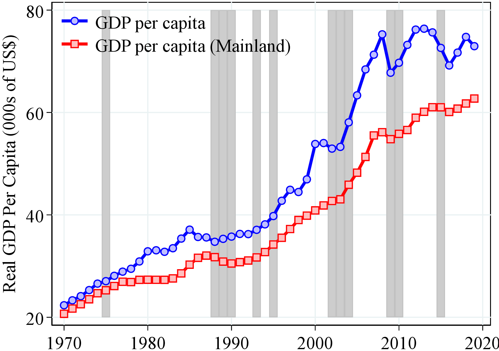
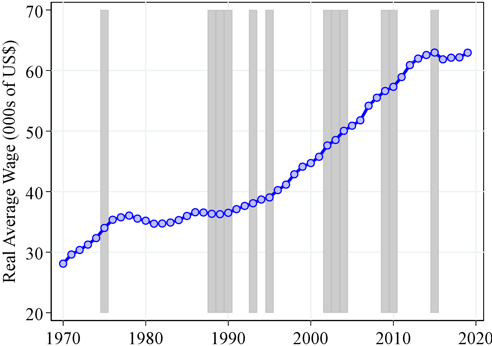
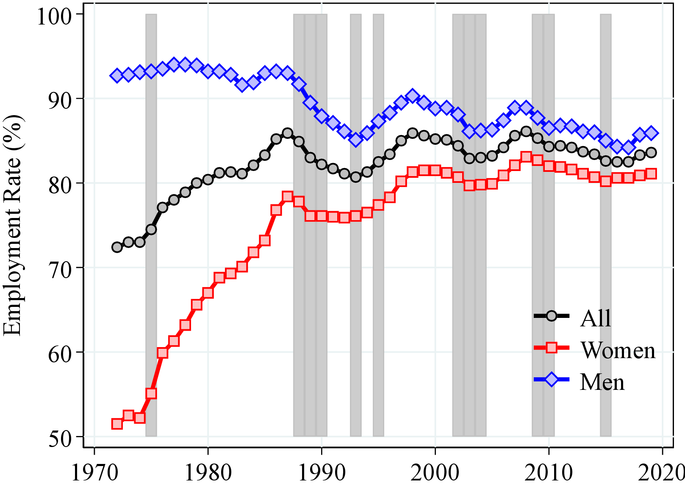
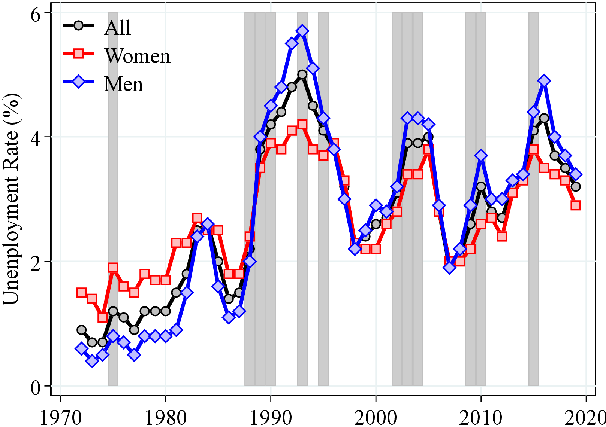
Notes: Figure 1 shows the evolution of main macroeconomic aggregates in Norway since 1970 (employment/unemployment rates from the Norwegian Labor Force Survey that started in 1972). GDP and average wage are expressed in U.S. dollars of 2018. Mainland Norway consists of all domestic production activity except exploration of crude oil and natural gas, transport via pipelines, and ocean transport. The gray bars represent recession years, defined as years with an unemployment growth rate of 0.4 pp. or more and an output gap of -0.5 or less. Source: National Accounts and Labor Force Survey, Statistics Norway.
2.2 Data Description
Our dataset consists of several high-quality registers covering the entire Norwegian population. All of them are collected for administrative purposes; thus, our data are less subjected to the measurement error and sample attrition that usually plague survey data. In our analysis, we use two different measures of income. The first one is labor earnings between 1993 and 2017. The second one covers a longer time span between 1967 and 2017 and includes both earnings and work-related government transfers. Below, we describe each income measure and explain how they are used in our analysis.
Labor earnings. The first income variable is a comprehensive measure of labor income from all jobs (except for self-employment income).4 It is obtained from annual tax records and is third-party reported by employers.5 This measure allows our benchmark results on earnings inequality and volatility in Sections 3.1 and 3.2 to be comparable with other articles in this issue of the journal, which also use labor earnings in their analysis.
After-transfers income. The second income variable is collected to calculate social security pension benefits since 1967 and includes all work-related pensionable income components: labor income (as described above), self-employment earnings, unemployment, sick leave, parental leave, vocational rehabilitation, and time-limited disability benefits. The long panel dimension (51 years) of this variable is key for our analysis of the intergenerational transmission of income dynamics.
Certain measurement issues warrant specific attention for this income variable. First, some observations are top-coded as a result of an earnings limit for pension accrual. Top coding was most prevalent between 1967 and 1979. From 1986 on, there is none whatsoever (see Figure A.1 in Appendix A). Second, there are changes to how benefits are included in the data throughout the sample period: (i) Paid sick leave and parental leave were included after 1978 (paid sick leave was included even before 1978 if it was more than 90% of annual income); (ii) unemployment benefits were included after 1980; and (iii) various work activity benefits were included after 2002, 2004, and 2010. Finally, a tax reform in 1992 changed the way earnings from self-employment were reported.
Since the definition of this income measure changes over time, one should be careful in interpreting the trends in inequality and volatility derived from this income measure. Therefore, in Section 3 we focus on our consistent measure of labor earnings starting in 1993. However, these measurement issues are less of a concern for our intergenerational analysis, which pertains to the comparison of earnings risk within cohorts (e.g., fathers with more volatile incomes among their peers, or sons with steeper life-cycle income growth within their cohort) and not its variation across cohorts or over time.
We complement our data on income and wages with information on families to link children to their parents (derived from the Norwegian Population Register), educational attainment (from the National Education Register), and household wealth (from tax returns since 1993), which we will explain in more detail in Section 4. All nominal incomes are deflated to their 2018 real values using the Consumer Price Index in Norway. Furthermore, to make our results comparable across countries, we convert Norwegian kroner (NOK) values to U.S. dollars using the average exchange rate in 2018.
2.3 Sample Selection and Descriptive Statistics
Our baseline sample includes all residents in Norway between ages 25 and 55 who have a personal identification number. The number of individual-year observations between 1993 and 2017 is about 51.3 million in total. As a standard practice in the literature, we trim observations below a certain time-varying annual minimum earnings threshold (\(Y_{t}^{min}\)), both to focus on workers with a meaningful labor force attachment and to avoid few observations of very low earnings affecting our results. Norway does not have a national minimum wage defined by law. Thus, we define \(Y_{t}^{min}\) as the annual earnings of an individual who works 40 hours a week for a full quarter at half the US minimum wage, which roughly equals NOK 12,000 in 2017 (see Guvenen, Ozkan and Song (2014)). 16% of the earnings observations between 1993 and 2017 are below this threshold. However, most of these individuals are out of the labor force and receive zero labor earnings during a given year, whereas only 2% of individuals with positive labor earnings are below \(Y_{t}^{min}\). Using the after-transfer income measure, only 11% of observations are trimmed, of which 1.2% have positive after-transfer income below \(Y_{t}^{min}\).
| Panel A: Sample Statistics | ||||||||||||
| Obs. (1000s) | Mean Earnings | Age % | Public % | Education % | ||||||||
| Year | Men | Women | Men | Women | \([25,35]\) | \([36,45]\) | \([46,55]\) | Men | Women | \(\lt HS\) | \(HS\) | \(CD+\) |
| 1995 | 1,046 | 954 | 44,467 | 27,805 | 42.1 | 31.8 | 26.1 | 27.1 | 52.0 | 41.9 | 27.4 | 30.8 |
| 2015 | 1.017 | 943 | 65,509 | 46,094 | 36.4 | 32.3 | 31.3 | 25.3 | 52.0 | 23.8 | 32.7 | 43.5 |
Notes: Table I shows summary statistics for the baseline sample. All nominal values are deflated to 2018 prices using the CPI of Norway and converted to US dollars using the average exchange rate in 2018. In the right columns of Panel A, we separate workers into three groups. \(<HS\) are workers with less than a high school diploma, \(HS\) are workers with a high school degree, and \(CD+\) are workers with a college degree or more advanced degrees.
Table I shows selected statistics for earnings from our baseline sample. First, our sample is almost evenly split between men (52%) and women (48%). Second, similar to other developed economies, the Norwegian working population has become older and more educated. Third, between 1995 and 2015, the earnings of men and women across all income levels have grown (Panel B). Finally, despite high employment rates for women, the gender earnings gap is relatively high, which stems from women working shorter hours and working more in part-time jobs (see Statistics Norway (2005)).
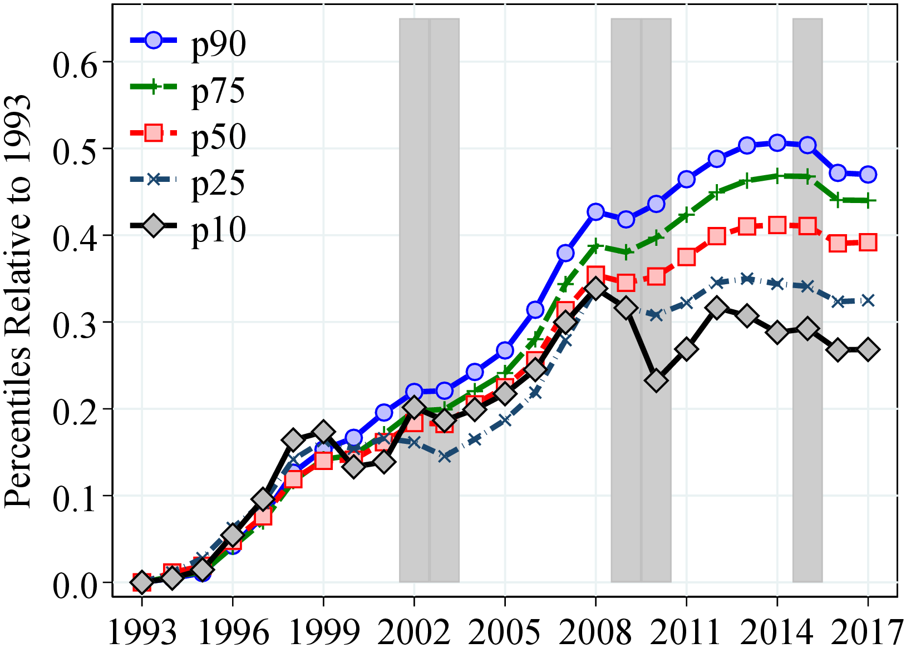
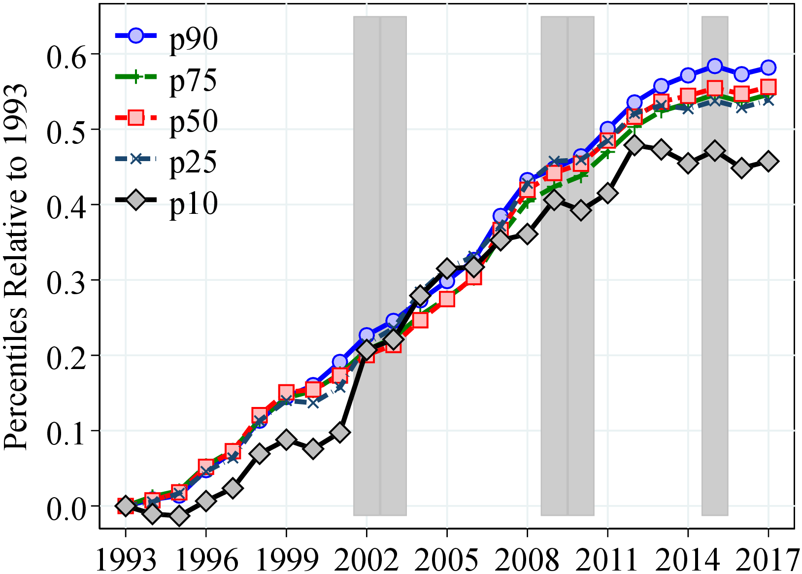
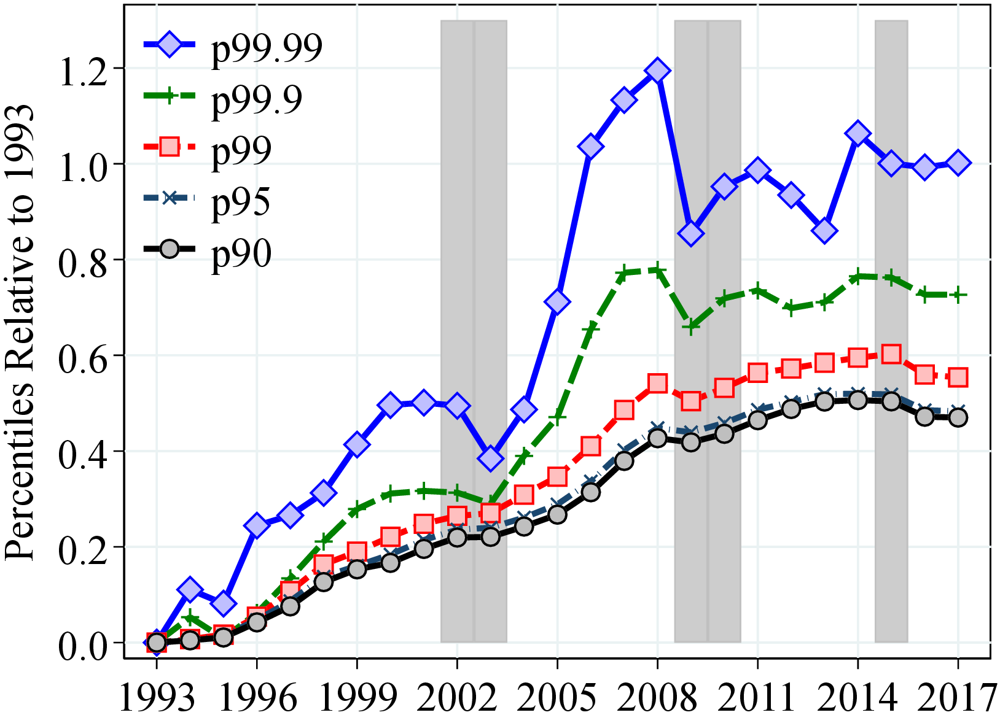
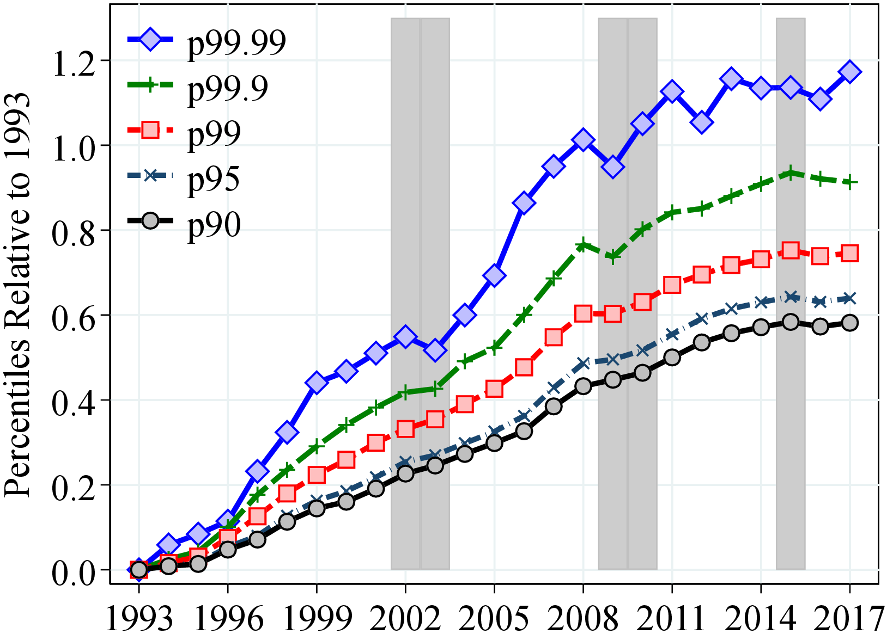
Notes: Figure 2 shows the evolution of the following percentiles of log earnings for men and women: Panels (a) and (b): P10, P25, P50, P75, P90; Panels (c) and (d): P90, P95, P99, P99.9, P99.99. All percentiles are normalized to 0 in 1993. Shaded areas represent recession years which are defined as years with an unemployment growth rate of more than 4 pp. and an output gap of more than 5%. See Section 2 for sample selection and definitions.
Stata Programs for the GRID Database. To ensure the harmonization of the statistics in the GRID database, Ozkan and Salgado (2022) provide a set of Stata programs that can be easily implemented using any panel data on earnings with only minor adaptations. The common set of results presented in this issue of the journal is generated by these programs.
3 Earnings Dynamics in Norway
3.1 Earnings Inequality
We begin our analysis with the evolution of the earnings distribution (above \(Y_{t}^{min}\)) between 1993 and 2017. We also comment on longer-run trends from our 1967-2017 sample by referring to the corresponding figures in Appendix A. Throughout the paper, we present results for men and women separately (see Appendix B.2 for the results from the combined sample). The results in this section are for raw earnings without controlling for changes in educational attainment or the age composition of the population. We find qualitatively similar patterns if we control for these observable characteristics of workers (see Appendix B.3), which suggests that compositional changes are not likely to be the main driver of the evolution of earnings distribution over our sample period.
Similar to other Scandinavian countries, Norway has a relatively compressed earnings distribution compared to other developed economies. For example, the spread between the 90th and 50th percentiles (hereafter, P90-P50) and between the 50th and 10th percentiles (P50-P10) of log labor earnings for men is on average 55 and 115 log points over our sample period (Figure B.1), respectively, compared to 100 and 150 log points for a similar sample from the U.S. in 2010 (see Guvenen, Ozkan and Song (2014)). Employing a similar sample selection and methodology, Friedrich et al. (2021) and Leth-Petersen and Saverud (2021) find roughly similar levels of inequality for Sweden and Denmark, respectively. The earnings distribution for women is relatively more dispersed than for men, mainly because of the higher inequality below the median (e.g., the P50-P10 for women is around 140 log points versus 115 log points for men).
In 1993, Norway was emerging from a severe banking crisis (see Gerdrup et al. (2004)) and entering a period of relatively strong growth, partly because of high oil prices (see Bjornland and Thorsrud (2016)). Until the Great Recession, the earnings of men grew steadily at a similar pace except for those above the 90th percentile, who enjoyed relatively steeper growth (Figures 2a and 2c). This steady growth is roughly a continuation of a longer-run trend since the 1970s except for low earners, who saw large losses during the 1991 recession (Figure A.2).6
During and in the aftermath of the Great Recession, however, this stable earnings growth either halted or significantly slowed down for most workers, and earnings inequality grew noticeably (Figure B.1). For example, between 2008 and 2017, incomes between the 90th and 50th percentiles grew by a mere 5 log points, whereas the 10th percentile declined during this 10-year period (Figure 2). These concerning developments are partly because of a sharp drop in oil prices from 2014 to 2015, which hit the oil-rich Norwegian economy and caused another recession in 2015.
Similar to men, women in the bottom 90th percentile experienced steady earnings growth of around 40 to 50 log points between 1993 and 2008 (Figure 2b). After 2008, income growth slowed down for everyone but more so at the bottom of the distribution, thereby increasing P50-P10, albeit to a smaller extent than for men (Figure B.1). These trends are broadly in line with those from the after-transfer income, with the key exception that after-transfer income in the bottom 10% has grown faster after the banking crises of the early 1990s (Figures A.2b and A.3b), which then led to a significant reduction in inequality until the early 2000s. Furthermore, the P90-P10 of log after-transfer income reveals a slow long-run trend of decline, starting in the mid-1970s when the labor force participation of women started increasing steeply (Figure 1c).7
Interestingly, earnings in the top 10% evolved differently from the rest of the distribution until 2008 as they grew faster and more unequal, albeit to a lesser extent than seen for the U.S. or the U.K. (Figures 2c and 2d). For example, male workers at the 90th percentile in 2008 earn 53% (43 log points) more relative to 1993, whereas the earnings of those at the 99th, 99.9th, and 99.99th percentiles grew by around 75%, 120%, and 230%, respectively (Figure 2c).8 However, after 2008, high-earnings men experienced stagnant or shrinking incomes, which also led to a slight decline in top income inequality. For women, however, top income growth has not slowed as much after 2008, and inequality has continued to increase, albeit at a slower pace.9
Inequality within Public and Private Sectors. Income inequality in the private and public sectors has evolved quite differently over the last 20 years (see Online Appendix A). For instance, the P90-P10 for workers employed in the private sector increased by 30 log points between 1993 and 2014. Among men, most of the increase in inequality is accounted for by an expansion of the left tail of the distribution. For women, the increase in inequality is due to the stretching of both of the tails. In contrast, inequality in the public sector has remained the same among men and declined quite significantly among women, especially after 2001. These results highlight the prominent role that the public sector plays in reducing income inequality in Norway.
3.1.1 Life-Cycle Earnings Inequality
The relatively compressed earnings distribution and the changes in inequality could, in principle, be separated into two components: inequality at young ages and the life-cycle evolution of earnings dispersion. To investigate each component, we document how within-cohort inequality evolves over the life cycle and across different cohorts. Specifically, Figure 3 plots the P90-P10 of log earnings in each age for 18 cohorts of workers entering the labor market at age 25 from 1993 to 2010. The colored markers connect different ages of the same cohort, thus showing how within-cohort inequality evolves over the life cycle. Dashed lines connect the same ages of different cohorts and show how the inequality in a particular age evolves over time.
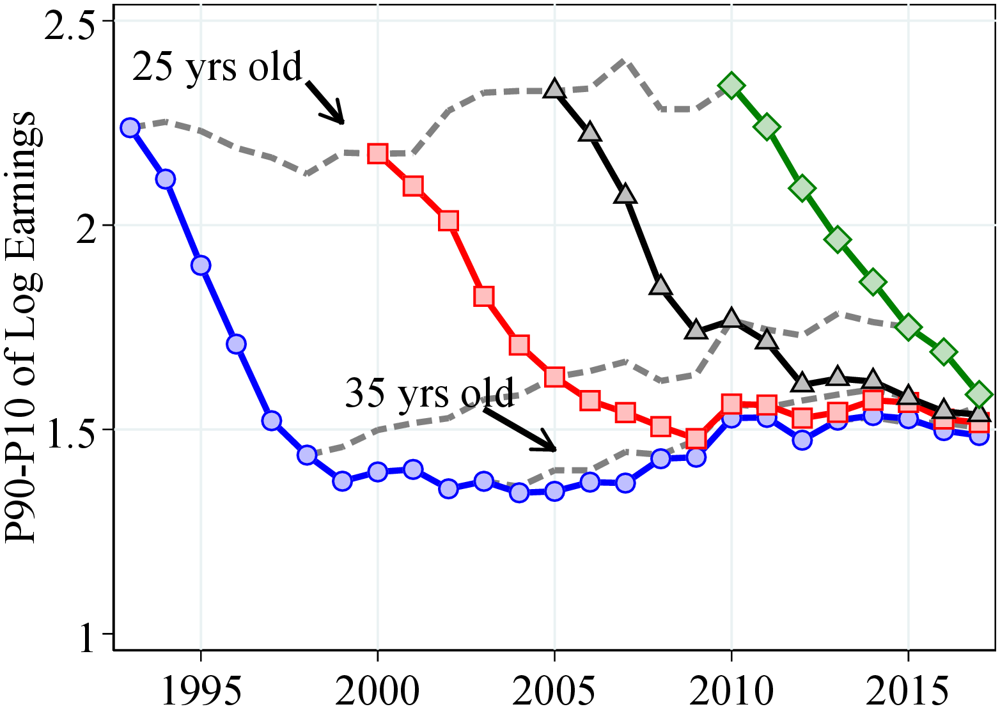
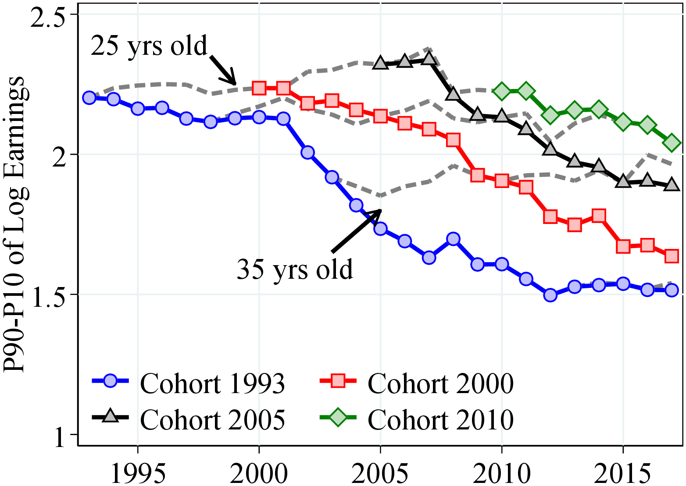
Notes: Figure 3 shows the P90-P10 log earnings differential over the life cycle for selected cohorts for men and women. A cohort is defined by the year in which the cohort turns 25. Dashed lines connect individuals of the same age. The plots consider cohorts born between 1969 and 1986.
Despite the lower overall earnings inequality in Norway compared to the U.S., initial dispersion at age 25 is relatively high. For example, P90-P10 of log earnings for 25-year-old men is 230 log points in 2010 versus 220 log points for the U.S. (Guvenen et al. (2018)). In fact, initial dispersion in Norway is significantly higher compared to several other countries, for example, Sweden (Friedrich et al. (2021)), Denmark (Leth-Petersen and Saverud (2021)), and Canada (Bowlus et al. (2021)).
Furthermore, newer cohorts enter the labor market more unequal, especially above the median, compared to older cohorts, and more so for men (Figure B.4). In particular, the P90-P50 of log earnings for 25-year-old men (women) is 55 (70) log points in 1993 versus 75 (80) log points in 2017. We find similar patterns for the after-transfer income measure starting in the mid-1970s (Figure A.3). The higher initial inequality for newer cohorts mirrors the change in overall earnings inequality. Guvenen et al. (2018) and Engbom et al. (2021) also document that initial inequality and overall inequality track each other very closely in the U.S. and Brazil, respectively.10
The life-cycle profile of earnings inequality is roughly similar for all cohorts: For men between 25 and 35 years old, within-cohort inequality declines by around 70 log points and remains relatively stable afterward. Women experience a slower but roughly steady decline in inequality throughout the life cycle. Using the after-transfer income measure between 1967 and 2017, we find that men and women experience a steep decline in inequality until they are 35 years old, but then income dispersion increases slightly for men and stays relatively constant for women (Figure A.4). These findings are in sharp contrast to the increasing age profile of earnings inequality seen in several developed economies (Lagakos et al. (2018)). For example, Guvenen et al. (2021) document that the variance of log earnings increases by 55 log points between ages 25 and 55 in the U.S. The decline in earnings inequality over the life cycle also explains why Norway has a relatively compressed earnings distribution.
For men, the decline in P90-P10 over the life cycle is mainly a result of the closing of the gap between the bottom and median workers. P50-P10 declines by around 70 log points between ages 25 and 35 and remains roughly constant afterward (Figure B.4a).11 In comparison, the P90-P50 decreases only until age 28 and then increases steadily (Figure B.4c). These patterns are remarkably different for women, with life-cycle inequality declining at both ends of the distribution (Figures B.4b and B.4d).
In contrast to the marked decline in earnings inequality below the 90th percentile, top income inequality increases significantly over the life cycle. The difference between the 99th and 90th percentiles of log earnings (P99-P90) increases over the life cycle by around 40 log points for men and 30 log points for women (Figures B.4e and B.4f, respectively). Furthermore, P99-P90 is higher for newer cohorts at all ages compared to older cohorts. These patterns track the rise in overall top income inequality over our sample period.
Our findings suggest that different economic mechanisms may be at play in determining the inequality at different parts of the earnings distribution, which is consistent to what other studies have found. For instance, Karahan, Ozkan and Song (2022) show that in the U.S., earnings differences between the bottom and median earners are mainly a result of the differences in unemployment risk, whereas the right-skewed distribution of returns to experience explains the inequality between the top and median earners.
3.2 Distribution of Earnings Growth
In this section, we characterize income volatility by documenting the properties of the distribution of individual earnings changes in Norway. We measure income change as the log growth rate of residual earnings between years \(t\) to \(t+k\), \(g_{it}^{k}=\tilde{\varepsilon}_{it+k}-\tilde{\varepsilon}_{it}\) for \(k=\left \{1,5\right \}\). We obtain residual earnings, \(\tilde{\varepsilon}_{it}\), by regressing log earnings in each year on a set of age dummies for men and women separately.12
3.2.1 Higher-Order Moments of Individual Earnings Growth
Recent literature has shown that idiosyncratic earnings changes display strong non-Gaussian features—such as left skewness and excess kurtosis—and that the extent of these non-normalities varies significantly with age and earnings level (e.g., Arellano, Blundell and Bonhomme (2017); Guvenen et al. (2021)). Furthermore, these features have important implications for the consumption and savings behavior of households (e.g., Kaplan, Moll and Violante (2018); De Nardi, Fella and Paz-Pardo (2020)). Exploiting our dataset’s sheer size and high quality, we also focus on these moments, in addition to first and second moments.
Similar to other countries (e.g., De Nardi et al. (2021)), one-year and five-year earnings growth distributions in Norway display left (negative) skewness and excess kurtosis relative to a normal density (Figures C.4 and C.3). For example, almost twice as many workers experience a decline of more than three standard deviations (“disaster shocks”) as those experiencing increases of the same size (Table C.1). At the same time, the fraction of workers who experience an earnings change of less than 5% is 31.8% in the data versus 6.8% from a normal density with the same standard deviation. Similarly, in the data, 3.3% of workers see their incomes change by more than three standard deviations or more versus 0.2% from a normal density.
We next investigate how the earnings growth distribution evolves over time, over the business cycle, and between different groups of workers. Below we present results for one-year earnings changes to better capture the high-frequency business-cycle variation. The corresponding figures for five-year changes—which capture more persistent innovations—are reported in Appendix C.1 and show similar qualitative patterns. Also, in the main text, we report percentile-based moments (e.g., Kelley skewness and Crow-Siddiqui kurtosis), which are robust to outliers but overlook valuable information in the tails of the distribution. Therefore, we also document standardized moments in Appendices C.1 and C.2 and discuss any substantial differences in our findings from these measures.
3.2.2 Trends and Business-Cycle Variation
Volatility. Overall earnings volatility for women—as measured by the P90-P10 of log income changes—is almost twice as large as the earnings volatility for men, hovering around 115 log points for women versus 60 log points for men (Figure 4a). This is likely a result of the generous maternity leave benefits provided by the Norwegian government (up to nine months of full pay), the fact that women are more likely to work in part-time jobs with more flexible hours, and an overall weaker labor market attachment (OECD, 2019). In addition, the income volatility of men has risen significantly over our sample period, with P90-P10 increasing from 54 log points in 1993 to 65 log points in 2016, whereas for women, income volatility has remained relatively stable over time (see Figure C.5 for upper- and lower-tail volatility). These findings are in contrast with the evidence from the U.S.—also based on administrative data—that volatility is roughly similar for men and women and has been trending down since the 1980s for both (Bloom et al. (2017)). Our results, however, are similar to those documented for Italy (Hoffmann, Malacrino and Pistaferri (2021)), the U.K. (Bell, Bloom and Blundell (2021)), and Sweden (Friedrich et al. (2021)).
After-transfer income volatility displays different trends relative to earnings volatility (Figure A.5). After-transfer income volatility declines steeply since the mid-1970s especially for women, when sickness benefits and unemployment insurance were added to our after-transfer income measure. In fact, in 2017 men and women face similar volatility according to the after-transfer income measure.
Skewness. Figure 4b shows the asymmetry in the distribution of earnings growth as measured by the Kelley skewness (Kelley, 1947), \(\mathcal{S_{K}}=\frac{\text{(P90-P50)}-\text{(P50-P10)}}{\text{P90-P10}}\). In Norway, Kelley skewness of log earnings growth averages -0.025 for men and -0.014 for women during our sample period. However, when measured with the third standardized moment, earnings growth displays strong negative skewness in all years (Figure C.5c), indicating a stronger asymmetry in the extreme tails of the distribution. As expected, this negative skewness is ameliorated after including public transfers in the income measure. In fact, after-transfer income changes are positively skewed (Figure A.6).
Kurtosis. Figure 4c shows the excess kurtosis of one-year earnings changes for men and women as measured by Crow and Siddiqui (1967) kurtosis, \(\mathcal{C_{K}}=\frac{\text{(P97.5-P2.5)}}{\text{P75-P25}}-2.91\), where 2.91 corresponds to \(\frac{\text{(P97.5-P2.5)}}{\text{P75-P25}}\) of a normal distribution. The kurtosis of earnings growth has remained relatively stable around at 10 over our sample period, showing only a slight increase after the Great Recession for women.13 Again, including public transfers makes income changes less leptokurtic, albeit only very little (Figure A.6).
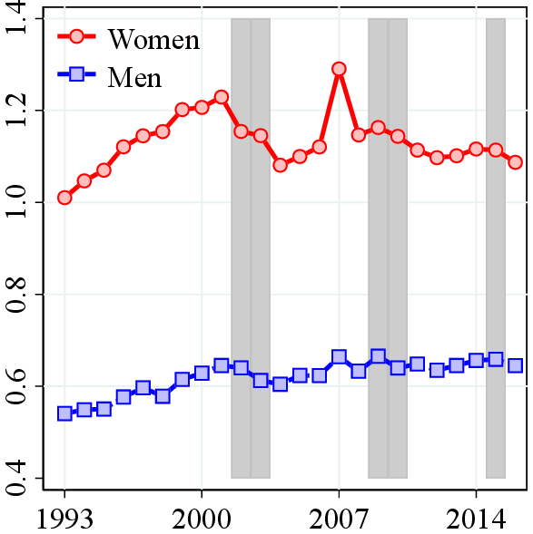
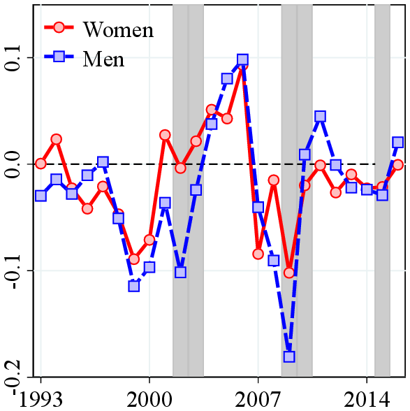
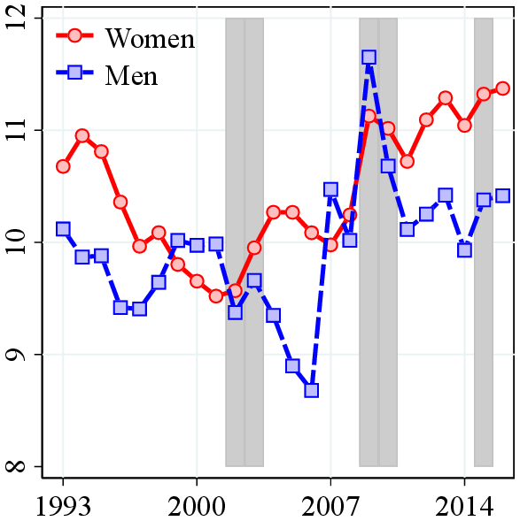
Notes: Figure 4 shows the P90-P10, Kelley skewness, and excess Crow-Siddiqui kurtosis of earnings growth for men and women. The shaded areas represent recession years, with unemployment growth in the rate of more than 4 pp. and an output gap of more than 5%. See Section 2 for sample selection and definitions.
Cyclical Nature of Individual Earnings Growth. To measure the business-cycle variation in income risk, we estimate time-series regressions of earnings growth moments on the unemployment rate and GDP growth (both standardized). Only some aspects of income risk seem to be cyclical (see Table C.2).14 Even when it is statistically significant, the cyclical variation in income risk is not economically significant except during the Great Recession.15 This result can be partly explained by a coordinated bargaining system between employers, unions, and the government that allows for some wage flexibility to prevent large increases in unemployment (and large declines in earnings) during recessions (Nilsen (2020)).16
3.2.3 Heterogeneity in Idiosyncratic Earnings Changes
We now investigate how the properties of earnings growth vary by age and permanent earnings (PE). Our measure of PE for worker \(i\) in period \(t-1\), \(P_{t-1}^{i}\), is defined as the average earnings between \(t-1\) and \(t-3\) net of age and year effects.17 In each year \(t\) (starting 1996), we first divide workers into three age groups: 25–34, 35–44, and 45–55. Then, within each gender-age group, we rank individuals into 40 quantiles with respect to their level of \(P_{t-1}^{i}\). To capture the earnings risk of top earners, we place the top 0.1% workers in a separate group. Finally, within each quantile, we compute moments of residual earnings growth, \(g_{it}^{k}\), between periods \(t\) and \(t+k\). The conditional distribution of earnings growth can be thought of as the income uncertainty that workers of the same gender, age, and PE face looking ahead. In our figures, we plot the average of these moments over the 17 years between 1996 and 2012, which is the last year we can compute five-year earnings growth.
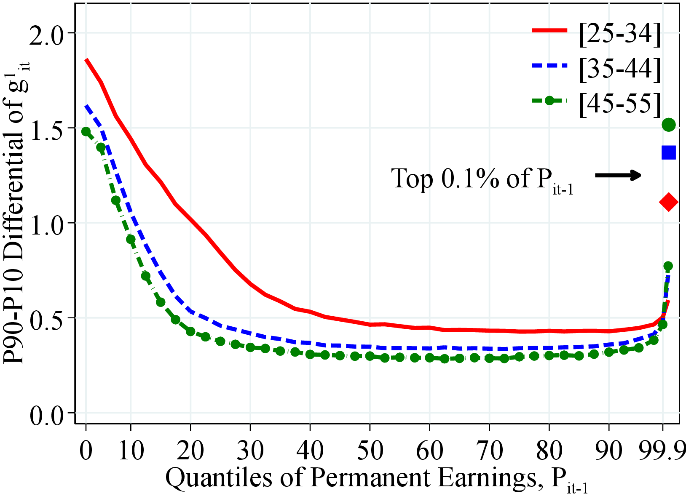
(a) Men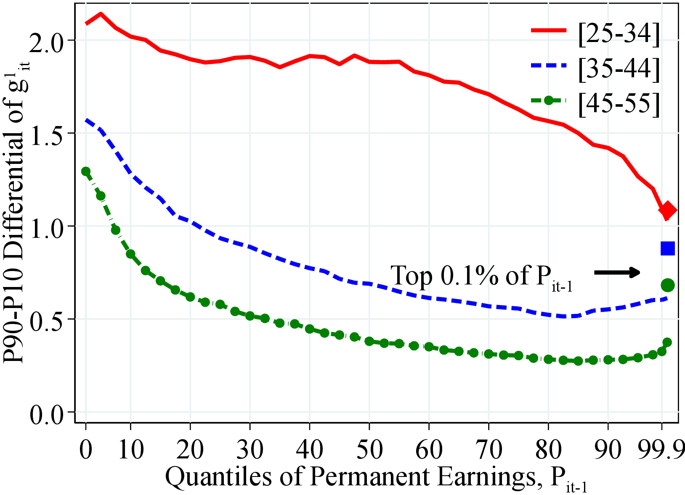
(b) WomenFigure: Figure 5 – Dispersion of Earnings Growth by Permanent Earnings and Age
Notes: Figure 5 shows the P90-P10 of the log growth rate of residual earnings for men and women within quantiles of the PE distribution, \(P_{it-1}\). The solid markers represent P90-P10 for those workers at the top 0.1% of the PE distribution for different age groups (diamond for 25 to 34 years old, square for 35 to 44 years old, and circle for 45 to 55 years old).
Heterogeneity in Volatility. For men and women, the dispersion of earnings changes steeply declines from low-income workers to those around and above the median of the PE distribution (Figure 5). Earnings growth dispersion is relatively flat between the 40th and 97th percentiles and only increases at the top of the PE distribution. This finding is consistent with top earners being more likely to have performance-based compensation (e.g., Parker and Vissing-Jorgensen (2010)). Notice also the significant age variation in volatility among women, as young women face the most volatile earnings (similar patterns are found for U.S. males (Karahan and Ozkan (2013))).
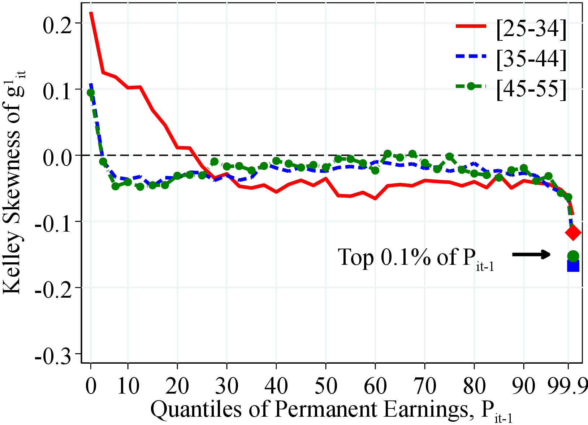
(a) Men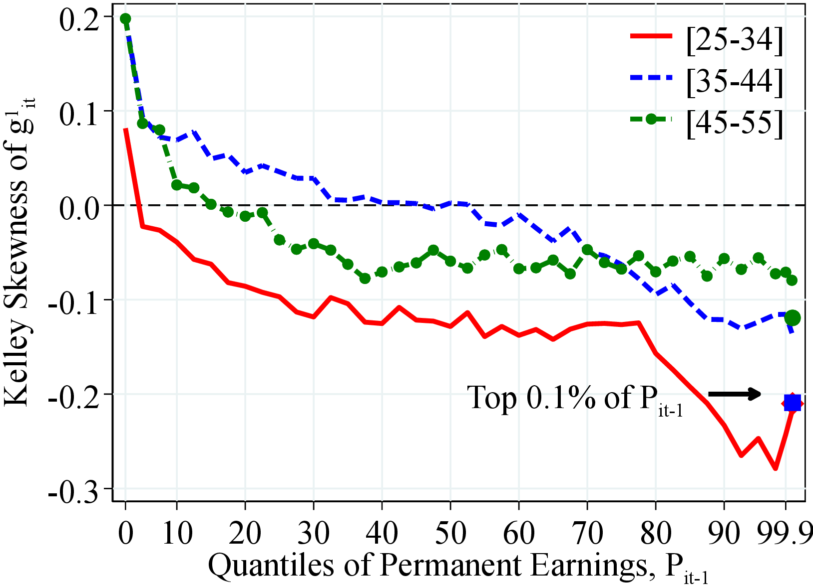
(b) WomenFigure: Figure 6 – Kelley Skewness of Earnings Growth by Permanent Earnings and Age
Notes: Figure 6 shows the Kelley skewness of the log growth rate of residual earnings for men and women within quantiles of the PE distribution, \(P_{it-1}\). The solid markers represent P90-P10 for those workers at the top 0.1% of the PE distribution for different age groups (diamond for 25 to 34 years old, square for 35 to 44 years old, and circle for 45 to 55 years old).
Heterogeneity in Skewness. Skewness declines as we move from low to high PE workers (Figure 6). This decline is more marked for women than for men. In fact, for men between the 30th and 80th percentiles, skewness is mostly flat and close to zero and only drops significantly at the very top of the PE distribution. Furthermore, earnings growth becomes more left skewed over the life cycle, with the largest differences being between the youngest and the oldest age groups. Overall, the variation in skewness by PE and age is similar to the variation found for the U.S. (see Guvenen et al. (2021)).
Again, the standardized third moment depicts different patterns compared with the Kelley measure: it is significantly negative and declines substantially from the bottom to the top of the PE distribution (Figure 7). Furthermore, for the top 0.1% workers (except for the youngest women), earnings growth is less left skewed relative to other high-income peers, suggesting that a significant fraction of them experience large positive earnings changes. The marked differences between these two measures highlight the importance of considering the entire distribution when analyzing higher-order moments.18
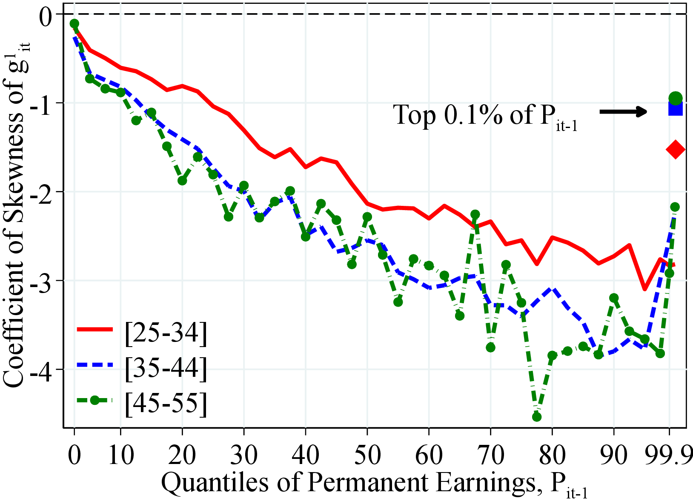
(a) Men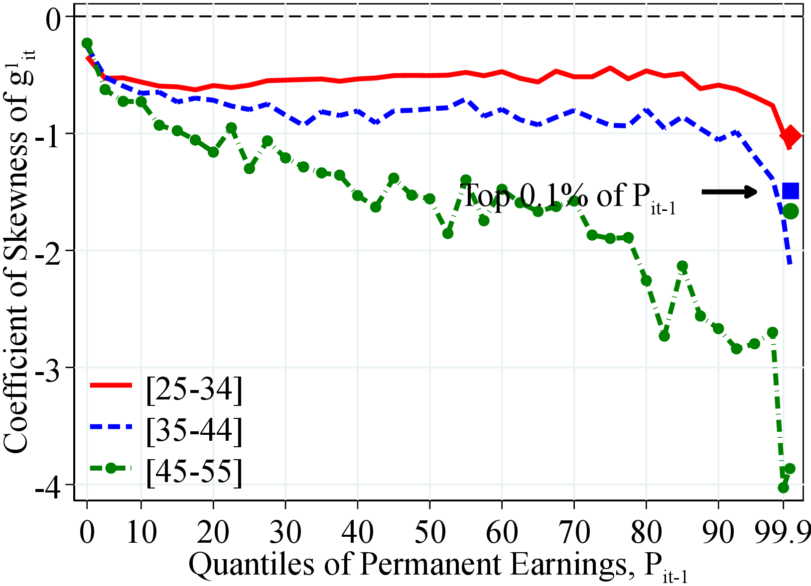
(b) WomenFigure: Figure 7 – Skewness of Earnings Growth by Permanent Earnings and Age
Notes: Figure 7 shows the coefficient of skewness (third standardized moment) of the log growth rate of residual earnings for men and women within quantiles of the PE distribution, \(P_{it-1}\). The solid markers represent the top 0.1% of the PE.
Heterogeneity in Kurtosis. Kurtosis exhibits a hump-shaped profile over the PE distribution and is usually higher for older workers with a higher peak for women (14 versus 11 for men) and the peak being at a higher PE for women (Figure 8). Similar to skewness, the fourth standardized moment depicts relatively different patterns compared to the Crow-Siddiqui measure (again because of the role played by extreme earnings changes). The fourth standardized moment increases almost monotonically as we move from low- to high-PE workers, peaking at around the 97th percentile (Figure C.11).
3.3 Earnings Mobility
Having studied the properties of the distribution of earnings levels and growth, we now take a longitudinal perspective and turn to earnings persistence. Following our graphical approach, we plot the average rank-rank mobility that measures the expected position of an individual in the income distribution in year \(t+k\) conditional on the individual’s position in year \(t\). To isolate the persistent component of earnings, we use a slightly different version of permanent income, \(P_{it}^{*}\), defined as the average of labor earnings between periods \(t\) and \(t-2\) including earnings below the minimum earnings threshold.19 In this section, we present the average rank-rank mobility measure between \(t\) and \(t+10\). Further details and the results for 5-year average rank-rank mobility figures are presented in Appendix B, where we also report the 5-, 10-, and 15-year Markov transition matrices for \(P_{it}^{*}\) for a more complete picture of workers’ earnings dynamics.
Figure 9 shows the average rank-rank mobility for two age groups, 25-34 and 35-44, separately. Several remarks are in order. First, earnings mobility declines significantly after the first decade of working life. This finding is consistent with the previous results in the literature (see Karahan and Ozkan (2013); Guvenen et al. (2021)) in that income becomes more persistent as individuals advance in their career until around the ages of 45 to 55. Second, relative to men, earnings mobility is higher for women, and even more so for younger women in the upper half of the distribution (Panel B of Figure 9). Third, income mobility is the highest around the 10th and 90th percentiles of the income distribution, especially for younger workers. Furthermore, upward mobility in the bottom half of the income distribution is higher relative to the downward mobility in the upper half of the distribution. In fact, higher upward mobility in the bottom half leads the rank-rank measure to cross the 45-degree line below the 50th percentile.
4 Intergenerational Transmission of Income Dynamics
The results in the previous section show that there is striking heterogeneity in earnings dynamics across workers by their permanent income and age (see also, e.g., Alvarez, Browning and Ejrnaes (2010)). We now investigate whether there is further heterogeneity in idiosyncratic income dynamics that stems from differences in parental backgrounds. The relationship between parents’ and children’s incomes has been an important question in economics and public policy (see Piketty (2000), Corak (2013), and Jantti and Jenkins (2015) for recent reviews of the literature). Following the seminal work of Solon (1992), several papers have documented intergenerational persistence in income in different countries, such as the U.S., the U.K. (Long and Ferrie (2013)), and Norway (e.g., Bratberg, Anti Nilsen and Vaage (2005), Pekkarinen, Salvanes and Sarvimaki (2017), and Markussen and Roed (2019)).
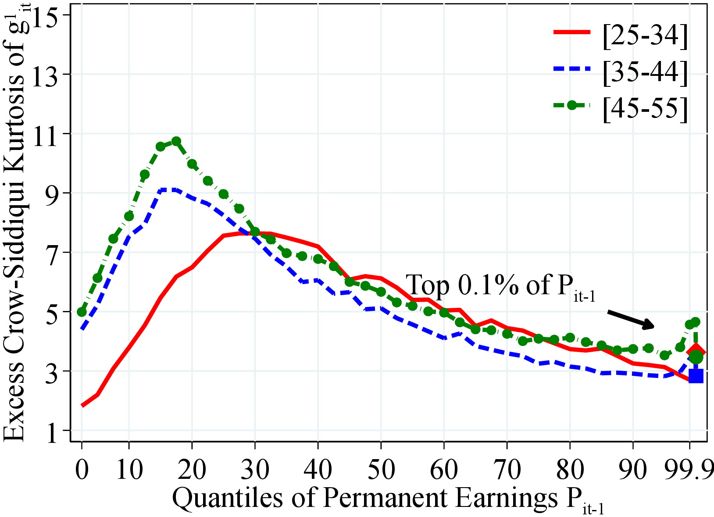
(a) Men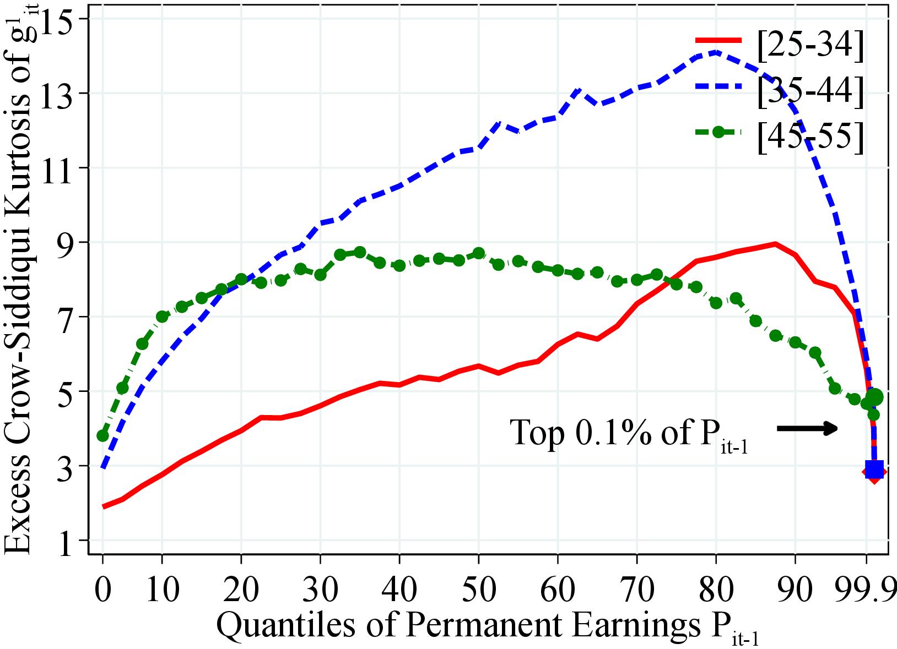
(b) WomenFigure: Figure 8 – Kurtosis of Earnings Growth by Permanent Earnings and Age
Notes: Figure 8 shows the excess Crow-Siddiqui kurtosis of the log growth rate of residual earnings for men and women with quantiles of the PE, \(P_{it-1}\). Excess Crow-Siddiqui kurtosis is defined as \(\mathcal{C_{K}}=\left (\text{P97.5-P2.5}\right)/\left (\text{P75-P25}\right)-2.91\) where \(2.91\) is the value of the Crow-Siddiqui measure for a normal distribution. In each plot, the solid markers represent the corresponding measure of kurtosis for those workers at the top 0.1% of the earnings distribution for different age groups.
Unlike most of the literature, which has focused on the relationship between parents’ and children’s income levels, we study the intergenerational transmission of income dynamics.20 In particular, we investigate whether children of fathers with steeper life-cycle income growth, more volatile incomes, or higher downside risk also have income streams with similar properties. Such correlations can arise, for example, if fathers and children share similar risk attitudes or work in similar jobs and sectors. We also investigate how the income dynamics of workers vary with parents’ financial resources. Our results from this study shed light, for instance, on the roles of (i) the dynastic precautionary savings motive of parents in wealth accumulation (as in Boar (2021)), (ii) the importance of family resources for children’s human capital accumulation (as in Holter (2015)), and (iii) the importance of parental insurance for the career choices of young adults (i.e., whether children of families with more resources can pursue high-risk, high-return careers, as in Fawcett (2020))).
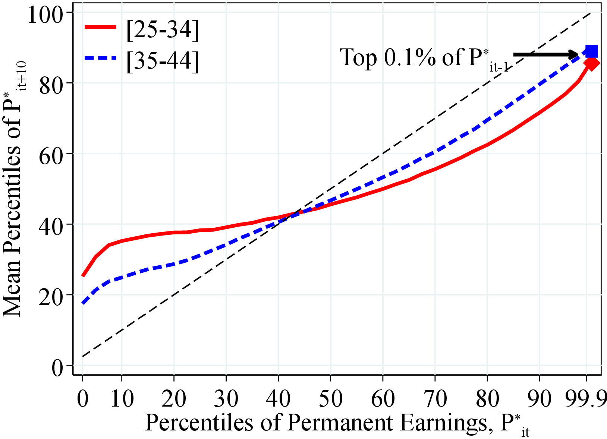
(a) Men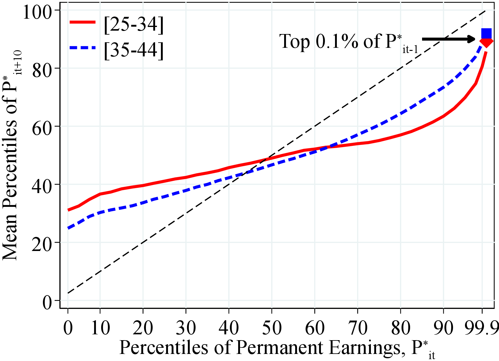
(b) WomenFigure: Figure 9 – Income Mobility: Rank-Rank Measures by Age
Notes: Figure 9 shows the average rank of individuals in period \(t+10\) according to their permanent earnings, \(P_{it+10}^{*}\), within different percentiles of permanent earnings in period \(t\). To construct this figure, we calculate the average rank in \(t+10\) for each year in our sample between 1993 and 2007 (the last years in which a 10-year change can be calculated) for each age group. We then average across all years in our sample. The 45-degree (dashed black) line represents the perfect immobility case (on average, individuals remain in the same percentile after \(t+10\) years).
We start our analysis in Section 4.1 with the intergenerational lifetime income mobility for both completeness and consistency with the earlier work. Next, in Section 4.2, we investigate how workers’ income risk varies by their fathers’ financial resources. For this purpose, we show the variation in moments of children’s idiosyncratic income changes by their fathers’ lifetime income and wealth. Finally, in Section 4.3, we study the intergenerational transmission of income dynamics by documenting the relation between (the first three) moments of parents’ and children’s income changes over the life cycle.
Intergenerational Data. Our administrative registers include family identifiers that allow us to link children to their parents. The information on family links is collected from the Norwegian Population Register, which was established in the early 1960s using information from the 1960 census. All individuals born after 1950 can be linked to their parents. For earlier cohorts, we were able to identify most parents. We focus on father-children pairs to prevent our results from being affected by the increase in female labor force participation over our sample period (Figure 1c).
The analysis in this section is based on the after-transfer income measure, which dates back to 1967 and ends in 2017. The very long panel dimension of the data—specifically, 51 years long—is crucial for our purposes for at least two reasons. First, it allows us to precisely measure each individual’s income risk over the life cycle. For example, we have 48 cohorts born between 1928 and 1975, for which we have at least 20 observations of annual incomes to compute individual-specific income risk measures (e.g., percentile-based dispersion and skewness measures of income growth). Second, it is crucial to use a dataset with a long panel for our purposes because a short-panel dataset can end up having only a few observations for one of the individuals in a father-child pair.
Wealth Data. Our wealth measure includes financial and non-financial assets derived from Norwegian administrative records and available from 1993 on. This high-quality dataset is mostly third-party reported to the tax authorities, and very little is self-reported. Employers, banks, brokers, insurance companies, and other financial institutions are obliged to send information on the value of the asset owned and on the income earned from these assets for all taxpayers in Norway. In our analysis, we use household net wealth that accounts for all financial wealth (e.g., stocks and bonds) and real wealth (e.g., imputed value of houses) net of short- and long-term liabilities (e.g., credit card debt and mortgages).21
Sample selection. We consider a sample of workers between 23 (typical college graduation age) and 60 years old (instead of the 25-55 age range used in previous sections) to maximize the number of observations for each individual. We include all individuals who have at least 20 years of non-missing income observations, half of which are above the minimum threshold, \(Y_{t}^{min}\). This sample allows us to compute a permanent income measure that is less sensitive to transitory changes in fathers’ and children’s incomes. Furthermore, it also ensures that we can reliably measure income risk at the individual level. Finally, we require fathers to have at least two years of wealth observations to be included in the sample. The final sample includes 965,743 father-child pairs, of which 471,229 are father-daughter pairs.
4.1 Intergenerational Income Mobility
We start by documenting the relation between fathers’ and children’s lifetime income levels. Since our sample includes individuals who have at least 20 years of income observations, our estimates are robust to the well-known attenuation bias in measures of intergenerational elasticity of income that arises when few observations are used to calculate permanent income (see Solon (1992); Black and Devereux (2011)). Notice that our sample consists of cohorts who were born between 1928 and 1975. Furthermore, we observe some cohorts for a shorter period of time than others, either when they are young or when they are old. Thus, to make the lifetime incomes comparable across cohorts, we normalize incomes in each year and age by their corresponding year-age cell average. Then, we define the residual lifetime income of an individual \(i\) born in cohort \(c\) (birth year) as
\[ LI_{i,c}=\frac{\left [\sum _{t=\max \left \{25+c,1967\right \}}^{\min \left \{60+c,2017\right \}}\frac{I_{it}}{d_{t,h(i,t)}}\right]}{\min \left \{60+c,2017\right \} -\max \left \{25+c,1967\right \} +1}, \]
where \(I_{it}\), \(h(i,t)\), and \(d_{t,h(i,t)}\) denote the real after-transfer income, age of \(i\) in year \(t\), and the average income at age \(h(i,t)\) and in \(t\), respectively.
Figure 10 shows a binned scatter plot of the log lifetime incomes of father-son pairs (left panel) and father-daughter pairs (right panel). In particular, on the \(x\)-axis we rank fathers into 100 bins with respect to their (log) lifetime incomes and plot the average log lifetime incomes of children in each bin on the \(y\)-axis. Our results confirm the findings of the earlier literature of a strong intergenerational persistence in income. We find that the relation between fathers’ and children’s lifetime income is fairly linear, with an elasticity of intergenerational income of 0.24. For example, an increase in fathers’ log lifetime income from -0.5 to 0.5—where the bulk of the sample is—is associated with an average increase in sons’ earnings of 25 log points (Figure 10a). The results are quite similar for the father-daughter pairs, with a slightly weaker elasticity of 0.23 (Figure 10b).22
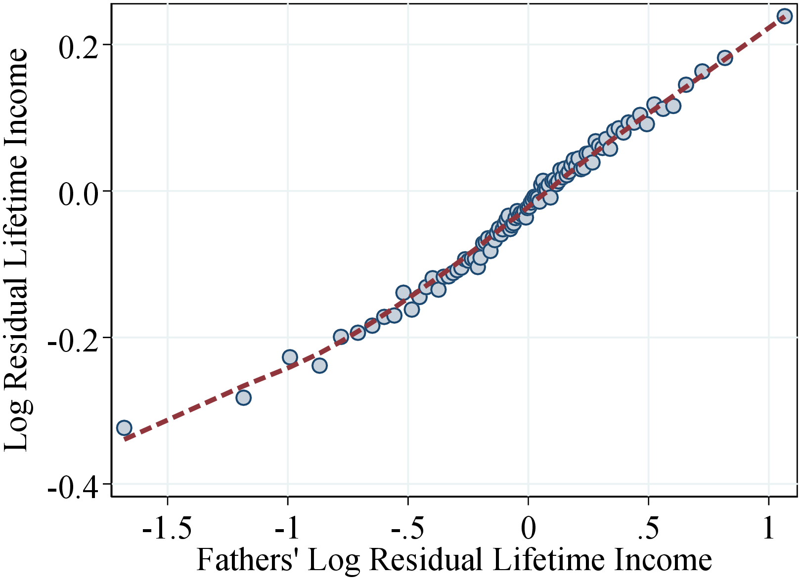
(a)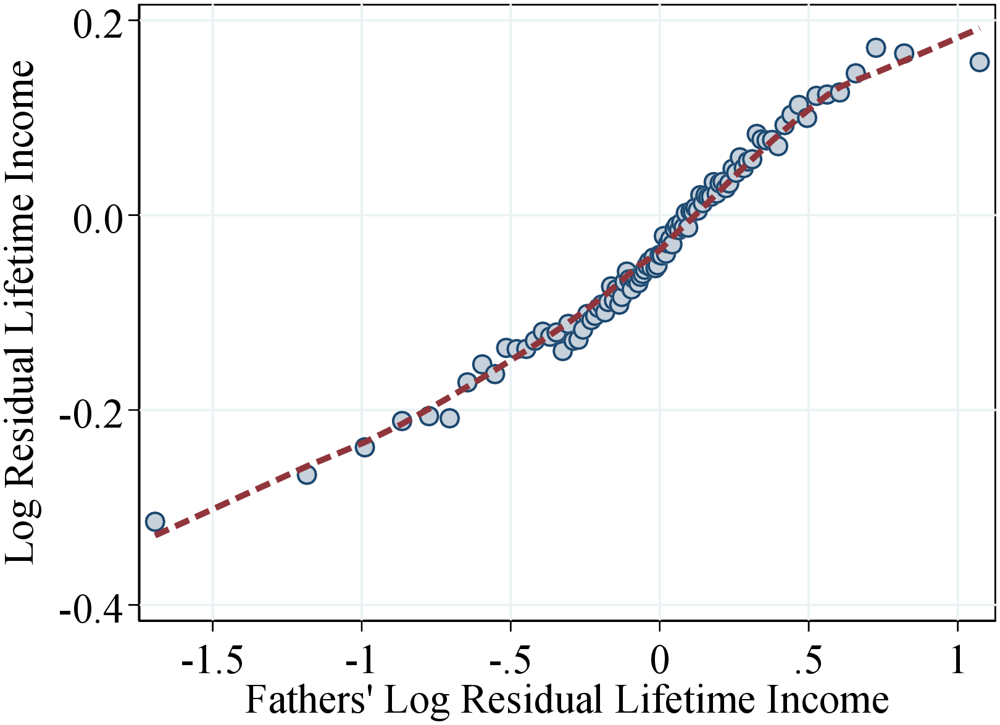
(b)Figure: Figure 10 – Fathers and Children Income Correlation
Notes: Figure 10 shows a binned scatter plot of fathers’ and children’s residual lifetime income using 100 bins. All nominal values are deflated to their 2018 real values using the Consumer Price Index in Norway. The plot is based on a sample of fathers and children with 20 years of data or more between 1967 and 2017.
To obtain a more granular view of the relation between fathers’ and children’s lifetime income, we construct intergenerational transition matrices (see Figure 11; for matrices with more income groups, see Appendix C.1). We rank fathers, sons, and daughters separately with respect to their lifetime incomes within age groups. These matrices then show the probability that a father in the \(ith\) income group (in the rows of the matrix) has a child in the \(jth\) income group (in the columns of the matrix) normalized by the size of the child’s quantile (i.e., population probability). For example, we find that 48% of the bottom 40% of fathers have a child in the bottom 40%. Therefore, the top left number in Figure 11 is \(1.2=\frac{48\%}{40\%}\)—the likelihood of a father in the bottom 40% having a son also in the bottom 40% relative to the population average.
The larger the numbers on the diagonal of the matrix are, the stronger the intergenerational persistence is. A diagonal of ones means that incomes of children and fathers are entirely uncorrelated as children have the same probability of being in their fathers’ income quantile as the population average. In contrast, for cells away from the diagonal the lower the numbers are, the lower the intergenerational income mobility is. For example, the likelihood of a father in the bottom 40% having a child in the top 0.1% quantile relative to the population average is only 30% (the top right number in Figure 11).
We find that all the values on the diagonal (and in most neighboring cells) are larger than 1, pointing to some degree of intergenerational persistence for all income groups. More interestingly, intergenerational persistence is highest in the top income groups: Sons of fathers in the 0.1% of the income distribution are 42.6 times and 13.1 times as likely to be in the 0.1% and next 0.9% relative to the population average, respectively. The intergenerational persistence for daughters at the top of the income distribution is lower compared to the sons.
How much upward and downward income mobility is there? The likelihood that the children (both sons and daughters) of the bottom 40% of fathers will reach the top 5% is only around 24% of the population average (i.e., 1.2% probability versus 5% probability in the population). Similarly, the probability that the sons (daughters) of the top 0.1% of fathers drop to the bottom 40% income group is 60% (90%) of the population average. These results show that even in Norway (which is known for its redistributive policies as well as free public schools and universities), upward and downward income mobility is still fairly low.
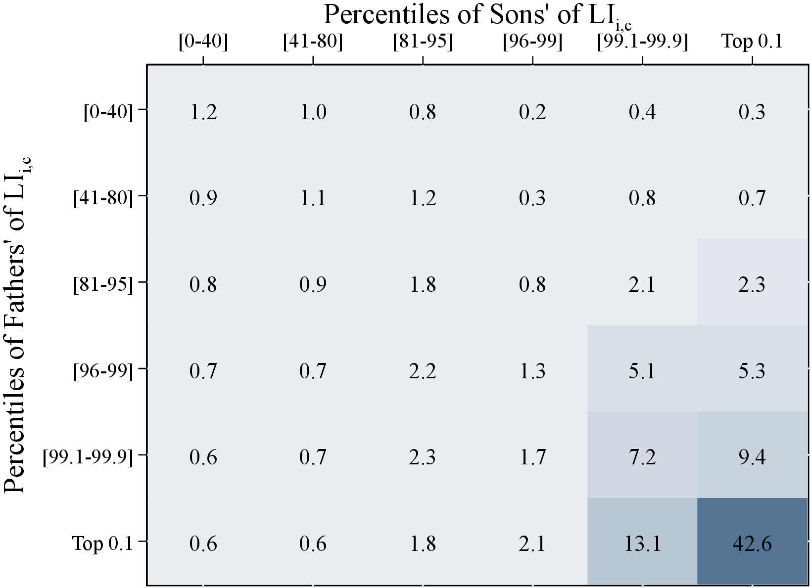
(a) Sons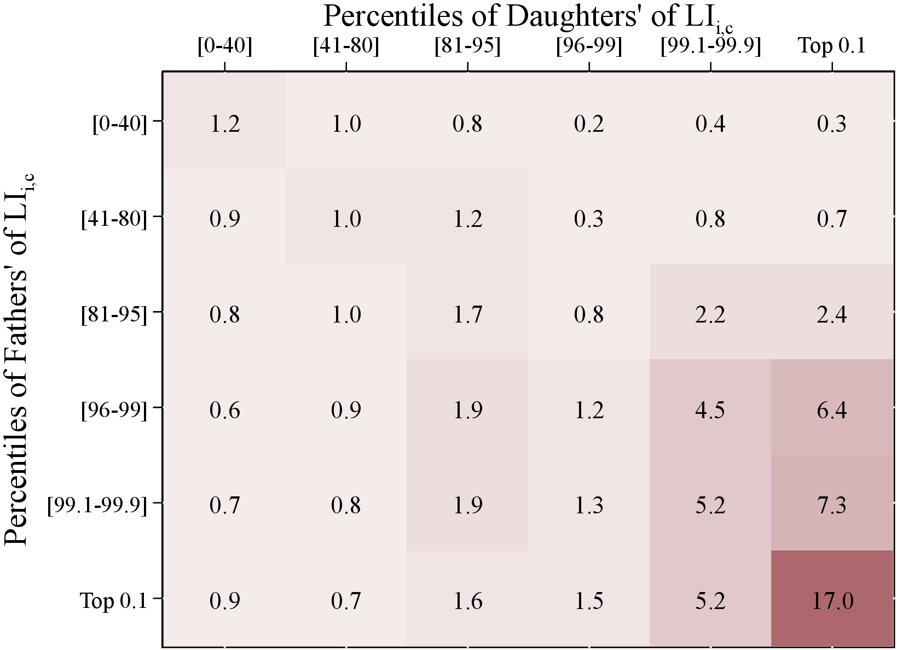
(b) DaughtersFigure: Figure 11 – Intergenerational Lifetime Income Mobility
Notes: Figure 11 uses fathers’ and children’s income data for a pooled sample of individuals between 1967 and 2017. The matrix shows the transition probabilities between quantiles of fathers’ lifetime incomes (rows) and children’s lifetime income groups (columns) normalized by the measure of the children’s quantile, therefore, indicating the likelihood relative to the population average. To construct this figure, we rank fathers, sons, and daughters separately among their peers with respect to their lifetime incomes, \(LI_{i,c}\).
4.2 Fathers’ Resources and Children’s Income Dynamics
Arguably, parents’ financial resources have a significant effect on children’s income dynamics. For example, high-income or high-wealth parents tend to spend more on their children’s education, which allows them to accumulate more human capital and enjoy high incomes from more stable jobs. Alternatively, children from rich families might be able to pursue high-risk, high-return careers or could afford to live off their inheritances without maintaining stable employment. Furthermore, parents may accumulate wealth to insure their children against income risk (e.g., Boar (2021)).
Motivated by these ideas, we investigate the relation between family resources—fathers’ lifetime income and net wealth—and children’s income dynamics. We follow the same methodology of Section 3.2.3 and analyze how the first four moments—mean, dispersion, skewness, and kurtosis—of the distribution of one-year log income changes of children vary across the distribution of fathers’ lifetime income and wealth. In particular, we rank fathers into 40 quantiles with respect to either their lifetime income, \(LI_{i,c}\), or their wealth, denoted by \(W_{i,c}\). We further group children of fathers at the top 1% of the income or wealth distribution in a separate bin. We then calculate the first four moments of residual income growth, \(g_{it}^{I,k}\), of children within each quantile.23 Similar to the previous section, we focus on percentile-based moments for one-year income changes. We also present results from standardized moments (because higher-order moments are sensitive to the extreme observations) as well as those for the five-year changes (which capture more persistent changes in after-transfer income) in Appendices C.2 and C.3, respectively. They show qualitatively similar patterns.
To make the measures of wealth comparable across cohorts, we normalize each individual’s net wealth by a year-age cell average—similar to how we construct the lifetime income measure. The data on wealth only span from 1993 to 2014; therefore, we cannot observe the wealth of most fathers when they were young. However, this is a minor issue since wealth is a stock variable—unlike income (a flow variable)—which makes it much more persistent than income. Therefore, in our analysis we consider the average residual net worth of a household calculated between ages 45 and 54. Some cohorts either are not in our sample or have only a few observations in this age interval. For them, we use observations in years closest to these ages.
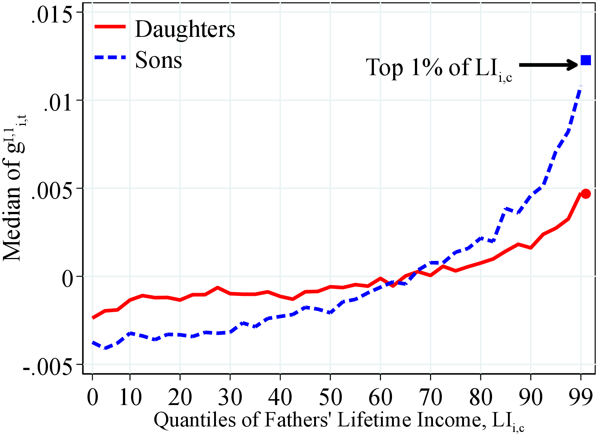
(a) By Lifetime Income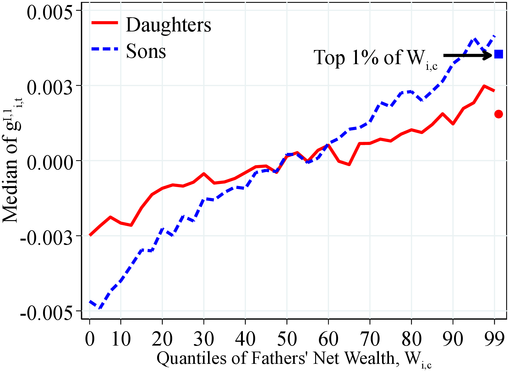
(b) By Net WealthFigure: Figure 12 – Median Log Income Growth by Fathers’ Resources
Notes: Figure 12 shows the median of one-year residual earnings growth for men and women within quantiles of fathers’ lifetime income distribution (Panel A) and fathers’ household net wealth distribution (Panel B) in 40 quantiles. Each line has been normalized to have a mean of 0. The top 2.5% of the distribution is further separated into two groups (97.5th to 99th and 99th percentile and above) for a total of 41 quantiles. The markers identify the children of fathers at the top 1% of the lifetime income and wealth distributions. We show the average across annual moments between 1990 and 2012 as we require that individuals have non-missing one- and five-year changes.
Median Income Growth. Figure 12 shows how children’s median annual income growth varies by family resources measured by fathers’ lifetime income or wealth. We find that lifetime income growth is significantly higher for workers born into richer families. For example, median annual income growth for sons of fathers at the 90th percentile of the lifetime income distribution is almost 1% higher relative to those with parents at the 10th percentile. The corresponding difference among daughters is lower at around 0.5%. This heterogeneity is economically significant, considering that the typical estimates of the standard deviation of heterogeneous income profiles are around 2% for the U.S. (see Guvenen et al. (2021)). The variation over the father’s wealth distribution is qualitatively and quantitatively similar and slightly more pronounced.
The heterogeneity in average income growth arising from parental financial resources is even larger, with around a 2% difference between the children of parents at the 90th percentile and those from the 10th percentile (Figure OA.III.4). Furthermore, children of top earners enjoy an exceptionally steeper average income growth over the life cycle—specifically, 2% higher compared to those from the median-income families. These results indicate an increasingly right-skewed distribution of earnings growth by fathers’ income. We confirm this conjecture when we investigate the skewness of income growth.
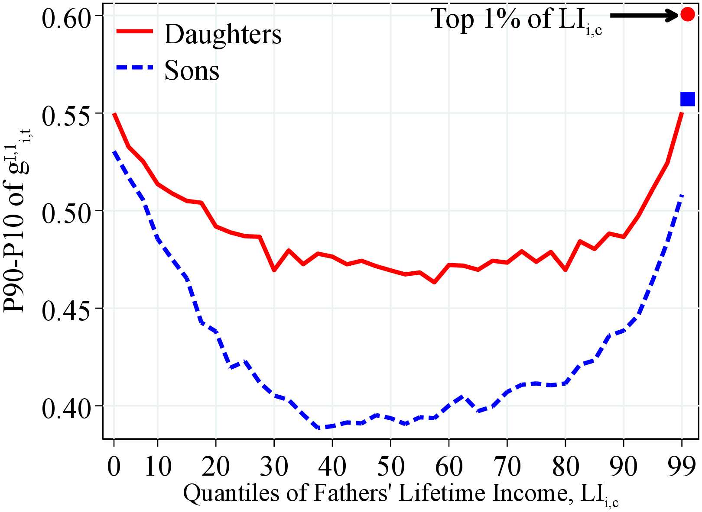
(a) By Lifetime Income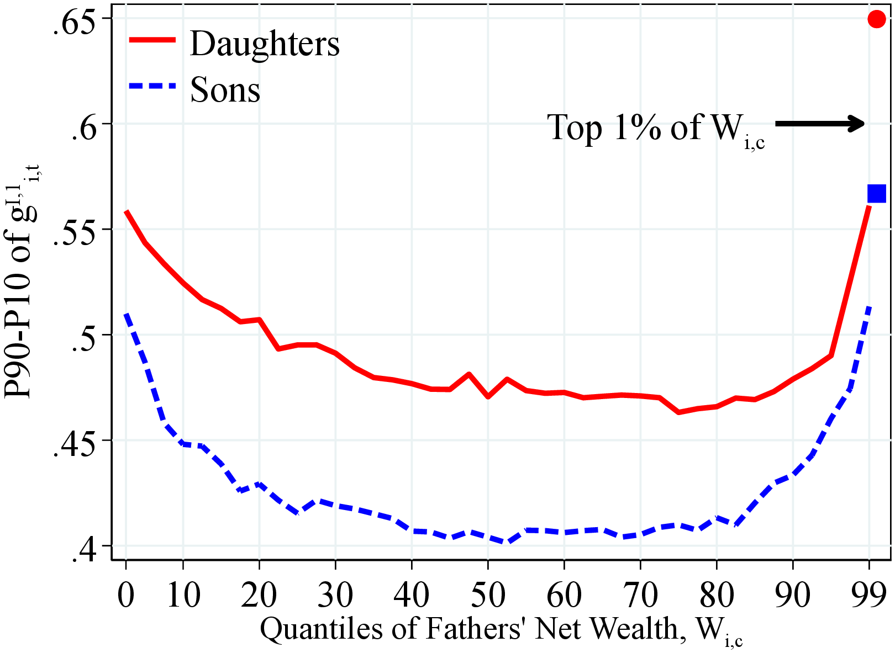
(b) By Net WealthFigure: Figure 13 – Dispersion of Log Earnings Growth by Fathers’ Resources
Notes: Figure 13 shows the standard deviation of one-year residual earnings growth for men and women within quantiles of fathers’ lifetime income distribution (Panel A) and fathers’ household net wealth distribution (Panel B) in 40 quantiles. The top 2.5% of the distribution is further separated into two groups (97.5th to 99th and 99th percentile and above) for a total of 41 quantiles. The markers identify the children of fathers at the top 1% of the lifetime income and wealth distributions. We show the average across annual moments between 1990 and 2012 as we require that individuals have non-missing one- and five-year changes.
Volatility of Income Growth. Figure 13 shows that the volatility of children’s income growth—as measured by the P90-P10 differential—follows a U-shaped pattern by the fathers’ lifetime income (left panel) and wealth (right panel). This pattern is more pronounced for sons than for daughters. For example, the P90-P10 of income changes for sons (daughters) with fathers at the 1st and 99th percentiles of the lifetime income distribution is around 12 (9) log points larger than those with median-income fathers.
Children of more affluent fathers face significantly more volatile incomes. For example, the P90-P10 of income growth for workers of fathers from the top 1% of the lifetime income or wealth distributions is roughly 12 to 18 log points higher compared to those of fathers at the median. This higher income volatility for children with rich fathers, combined with their exceptionally higher median and (especially) average income growth (shown in Figures 12 and OA.III.4), suggests that they can pursue high-risk, high-return careers that children from modest backgrounds cannot.
Recall that we also find a U-shaped pattern in the dispersion of earnings growth over workers’ permanent earnings in Section 3.2.3 (Figure 5). However, the U-shaped pattern here is tilted toward the right over the fathers’ lifetime income and wealth distribution compared to the variation by workers’ own permanent earnings. That is, children of high-income, high-wealth fathers experience the most volatile incomes, whereas the volatility of earnings shocks is the highest for workers with the lowest permanent earnings. These results suggest that the relation between workers’ income volatility and their fathers’ financial resources is not due to the omitted variable of workers’ permanent earnings, which is correlated with fathers’ resources. We investigate this conjecture further in Section 4.4 when we control for a full set of children and father characteristics.
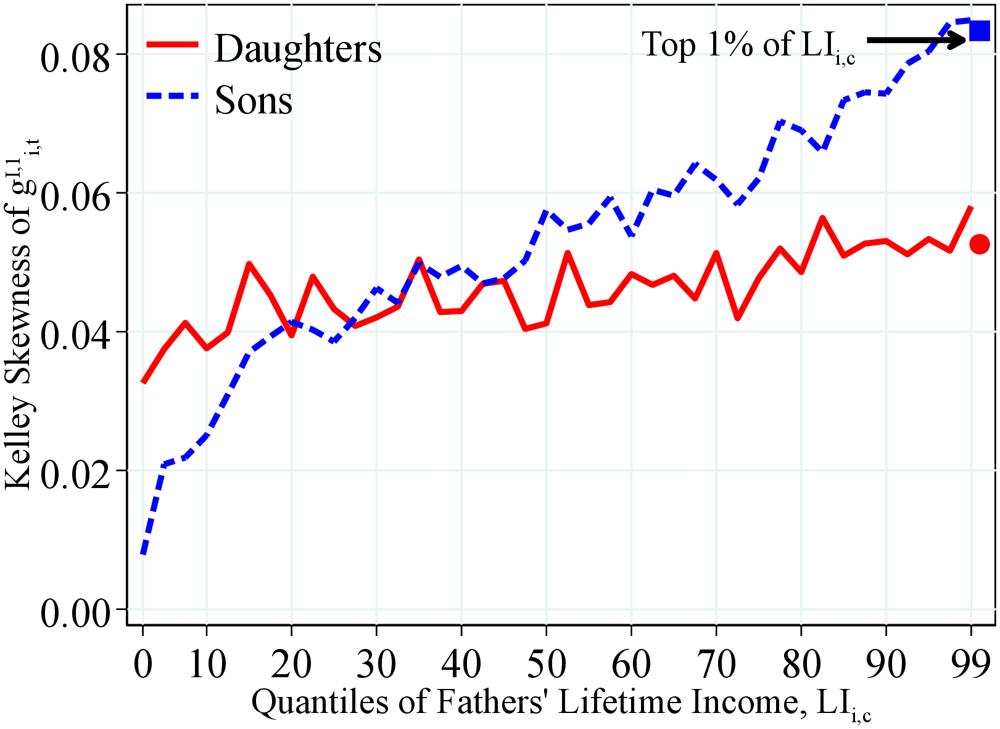
(a) By Lifetime Income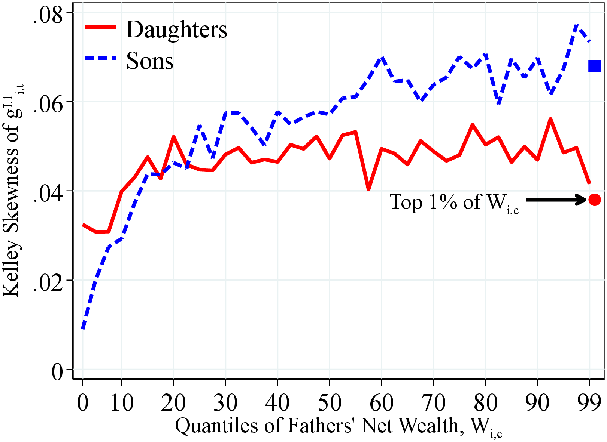
(b) By Net WealthFigure: Figure 14 – Skewness of Log Earnings Growth by Fathers’ Resources
Notes: Figure 14 shows the Kelley skewness of one-year residual earnings growth for men and women within quantiles of fathers’ lifetime income distribution (Panel A) and fathers’ household net wealth distribution (Panel B) in 40 quantiles. The top 2.5% of the distribution is further separated into two groups (97.5th to 99th and 99th percentile and above) for a total of 41 quantiles. The markers identify the children of fathers at the top 1% of the lifetime income and wealth distributions. We show the average across annual moments between 1990 and 2012 as we require that individuals have non-missing one- and five-year changes.
Skewness of Income Growth. We next turn to the variation in skewness of children’s income growth by the fathers’ lifetime income and wealth. Figure 14 shows that the distribution of income growth is right skewed regardless of fathers’ income and wealth. More importantly, we find that the distribution of income growth becomes increasingly more right skewed for both sons and daughters as we move from poorer to richer families.24 This finding suggests that children from more affluent families experience higher upside income potential, lower left-tail risk, or both. Differences between high- and low-resource fathers are substantial and economically significant.
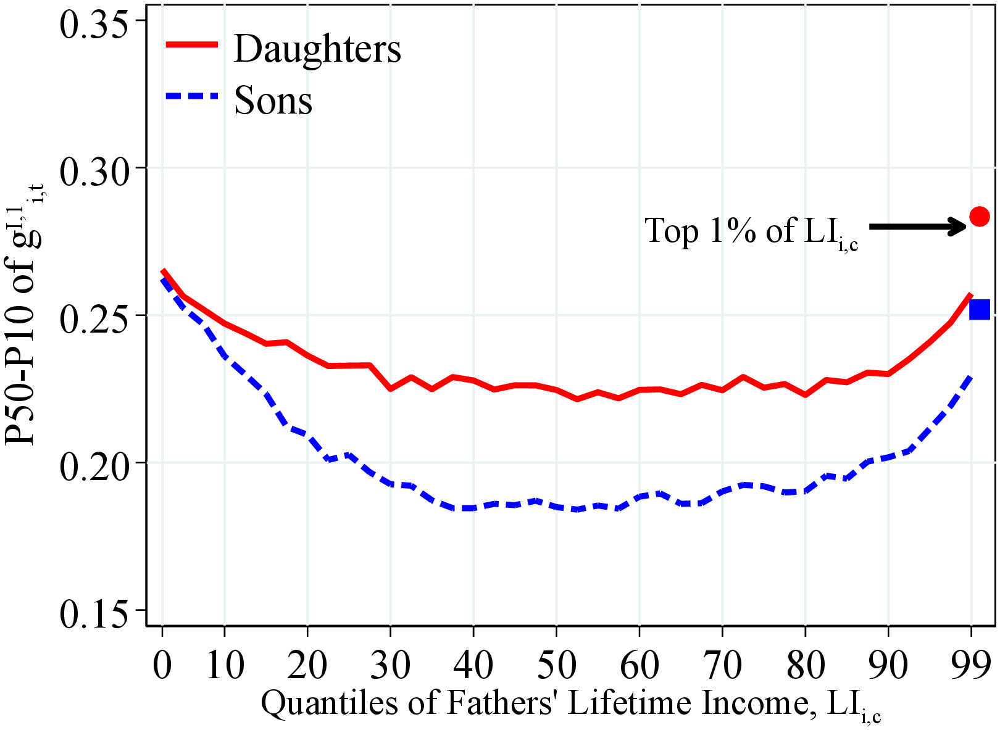
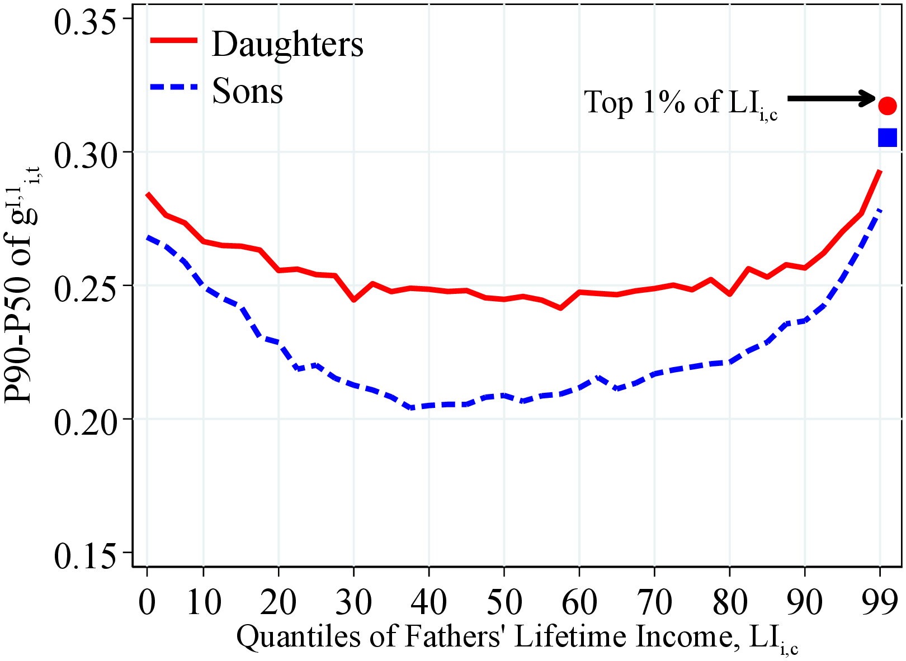
Notes: Figure 15 shows the P50-P10 and P90-P50 of the one-year residual earnings growth for men and women within quantiles of fathers’ lifetime income distribution in 40 quantiles. The top 2.5% of the distribution is further separated into two groups (97.5th to 99th and 99th percentile and above) for a total of 41 quantiles. We show the average across annual moments between 1990 and 2017. Markers show the average for children whose parents were at the top 1% of the corresponding distribution.
An important question is whether skewness becomes more positive over fathers’ resources because of a compression of the lower tail (less risk of large declines) or because of an expansion in the upper tail (more opportunities for large gains). To answer this question, we investigate how the left and right tails of the children’s income growth distribution change between poor and rich parents. In particular, Figures 15 and 16 show the P50-P10 and P90–P50 of children’s income growth. First, up to around the 85th percentile of the fathers’ income and wealth distributions, the decline in P90-P50 is relatively less pronounced than the compression of the lower tail as we move from poorer to richer parents. Therefore, the decline in income volatility in this range reflects somewhat more of a reduction in the left-tail risk of workers. However, beyond the 85th percentile, we see that both tails open up sharply, the upper tail even more so, thereby resulting in both an increase in volatility and an increase in positive skewness.
These findings are consistent with our conjecture that children from affluent families pursue high-risk high-return careers. Additional evidence from the data supports this conjecture as well. For example, we find that fraction of sons (daughters) employed in the public sector (i.e., in more stable, less risky jobs) increases from around 10% (30%) to 20% (40%) from families at the bottom of the distribution to upper-middle-class families, but then declines sharply at the top of the distribution (see Figure OA.III.8).
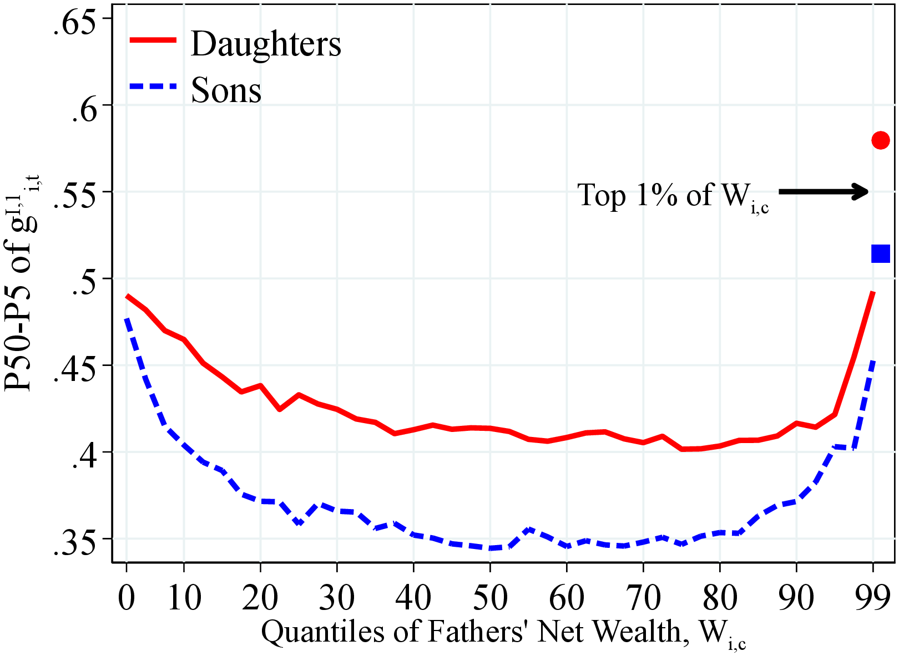
(a) Left-Tail Dispersion of \(g_{it}^{I,1}\)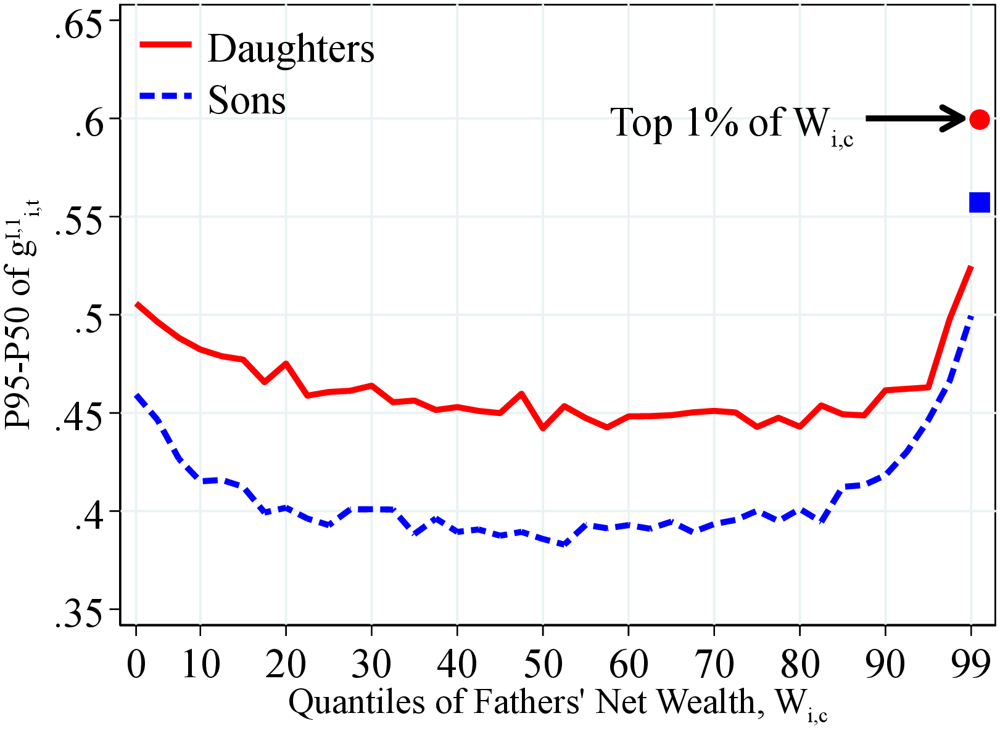
(b) Right-Tail Dispersion of \(g_{it}^{I,1}\)Figure: Figure 16 – Left- and Right-Tail Income Volatility by Fathers’ Wealth
Notes: Figure 16 shows the P90-P50 and P50-P10 of one-year residual earnings growth for men and women within quantiles of fathers’ household net wealth distribution in 40 quantiles. The top 2.5% of the distribution is further separated into two groups (97.5th to 99th and 99th percentile and above) for a total of 41 quantiles. We show the average across annual moments between 1990 and 2017. Markers show the average for children whose parents were at the top 1% of the corresponding distribution.
Kurtosis of Income Growth. Finally, Figure 17 shows the Crow-Siddiqui kurtosis of income growth conditional on fathers’ lifetime income and wealth. We find a U-shaped profile with low kurtosis of earnings growth among sons whose fathers are around the median lifetime income relative to those whose fathers were at the top or bottom of the lifetime income distribution. For daughters, we do not find any significant pattern. Children of the richest fathers face the most leptokurtic distribution of income changes. However, these results change significantly if we use the fourth standardized moment (Figure OA.III.7), which shows a hump-shaped profile with low kurtosis of earnings growth among children with bottom- and top-earning fathers relative to those from middle-income families. This result shows the importance of very large earnings changes in measurement of the higher-order moments.
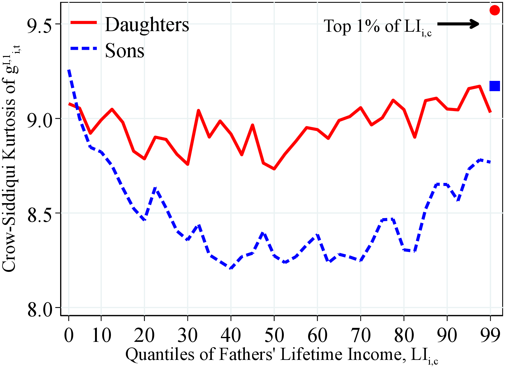
(a) By Father’s Lifetime Income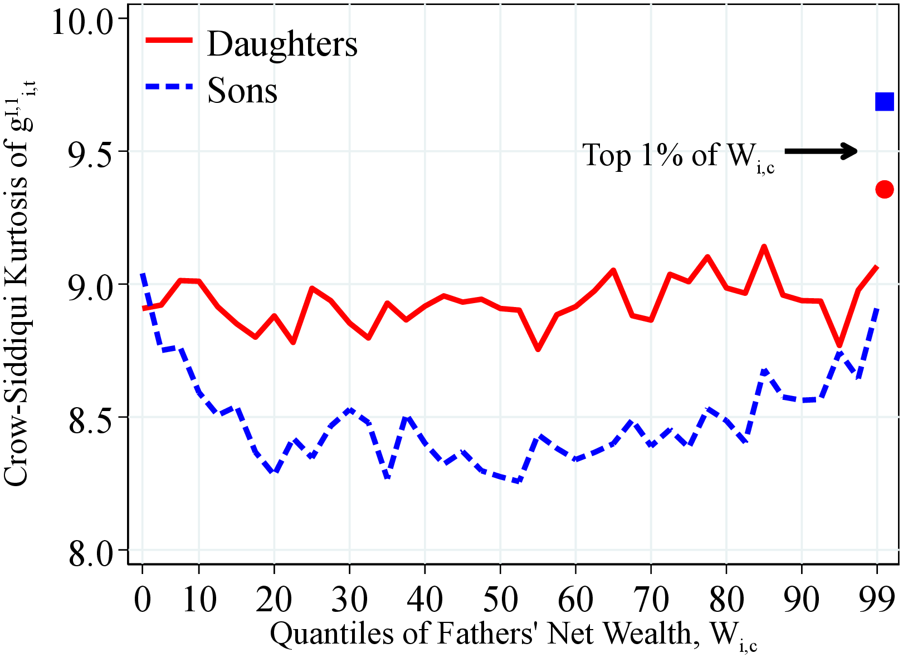
(b) By Father’s Net WealthFigure: Figure 17 – Kurtosis of Log Income Growth by Fathers’ Resources
Notes: Figure 17 shows the excess Crow-Siddiqui kurtosis of the one-year residual earnings growth for men and women within quantiles of fathers’ lifetime income distribution (Panel A) and fathers’ household net wealth distribution (Panel B) in 40 quantiles. The top 2.5% of the distribution is further separated in two groups (97.5th to 99th and 99th percentile and above) for a total of 41 quantiles. We show the average across annual moments between 1990 and 2017. Markers show the average for children whose parents were at the top 1% of the corresponding distribution.
4.3 Fathers’ and Children’s Income Dynamics
Do fathers and children have income dynamics of similar properties (for example, because of similar risk attitudes or similar jobs and occupations)? To investigate this question, we again use a permanent income measure, \(\tilde{P}_{it}=\max \left \{Y_{t}^{min},\frac{1}{3}\sum _{j=0}^{2}Y_{it-j}\right \}\), the average income between periods \(t\) and \(t-2\) winsorized at the minimum income threshold (\(Y_{t}^{min}\)).25 Then, for each individual, we construct a time series of log permanent income growth (\(\Delta \tilde{P}_{it}=\log \tilde{P}_{it}-\log \tilde{P}_{it-1}\)) over their life cycle and compute the first three moments from this series. Given the relatively short length of the individual time series—between 20 and 40 years—we use percentile-based moments (the median, P90-P10, and Kelley skewness) to avoid having outliers drive our results. The results for the standardized moments display similar qualitative patterns (Appendix C.4).
Median Income Growth. Figure 18 shows a binned scatter plot of the median log permanent income growth of fathers and sons (left panel) and fathers and daughters (right panel). We find a marked non-linear relation between fathers’ and children’s lifetime income growth. Fathers’ and children’s income growth does not seem to be strongly correlated for around 10%-15% of our sample when fathers have negative or very steep life-cycle income growth. In the rest of the sample, however, the children of fathers that experienced steeper income growth during their lifetime are more likely to experience high income growth. This correlation is also economically significant: An increase in a father’s median income growth from 0 to 5 log points results in an increase of roughly 1 log point in the son’s median income growth over the life cycle. For daughters, this number is slightly lower (around 0.8 log points) but still significant. The overall intergenerational elasticity of life-cycle income growth is 0.14 for men and 0.09 for women.26
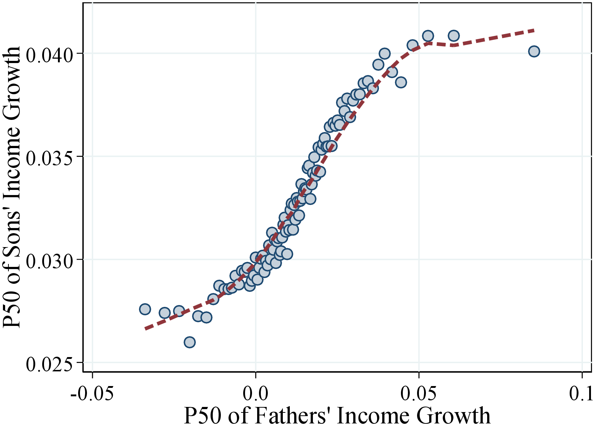
(a) Sons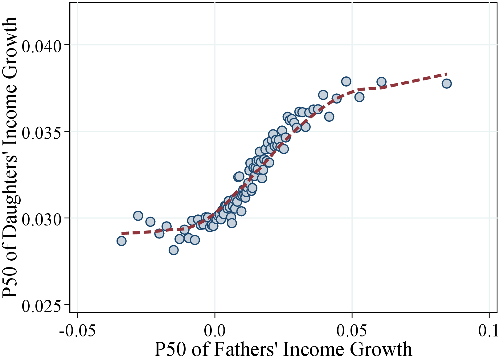
(b) DaughtersFigure: Figure 18 – Median Income Growth of Fathers and Children
Notes: The scatter plot is based on a sample of 494,514 father-son pairs (left plot) and 471,229 father-daughter pairs (right plot). Each sample is divided into 100 bins. The dashed lines are calculated using a lowess smoothing regression.
Income Growth Volatility. We now investigate whether the children of fathers with more volatile incomes also have riskier income streams. Figure 19 shows a binned scatter plot of the P90-P10 of fathers’ and children’s permanent income growth. We find a strong and economically significant correlation between fathers’ and children’s volatility of income. For example, when the father’s dispersion of income changes increases from 10 to 50 log points, where the bulk of the sample is, the son’s (daughter’s) P90-P10 of income growth increases roughly from 35 to 45 (45 to 55) log points. For more volatile incomes of fathers, the association becomes flatter, though still significant: An increase in the P90-P10 of fathers’ income from 50 to 150 log points is associated with an increase in children’s income volatility of roughly 10 log points. Together, these findings imply an elasticity between fathers’ and children’s income growth dispersion of 0.13 for sons and 0.11 for daughters.
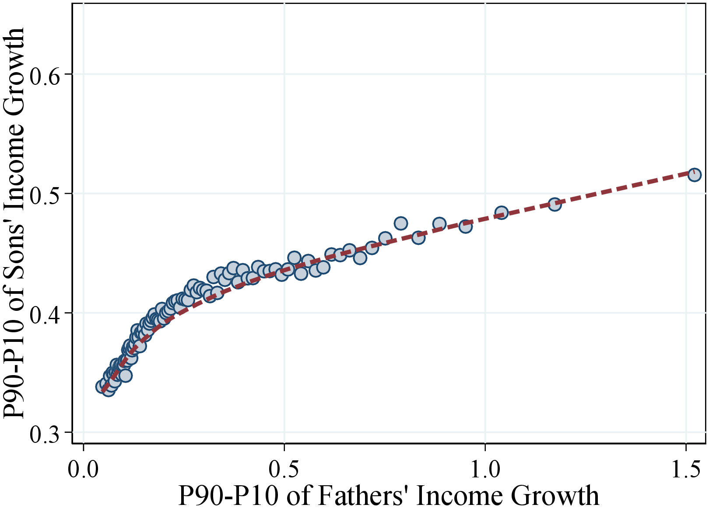
(a) Sons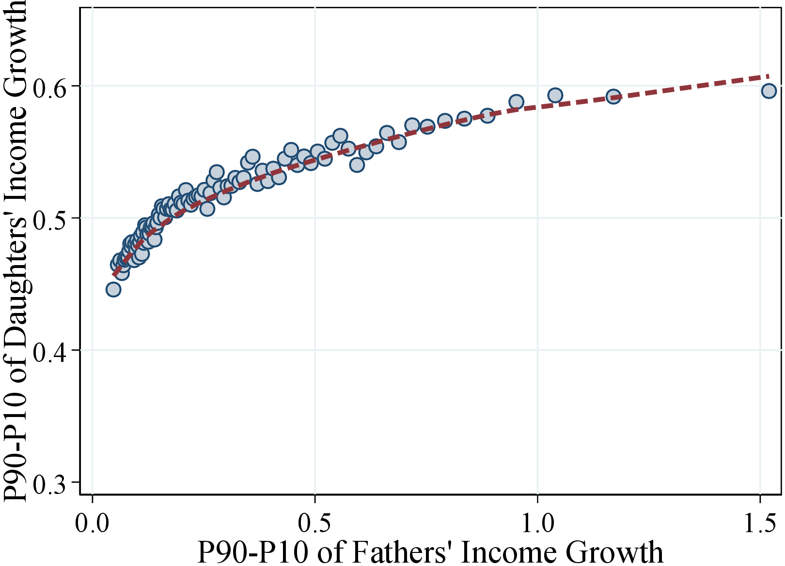
(b) DaughtersFigure: Figure 19 – Dispersion of Income Growth of Fathers and Children
Notes: This plot is based on a sample of 494,514 father-son pairs (left plot) and 471,229 father-daughter pairs (right plot). Each sample is divided into 100 bins. The dashed lines are calculated using a lowess smoothing regression.
Skewness of Income Growth. Finally, we look at the relation between fathers’ and children’s skewness of income growth. Similar to the first two moments, Figure 20 shows a positive and strong correlation for Kelley skewness of income growth. Quantitatively, we find that an increase in fathers’ Kelley skewness from -0.25 to 0.25—where most of the distribution is found—is associated with an average increase of 0.04 (0.025) in the skewness of sons’ (daughters’) income growth.27
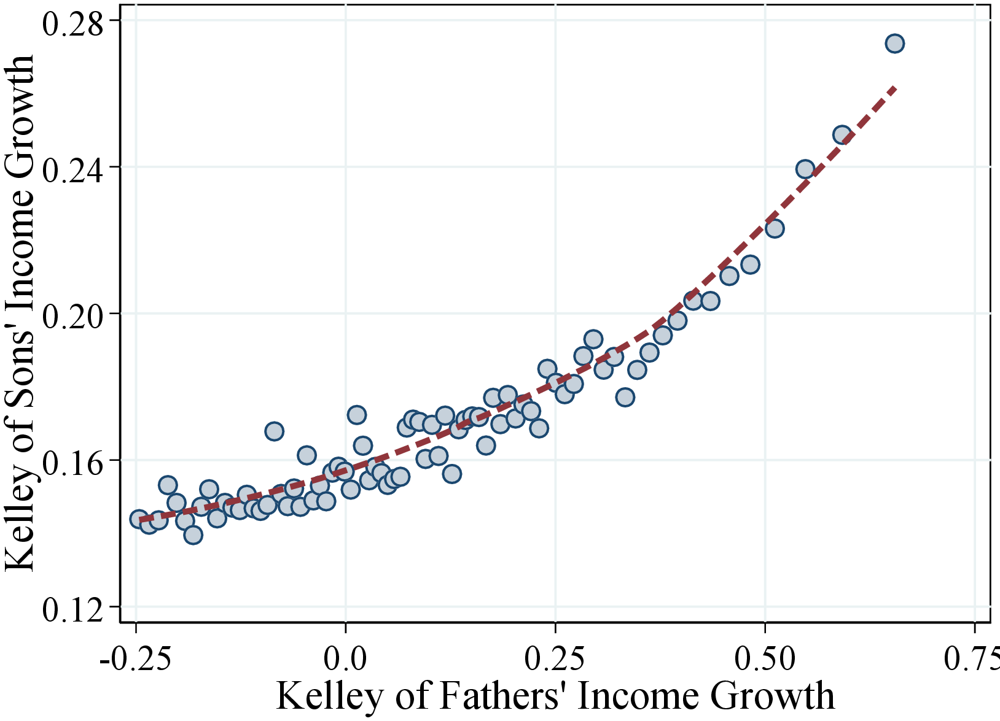
(a) Sons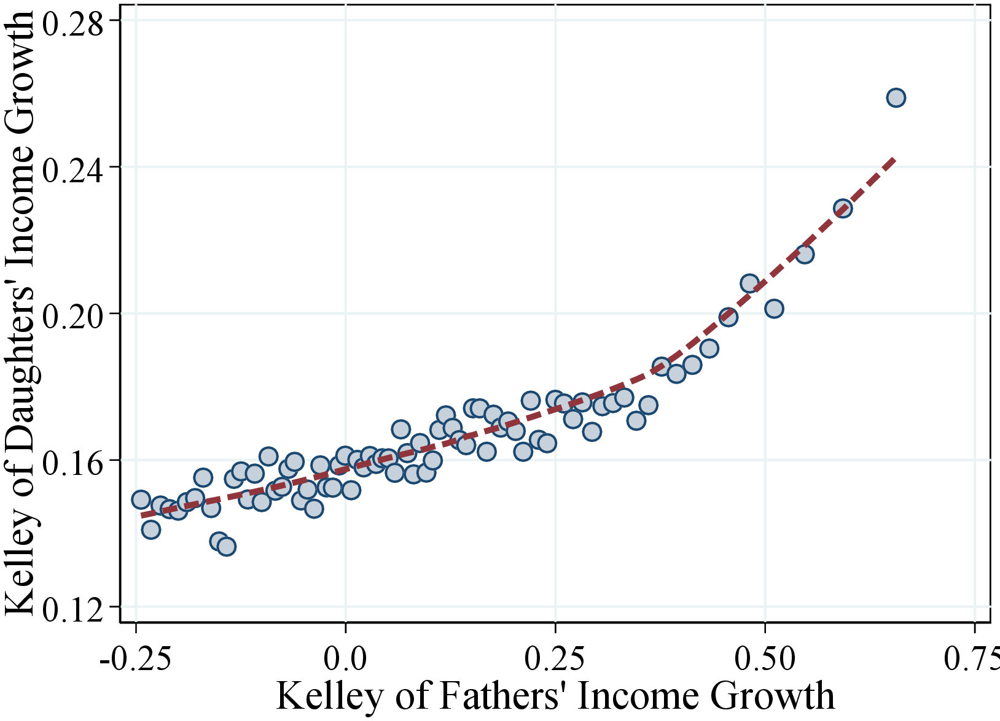
(b) DaughtersFigure: Figure 20 – Skewness of Income Growth of Fathers and Children
Notes: This plot is based on a sample of 494,514 father-son pairs (left plot) and 471,229 father-daughter pairs (right plot). Each sample is divided into 100 bins. The dashed lines are calculated using a lowess smoothing regression.
Occupational and Educational Intergenerational Mobility. One possible explanation for the findings in this subsection is that fathers and children have similar jobs and occupations, and therefore face similar income dynamics (see also Bello and Morchio (2017) and Boar and Lashkari (2021)). Despite the lack of information on occupations in our dataset, we know workers’ education at a detailed level. We investigate the intergenerational persistence in education using 47 categories of degrees, which range from primary education to post-graduate study in law (see Appendix C.4 for a full list).
Figure OA.III.21 in Appendix C.4 shows the intergenerational transition matrix for a select group of education categories (the full matrix is available at authors’ websites). Since the Norwegian workforce has become more educated and its educational composition has changed over time, we normalize these probabilities with the corresponding population averages among children. For example, 9.7% of sons of dentists also studied dentistry, but only 0.4% of all sons are dentists. Then the value for the intergenerational persistence of dentists in this matrix is \(\frac{9.7\%}{0.4\%}=22.5\), which implies that sons of dentists are 22.5 times more likely to be dentists relative to the population average.
All of the values on the diagonal of this matrix is significantly greater than 1, with an average of 6 for sons and 4.4 for daughters. For brevity, Table II shows this statistic for the five most and least persistent education categories. According to this measure, dentists, lawyers, and doctors display the strongest intergenerational persistence along with nurses and those with a higher degree in the social sciences (which includes economists). At the other extreme, we see substantial upward intergenerational socioeconomic mobility for children of relatively low-educated fathers. For example, fathers with only a primary education are among the least likely group to have children with a similar education (after already accounting for changes in educational composition across cohorts).
Strong intergenerational persistence in education supports our conjecture that fathers and children have similar occupations, thereby exhibiting correlated income risk. In the next section, we further investigate the determinants of the transmission of income risk.
| Least Persistent | Most Persistent | |||||||||
| Sons | ||||||||||
| Title | Low Sec. | Prim. | Tech | Sec ad | Voc. | Nurse | Soc. Sci | MD | Law | Dent. |
| Persistence | 1.1 | 1.3 | 1.5 | 1.6 | 1.7 | 8.2 | 10.3 | 19.4 | 21.2 | 22.5 |
| Pop. Share | 1.1% | 26.5% | 14.7% | 4.1% | 3.8% | 0.6% | 0.9% | 0.7% | 1.0% | 0.4% |
| Daughters | ||||||||||
| Title | Low Sec. | Sec adm. | Voc. | Prim | Up Sec. | Dent. | Soc. Sci | MS Eng. | MD | Law |
| Persistence | 1.2 | 1.2 | 1.2 | 1.3 | 1.4 | 8.5 | 8.9 | 9.7 | 14.5 | 16.1 |
| Pop. Share | 0.4% | 9.3% | 1.8% | 26.3% | 10.1% | 1.1% | 1.3% | 0.7% | 0.8% | 1.0% |
Notes: Table II shows the intergenerational persistence of educational categories between fathers and children. Persistence is calculated as the ratio between the proportion of children with a particular education whose fathers also have the same education normalized by the population share of that educational category (Pop. Share). This table shows the least and most persistent among 47 available categories. A full set of educational categories is available in Appendix C.4.
4.4 Determinants of the Transmission of Income Risk
The results presented in this section indicate that children’s income dynamics are strongly connected to their fathers through the fathers’ economic resources and nature of income dynamics. However, there are two main potential concerns with our descriptive analysis. First, simple bivariate correlations cannot quantify the relative importance of different factors (i.e., fathers’ lifetime income, net wealth, and characteristics of fathers’ income growth) on children’s income dynamics as these factors are also correlated with each other. Second, some of the strong relations documented above may simply be spurious as a result of omitted variables. For example, as we have shown in Section 3.2.3, permanent incomes are an important predictor of workers’ income risk, and fathers’ and children’s lifetime incomes are strongly correlated (Figure 10).
To address these concerns and examine the importance of different factors for workers’ income dynamics, we run a series of regressions of the form
\[ \begin{aligned} x_{i}^{c} & = & \beta _{0}+\beta _{1}x_{i}^{f}+X_{i}\Gamma +\varepsilon _{i}, \end{aligned} \]
where \(x_{i}^{c}\) is a moment from child \(i\)’s permanent income growth stream over the life cycle (i.e., median, P90-P10, and Kelley skewness) and \(x_{i}^{f}\) is the same moment but for the child’s father. The matrix \(X_{i}\) contains a set of controls for child \(i\) that includes the log of the father’s lifetime income, \(LI_{i}^{f}\), and the log of the father’s wealth, \(W_{i}^{f}\), the log of the child’s lifetime income, \(LI_{i}^{c}\). Therefore, in these regressions we have one observation for each father-child pair. The dependent variable for one such pair is computed using all permanent income observations of the child, similar to our analysis in Section 4.3.
Table III shows estimation results for equation (2) for different moments of the income growth distribution for sons and daughters. We also report the dispersion of the independent variables, measured as the standard deviation and the P90-P10 differential in columns (1) and (2). In all cases, we find that all four regressors are statistically significant at the 1% level. These results are robust to considering centralized moments instead of percentile-based measures (see Table OA.III.2) or adding quadratic terms on lifetime income and wealth (see Table OA.III.4).
| (1) | (2) | (3) | (4) | (5) | (6) | (7) | (8) | |
| \(\sigma\) | \(\text{P90-10}\) | \(P50_{i}^{c}\) | \(\text{P90-P10}_{i}^{c}\) | \(\mathcal{S_{K}}_{i}^{c}\) | ||||
| Sons | Daughters | Sons | Daughters | Sons | Daughters | |||
| \(P50_{i}^{f}\) | 0.03 | 0.06 | 0.090 | 0.072 | ||||
| (0.00) | (0.00) | |||||||
| \(\text{P90-10}_{i}^{f}\) | 0.33 | 0.71 | 0.174 | 0.120 | ||||
| (0.00) | (0.00) | |||||||
| \(\mathcal{S_{K}}_{i}^{f}\) | 0.33 | 0.89 | 0.076 | 0.061 | ||||
| (0.00) | (0.00) | |||||||
| \(\log LI_{i}^{c}\) | 0.50 | 1.10 | 0.020 | 0.011 | -0.297 | -0.375 | 0.106 | 0.105 |
| (0.00) | (0.00) | (0.00) | (0.00) | (0.00) | (0.00) | |||
| \(\log LI_{i}^{f}\) | 0.41 | 0.93 | 0.003 | 0.001 | 0.126 | 0.097 | 0.047 | 0.012 |
| (0.00) | (0.00) | (0.00) | (0.00) | (0.00) | (0.00) | |||
| \(\log W_{i}^{f}\) | 1.62 | 3.80 | 0.003 | 0.001 | 0.004 | 0.001 | 0.009 | 0.002 |
| (0.00) | (0.00) | (0.00) | (0.00) | (0.00) | (0.00) | |||
| \(R^{2}\) | 0.126 | 0.044 | 0.189 | 0.266 | 0.045 | 0.033 | ||
| N (000s) | 465 | 443 | 465 | 443 | 465 | 443 | 465 | 443 |
Notes: Columns (1) and (2) show the standard deviation and P90-P10 of the cross-sectional distribution of different moments of the fathers’ and sons’ lifetime income and growth, fathers’ wealth, and fathers’ income growth. For children’s lifetime income, we report the moments for men. The corresponding moments for women are \(\sigma ^{c}=0.44\) and \(P90-P10^{c}=0.99\). Columns (3) to (8) show the coefficients of a series of cross-sectional regressions of worker-level measures of median lifetime growth, P90-P10, and Kelley skewness (\(\mathcal{S_{K}}\)), with the superscript \(c\) denoting children and \(f\) denoting fathers. Income growth is measured as the one-year log change of a measure of permanent income, calculated as the average income of an individual between years \(t\) and \(t-2\). In the sample, we consider fathers and children with more than 20 years of data. The lifetime income of fathers and children is calculated as in equation (1). The measure of lifetime wealth is calculated as the fathers’ average wealth between ages 45 and 55 (or the nearest age to this age range for individuals that are observed when they are too young (below 45) or too old (above 55).
Median Income Growth. Columns (3) and (4) of Table III show the results for the median income growth over the life cycle. Two points are worth noticing. First, similar to the results presented in Figure 18, we find that fathers’ and children’s median income growth is positively correlated for both sons and daughters, with an intergenerational elasticity of median income growth of 0.09 and 0.07, respectively.28 This means that sons (daughters) of fathers at the 90th percentile of the median income growth distribution experience 0.54% (0.42%) higher annual income growth relative to the children of fathers at the 10th percentile, since the 90-10 differential of median income growth among fathers of sons is 0.06. Second, consistent with earlier evidence (Figure 12), the coefficients of fathers’ lifetime income and wealth are positive as children of more affluent fathers tend to experience higher income growth over their lifetime. For instance, the median growth for sons (daughters) of fathers at the 90th percentile of the lifetime income distribution is approximately 0.3% (0.1%) higher compared to sons (daughters) of fathers at the 10th percentile. These magnitudes are economically quite substantial, with 0.3% steeper annual income growth, implying a 13% higher income over a 40-year working life.
Volatility of Income Growth. We then turn to the income growth dispersion (columns (5) and (6) of Table III). We find that the P90-P10 of income growth for sons (daughters) of fathers at the 90th percentile of the income volatility distribution is 12 (8) log points higher compared to those with fathers at the 10th percentile. Quantifying the importance of family resources, we find an elasticity of 0.13 with respect to fathers’ lifetime income, which implies that sons of fathers at the 90th percentile of the lifetime income distribution face an income volatility that is 12 log points higher than the workers with fathers at the 10th percentile. For daughters, the corresponding figure is about 9 log points. These differences are quite significant, considering that the average P90-P10 of income growth among sons (daughters) is roughly 0.40 (0.51). Hence, our regression results suggest that children of more affluent families experience a more volatile income stream during their lifetime. However, recall that we find a U-shaped pattern for the volatility of income over fathers’ economic resources in Section 4.2; therefore, our linear regression results are probably a lower bound for the true effect.29
Skewness of Income Growth. Finally, columns (7) and (8) in Table III present the regression results for the skewness of income growth. We find that a one standard deviation of increase in the father’s skewness of income growth implies a 2.5 pp. (2.0 pp.) increase in the Kelley skewness of the son’s (daughter’s) income growth. This magnitude is relatively small considering that the average skewness in the sample is around 0.15 for both sons and daughters. The elasticity of skewness with respect to the father’s income is also statistically significant but of a smaller magnitude.
Our empirical findings in this section can be explained, for instance, by fathers and children sharing similar careers, occupations, education, and attitudes toward risk, or children making different education and career choices depending on their parents’ financial resources. We have previously shown that there is a strong correlation between the education of fathers and children (Table II) and that children from upper middle-income families are more likely to choose public sector careers (Figure OA.III.8). To further investigate the role of education and the occupational choices of children in the intergenerational transmission of income dynamics, we estimate a model that also includes dummies for children’s education using 47 categories and an indicator variable for whether child \(i\) spent more than half of his or her career in the public sector. We find that including these additional controls in our regressions significantly reduces the coefficients of variables for fathers’ lifetime income and wealth but much less so for fathers’ features of income risk. This result shows the important roles that education and public sector employment play in workers’ income dynamics (see Table OA.III.3). More importantly, it reveals that education is a key mechanism through which fathers’ financial resources matter for children’s life-cycle earnings dynamics.
5 Conclusions
Using administrative data from Norway between 1967 and 2017, we have documented several stylized facts about individual income dynamics with a special focus on top earners and non-Gaussian features. Our key findings can be summarized as follows. First, although Norway is a country of low income inequality and low volatility relative to other developed nations, it has experienced a substantial increase in top earnings inequality since 1993. Second, in contrast to most other developed economies, inequality declines sharply over the life cycle below the 90th percentile. However, inequality in the top 10% increases over the life cycle, suggesting that different economic forces drive inequality in different parts of the earnings distribution. Third, workers differ significantly in their income risk, particularly in the second to fourth moments of income changes.
We then study whether there is further heterogeneity in income dynamics that stems from differences in parental backgrounds. We find that workers from richer families experience steeper but more volatile income growth over the life cycle. The higher volatility is mainly driven by a longer right tail (arising from more opportunities for large gains). These findings suggest that children of more affluent families can pursue high-risk, high-return careers, possibly because of the availability of parental insurance.30
Furthermore, we find strong evidence of the transmission of income dynamics across generations. In particular, children of fathers with more volatile incomes or with higher tail risk also have riskier income streams, suggesting that fathers and children share similar risk attitudes, that they work in similar jobs and sectors with similar risk profiles, or both of these. Indeed, there is a strong intergenerational persistence in fathers’ and children’s educations, specifically, at high levels of education categories such as dentists, lawyers, and doctors. For example, daughters of lawyers are more than 15 times more likely to go to law school relative to the population average. Such persistence can arise because of the professional networks of families that allow children to follow their parents’ steps more easily (see Bello and Morchio (2019)).
Finally, we confirm that fathers’ significant role in workers’ income dynamics is not simply spurious because of omitted variables such as workers’ own permanent income or other characteristics. Taken together, our results highlight fathers’ significant role in children’s income dynamics beyond the strong intergenerational transmission of income levels. Quantifying the importance of different economic forces in this intergenerational transmission is important for public policy and further research is needed.
Appendix
References
6 After-Transfer Income Between 1967-2017
| Panel A: Sample Statistics | ||||||||||
| Obs. (1000s) | Mean Earnings | Age Shares % | Education Shares % | |||||||
| Year | Men | Women | Men | Women | \([25,35]\) | \([36,45]\) | \([46,55]\) | \(\lt HS\) | \(HS\) | \(CD+\) |
| 1975 | 1,122 | 1,311 | 10,649 | 29,047 | 46.6 | 24.6 | 28.9 | 62.9 | 19.2 | 17.9 |
| 1985 | 1,264 | 1,579 | 12,155 | 21,334 | 45.3 | 32.4 | 22.3 | 49.5 | 26.4 | 24.1 |
| 1995 | 1,470 | 1,878 | 23,202 | 32,259 | 42.0 | 29.5 | 28.5 | 36.6 | 33.4 | 30.0 |
| 2005 | 1,609 | 2,039 | 32,543 | 41,649 | 37.2 | 32.8 | 30.0 | 27.1 | 36.7 | 36.2 |
| 2015 | 1,577 | 1,920 | 37,624 | 45,626 | 37.1 | 31.7 | 31.2 | 24.9 | 36.9 | 38.2 |
Notes: Table A.1 shows summary statistics for the sample of individual covering the 1967 to 2017 period. All nominal values are deflated to their 2018 real values using the Consumer Price Index in Norway and converted to US dollars using the average exchange rate in 2018. In the right columns of Panel A, we separate workers into three groups. \(<HS\) are workers with less than a high school diploma, \(HS\) are workers with a high school degree, and \(CD+\) are workers with a college degree or more advanced degrees.
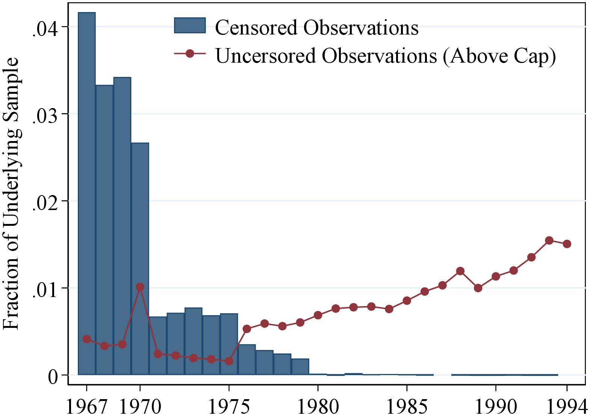
Notes: Figure A.1 shows the share of observations subject to top coding (blue bars). The top coding was not applied uniformly across years and several observations that should have been top coded remained uncensored. The dotted line shows the share of those observations in the sample.
6.1 Trends in After-Transfers Income Inequality
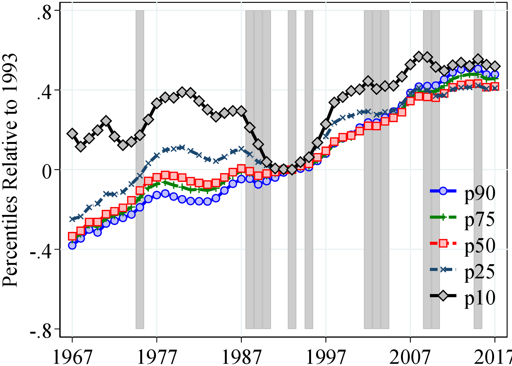
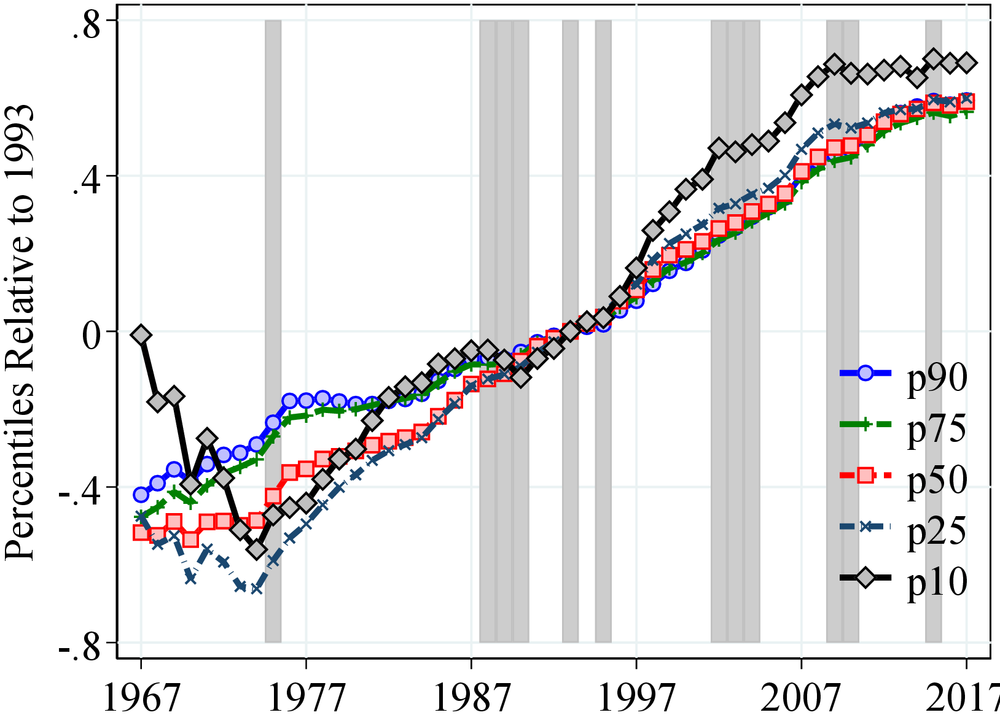
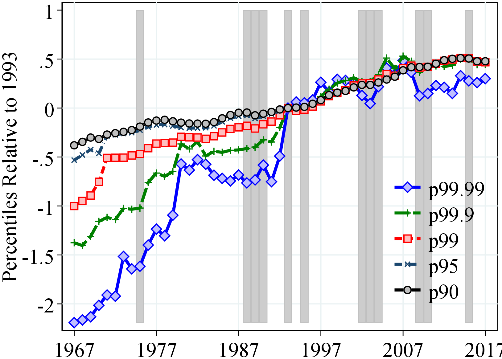
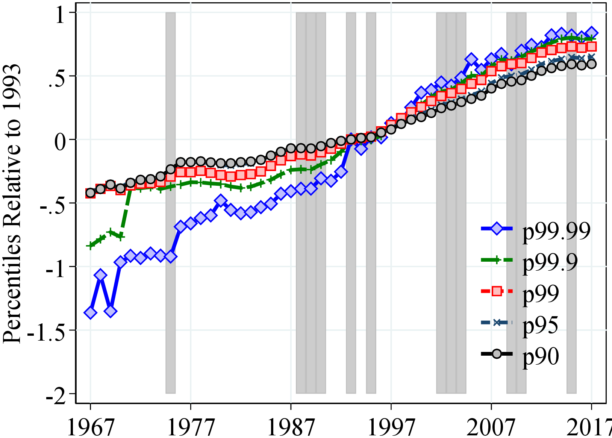
Notes: Figure A.2 shows the evolution of the following variables: (a) men: P10, P25, P50, P75, P90 (b) women: P10, P25, P50, P75, P90, (c) men: P90, P95, P99, P99.9, P99.99, (d) women: P90, P95, P99, P99.9, P99.99. All percentiles are normalized to 0 in 1993. Shaded areas represent recession years, defined as years with an unemployment growth rate of 0.4 pp. or more and an output gap of -0.5 or less. See Section 2 for sample selection and definitions.
Notes: Figure A.3 plots the following variables against time: (a) men: P90-P10 and 2.56SD of log income (b) women: P90-P10 and 2.56SD of log income, (c) men: P90-P50 and P50-P10, (d) Women: P90-P50 and P50-P10. Shaded areas are recessions. The value of 2.56*SD corresponds to the differential between the 10th and the 90th percentiles in a Normal distribution. Shaded areas represent recession years.
Notes: Figure A.4 uses the log earnings from the CS sample and shows: (a) men: P90-P10 over the life cycle for selected cohorts and (b) women: P90-P10 over the life cycle for selected cohorts. A cohort is defined by the year in which the cohort turns 25. Dashed lines connect individuals of the same age. The plot consider cohorts born between 1969 and 1986 and turn 25 from 1993 to 2010, respectively. See Section 2 for sample selection and definitions.
6.2 Distribution of After-Transfer Income Growth
Notes: Figure A.5 shows the 90th-to-50th and 50th-to-10th percentiles differential of earnings growth for men and women. The shaded areas represent recession years, defined as years with: i) growth in the unemployment rate of 0.4 pp. or more and ii) an output gap of -0.5 or less. See Section 2 for sample selection and definitions.
Notes: Figure A.6 shows the Kelley skewness and excess Crow-Siddiqui kurtosis of earnings growth for men and women. The shaded areas represent recession years, defined as years with: i) growth in the unemployment rate of 0.4 pp. or more, and ii) an output gap of -0.5 or less. The excess Crow-Siddiqui kurtosis is defined as the annual Crow-Siddiqui measure minus 2.91, which is the corresponding value of Crow-Siddiqui for a Normal distribution. See Section 2 for sample selection and definitions.
| (1) | (2) | (3) | (4) | (5) | (6) | |
| Dispersion | Skewness | Kurtosis | ||||
| P90-P10 | Std. Dev. | Kelley | Third. | Crow-Siddiqui | Kurtosis | |
| Men | ||||||
| \(\Delta \text{GDP}_{t}\) | -0.01 | -0.01** | 0.03** | 0.09 | -0.16 | 0.06 |
| (0.00) | (0.01) | (0.01) | (0.10) | (0.11) | (0.32) | |
| Women | ||||||
| \(\Delta \text{GDP}_{t}\) | -0.04 | -0.02** | 0.02 | -0.01 | 0.27 | 0.21** |
| (0.01) | (0.01) | (0.01) | (0.03) | (0.09) | (0.08) | |
| Men | ||||||
| \(\Delta \text{Unemp}_{t}\) | 0.01** | 0.01* | -0.04 | -0.03 | 0.22 | -0.29 |
| (0.00) | (0.00) | (0.01) | (0.05) | (0.16) | (0.21) | |
| Women | ||||||
| \(\Delta \text{Unemp}_{t}\) | 0.02** | 0.00 | -0.02* | 0.01 | -0.12 | -0.18** |
| (0.01) | (0.00) | (0.01) | (0.03) | (0.12) | (0.07) | |
| N | 24 | 24 | 24 | 24 | 24 | 24 |
Notes: Table A.2 shows the coefficients from regressions of different moments of log earnings growth on either GDP or unemployment growth for men and women. The growth rate of unemployment (real GDP) is calculated as the (log) difference of the average unemployment rate (real GDP) between years \(t\) and \(t+1\). Notice each regression is run separately. The unemployment rate is obtained from Statistics Norway and real GDP is obtained from the Federal Reserve Economic Data, FRED. Newey-West standard errors are in parentheses, estimated using one lag. In each regression, we standardize the right-hand-side variable so that the coefficient can be directly interpreted as the impact of a one-standard-deviation change on the dependent variable. * \(p<0.1\), ** \(p<0.05\), \(p<0.01\).
(a) Men (b) Women
Figure: Figure A.7 – After-Transfer Income Growth Dispersion by PE and Age
Notes: Figure A.7 shows the P90-P10 of the log growth rate of residual earnings for men and women within quantiles of the permanent income distribution, \(P_{it-1}\). In each plot, the solid markers represent P90-P10 for those workers at the top 0.1% of the permanent income distribution for different age groups (diamond for 25 to 34 years old, square for 35 to 44 years old, and circle for 45 to 55 years old). See Section 2 for sample selection and definitions.
(a) Men (b) Women
Figure: Figure A.8 – Skewness of After-Transfer Income Growth by PE and Age
Notes: Figure A.8 shows the Kelley skewness of the log growth rate of residual earnings for men and women within quantiles of the permanent income distribution, \(P_{it-1}\). Kelley skewness is defined as \(\mathcal{S_{K}}=\left (\text{(P90-P50)}-\text{(P50-P10)}\right)/\left (\text{P90-P10}\right)\). In each plot, the solid markers represent the Kelley skewness for those workers at the top 0.1% of the earnings distribution for different age groups (diamond for 25 to 34 years old, square for 35 to 44 years old, and circle for 45 to 55 years old).
(a) Men (b) Women
Figure: Figure A.9 – Kurtosis of After-Transfer Income Growth by PE and Age
Notes: Figure A.9 shows the excess Crow-Siddiqui kurtosis of the log growth rate of residual earnings for men and women with quantiles of the permanent income distribution, \(P_{it-1}\). Excess Crow-Siddiqui kurtosis is defined as \(\mathcal{C_{K}}=\left (\text{P97.5-P2.5}\right)/\left (\text{P75-P25}\right)-2.91\) where \(2.91\) is the value of the Crow-Siddiqui measure for a Normal distribution. In each plot, the solid markers represent the corresponding measure of kurtosis for those workers at the top 0.1% of the earnings distribution for different age groups (diamond for 25 to 34 years old, square for 35 to 44 years old, and circle for 45 to 55 years old).
7 Additional Figures
7.1 Moments of the Earnings Distribution
Notes: Figure B.1 plots the following variables against time: (a) men: P90-P10 and 2.56SD of log income (b) women: P90-P10 and 2.56SD of log income, (c) men: P90-P50 and P50-P10, (d) Women: P90-P50 and P50-P10. Shaded areas are recessions. The value of 2.56*SD corresponds to the differential between the 10th and the 90th percentiles in a Normal distribution. Shaded areas represent recession years, defined as years with an unemployment growth rate of 0.4 pp. or more, and an output gap of -0.5 or less. Results based on the CS sample. See Section 2 for sample selection and definitions.
Notes: Figure B.2 shows the share of income accrued to five income quintiles and top income groups for men and women normalized to 0 in 1993. The shaded areas represent recession years. See Section 2 for sample selection and definitions.
Notes: Figure B.4 shows the life cycle inequality within cohorts. Lines with markers show inequality within a cohort. The dashed line shows inequality within an age group across different cohorts. See Section 2 for sample selection and definitions.
7.2 Figures for the Combined Sample (Men and Women)
![(d) Right- and Left-Tail Dispersion Figure B.5 shows the evolution of the following variables: (a) P10, P25, P50, P75, P90 (b) P90, P95, P99, P99.9, P99.99, (c) P90-P10 and 2.56*SD of log income, (d) P90-P50 and P50-P10. Percentiles in (a) and (b) are normalized to 0 in 1993. Shaded areas represent recession years as defined as years with unemployment rate growth 0.4 pp. or more and an output gap of -0.5 or less. In all figures we consider a joint sample of men and women. See Section 2 for sample selection and definitions.](HOS_REV3_SS_v8_NOEXTRAFIGS_assets/fig2B_all_logearn-7f14c4882d-.png)
7.3 Figures for Residual Earnings
![(d) Right- and Left-Tail Dispersion Figure B.6 shows the evolution of the following variables: (a) P10, P25, P50, P75, P90 (b) P90, P95, P99, P99.9, P99.99, (c) P90-P10 and 2.56*SD of log income, (d) P90-P50 and P50-P10. Percentiles in (a) and (b) are normalized to 0 in 1993. Shaded areas represent recession years as defined as years with unemployment rate growth 0.4 pp. or more and an output gap of -0.5 or less. In all figures we consider a joint sample of men and women. We residualize log-income from age fixed effects by year and gender. See Section 2 for sample selection and definitions.](HOS_REV3_SS_v8_NOEXTRAFIGS_assets/fig2B_all_researn-6f88033465-.png)
8 Appendix for the Distribution of Earnings Growth
8.1 Moments of Five-Years Earnings Growth
Notes: Figure C.3 shows the empirical density and corresponding cross-sectional moments of the distribution of give-year log earnings growth for men and women in 2005. See Section 2 for sample selection and definitions.
8.2 Moments of One-Year Earnings Growth
Notes: Figure C.4 shows the empirical density and corresponding cross-sectional moments of the distribution of one-year log earnings growth for men and women in 2005. See Section 2 for sample selection and definitions.
| (1) | (2) | (3) | (4) | (5) | (6) | |
| Range | \(\Delta \varepsilon _{t}^{1}\) | \(\mathbb{N}\left (0,0.58\right)\) | Ratio | \(\Delta \varepsilon _{t}^{5}\) | \(\mathbb{N}\left (0,0.81\right)\) | Ratio |
| \(\left (-\infty,-3\sigma \right]\) | 2.2 | 0.1 | 16.0 | 1.8 | 0.1 | 13.6 |
| \(\left (-3\sigma,-2\sigma \right]\) | 1.8 | 2.1 | 0.8 | 1.9 | 2.1 | 0.9 |
| \(\left (-2\sigma,-\sigma \right]\) | 3.8 | 13.6 | 0.3 | 4.6 | 13.6 | 0.3 |
| \(\left (-\sigma,-0.05\right]\) | 26.3 | 30.7 | 0.9 | 34.5 | 31.7 | 1.1 |
| \(\left (-0,05,0.05\right]\) | 31.8 | 6.8 | 4.7 | 15.3 | 4.9 | 3.1 |
| \(\left (0.05,\sigma \right]\) | 27.9 | 30.7 | 0.9 | 34.1 | 31.7 | 1.1 |
| \(\left (\sigma,2\sigma \right]\) | 4.6 | 13.6 | 0.3 | 5.6 | 13.6 | 0.4 |
| \(\left (2\sigma,3\sigma \right]\) | 1.7 | 2.1 | 0.8 | 2.3 | 2.1 | 1.1 |
| \(\left (3\sigma,+\infty \right]\) | 1.1 | 0.1 | 7.8 | 0.9 | 0.1 | 7.0 |
Notes: Top panels of Figure C.5 show the 90th-to-50th and 50th-to-10th percentiles differential of earnings growth. The bottom panels shows the third and fourth standardized moments. The shaded areas represent recession years, defined as years with: i) growth in the unemployment rate of 0.4 pp. or more and ii) an output gap of -0.5 or less. See Section 2 for sample selection and definitions.
| (1) | (2) | (3) | (4) | (5) | (6) | |
| Dispersion | Skewness | Kurtosis | ||||
| P90-P10 | Std. Dev. | Kelley | Third. | Crow-Siddiqui | Kurtosis | |
| Men | ||||||
| \(\Delta \text{GDP}_{t}\) | -0.01 | -0.01** | 0.03** | 0.09 | -0.16 | 0.06 |
| (0.00) | (0.01) | (0.01) | (0.10) | (0.11) | (0.32) | |
| Women | ||||||
| \(\Delta \text{GDP}_{t}\) | -0.04 | -0.02** | 0.02 | -0.01 | 0.27 | 0.21** |
| (0.01) | (0.01) | (0.01) | (0.03) | (0.09) | (0.08) | |
| Men | ||||||
| \(\Delta \text{Unemp}_{t}\) | 0.01** | 0.01* | -0.04 | -0.03 | 0.22 | -0.29 |
| (0.00) | (0.00) | (0.01) | (0.05) | (0.16) | (0.21) | |
| Women | ||||||
| \(\Delta \text{Unemp}_{t}\) | 0.02** | 0.00 | -0.02* | 0.01 | -0.12 | -0.18** |
| (0.01) | (0.00) | (0.01) | (0.03) | (0.12) | (0.07) | |
| N | 24 | 24 | 24 | 24 | 24 | 24 |
Notes: Table C.2 shows the coefficients from regressions of different moments of log earnings growth on either GDP or unemployment growth for men and women. The growth rate of unemployment (real GDP) is calculated as the (log) difference of the average unemployment rate (real GDP) between years \(t\) and \(t+1\). Notice each regression is run separately. The unemployment rate is obtained from Statistics Norway and real GDP is obtained from the Federal Reserve Economic Data, FRED. Newey-West standard errors are in parentheses, estimated using one lag. In each regression, we standardize the right-hand-side variable so that the coefficient can be directly interpreted as the impact of a one-standard-deviation change on the dependent variable. * \(p<0.1\), ** \(p<0.05\), \(p<0.01\).
8.3 Arc-Percent Earnings Growth Distribution
8.4 Heterogeneity in Idiosyncratic Earnings Changes
(a) Men (b) Women
Figure: Figure C.8 – Kelley Skewness (P99/P1) of Earnings Growth by PE and Age
Notes: Figure C.8 shows the Kelley skewness of the log growth rate of residual earnings for men and women within quantiles of the permanent income distribution, \(P_{it-1}\). Kelley skewness is calculated as \(\mathcal{S_{K}}=\left (\text{(P99-P50)}-\text{(P50-P1)}\right)/\left (\text{P99-P1}\right)\). In each plot, the solid markers represent the Kelley skewness for those workers at the top 0.1% of the earnings distribution for different age groups (diamond for 25 to 34 years old, square for 35 to 44 years old, and circle for 45 to 55 years old).
(a) Men P50-P10 (b) Men P50-P1
(c) Women P50-P10 (d) Women P50-P1
Figure: Figure C.9 – Left-Tail Dispersion: P50-P10 and P50-P1
Notes: Figure C.9 shows different measures of the dispersion in the left tail of the distribution of the log growth rate of residual earnings for men and women within quantiles of the permanent income distribution, \(P_{it-1}\). In each plot, the solid markers represent the value of the moment corresponding moment for those workers at the top 0.1% of the earnings distribution for different age groups (diamond for 25 to 34 years old, square for 35 to 44 years old, and circle for 45 to 55 years old).
(a) Men P90-P50 (b) Men P99-P50
(c) Women P90-P50 (d) Women P99-P50
Figure: Figure C.10 – Right-Tail Dispersion: P90-P50 and P99-P50
Notes: Figure C.10 shows different measures of the dispersion in the right tail of the distribution of the log growth rate of residual earnings for men and women within quantiles of the permanent income distribution, \(P_{it-1}\). In each plot, the solid markers represent the value of the moment corresponding moment for those workers at the top 0.1% of the earnings distribution for different age groups (diamond for 25 to 34 years old, square for 35 to 44 years old, and circle for 45 to 55 years old).
(a) Men (b) Women
Figure C.11 shows the excess fourth standardized moment of log earnings changes for men and women with quantiles of the permanent income distribution, \(P_{it-1}\). Excess kurtosis is defined as the value of kurtosis minus \(3\) which is the corresponding value for a Normal distribution. In each plot, the solid markers represent the corresponding measure of kurtosis for those workers at the top 0.1% of the earnings distribution for different age groups (diamond for 25 to 34 years old, square for 35 to 44 years old, and circle for 45 to 55 years old).
Figure: Figure C.11 – Kurtosis of Earnings Growth by Earnings Level and Age
8.4.1 Heterogeneity of Idiosyncratic Earnings for Five-Year Changes
(a) Men (b) Women
Figure: Figure C.12 – Dispersion of Earnings Growth by Permanent Income and Age
Notes: Figure C.12 shows the P90-P10 of log growth rate of residual earnings for men and women within quantiles of the permanent income distribution, \(P_{it-1}\). In each plot, the solid markers represent P90-P10 for those workers at the top 0.1% of the permanent income distribution for different age groups (diamond for 25 to 34 years old, square for 35 to 44 years old, and circle for 45 to 55 years old). See Section 2 for sample selection and definitions.
(a) Men (b) Women
Figure: Figure C.13 – Kelley Skewness of Earnings Growth by Earnings Level and Age
Notes: Figure C.13 shows the Kelley skewness of log growth rate of residual earnings for men and women within quantiles of the permanent income distribution, \(P_{it-1}\). Kelley skewness is defined as \(\mathcal{S_{K}}=\left (\text{(P90-P50)}-\text{(P50-P10)}\right)/\left (\text{P90-P10}\right)\). In each plot, the solid markers represent the Kelley skewness for those workers at the top 0.1% of the earnings distribution for different age groups (diamond for 25 to 34 years old, square for 35 to 44 years old, and circle for 45 to 55 years old). See Section 2 for sample selection and definitions.
(a) Men (b) Women
Figure: Figure C.14 – Skewness of Earnings Growth by Earnings Level and Age
Notes: Figure C.14 shows the third standardized moment of log growth rate of residual earnings for men and women with quantiles of the permanent income distribution, \(P_{it-1}\). In each plot, the solid markers represent the corresponding measure of kurtosis for those workers at the top 0.1% of the earnings distribution for different age groups (diamond for 25 to 34 years old, square for 35 to 44 years old, and circle for 45 to 55 years old). See Section 2 for sample selection and definitions.
(a) Men (b) Women
Figure: Figure C.15 – Kurtosis of Earnings Growth by Earnings Level and Age
Notes: Figure C.15 shows the excess Crow-Sidiqqui kurtosis of log growth rate of residual earnings for men and women with quantiles of the permanent income distribution, \(P_{it-1}\). Excess Crow-Sidiqqui kurtosis is defined as \(\mathcal{C_{K}}=\left (\text{P97.5-P2.5}\right)/\left (\text{P75-P25}\right)-2.91\) where \(2.91\) is the value of the Crow-Siddiqui measure for a Normal distribution. In each plot, the solid markers represent the corresponding measure of kurtosis for those workers at the top 0.1% of the earnings distribution for different age groups (diamond for 25 to 34 years old, square for 35 to 44 years old, and circle for 45 to 55 years old). See Section 2 for sample selection and definitions.
(a) Men (b) Women
Figure C.16 shows the excess fourth standardized moment of log earnings changes for men and women with quantiles of the permanent income distribution, \(P_{it-1}\). Excess kurtosis is defined as the value of kurtosis minus \(3\) which is the corresponding value for a Normal distribution. In each plot, the solid markers represent the corresponding measure of kurtosis for those workers at the top 0.1% of the earnings distribution for different age groups (diamond for 25 to 34 years old, square for 35 to 44 years old, and circle for 45 to 55 years old).
Figure: Figure C.16 – Kurtosis of Earnings Growth by Earnings Level and Age
8.4.2 Heterogeneity in Idiosyncratic Earnings for Arc-Percent Change
(a) Men (b) Women
Figure: Figure C.17 – Dispersion of Earnings Growth by Permanent Income and Age
Notes: Figure C.17 shows the P90-P10 of log growth rate of residual earnings for men and women within quantiles of the permanent income distribution, \(P_{it-1}\). In each plot, the solid markers represent P90-P10 for those workers at the top 0.1% of the permanent income distribution for different age groups (diamond for 25 to 34 years old, square for 35 to 44 years old, and circle for 45 to 55 years old). See Section 2 for sample selection and definitions.
(a) Men (b) Women
Figure: Figure C.18 – Kelley Skewness of Earnings Growth by Earnings Level and Age
Notes: Figure C.18 shows the Kelley skewness of log growth rate of residual earnings for men and women within quantiles of the permanent income distribution, \(P_{it-1}\). Kelley skewness is defined as \(\mathcal{S_{K}}=\left (\text{(P90-P50)}-\text{(P50-P10)}\right)/\left (\text{P90-P10}\right)\). In each plot, the solid markers represent the Kelley skewness for those workers at the top 0.1% of the earnings distribution for different age groups (diamond for 25 to 34 years old, square for 35 to 44 years old, and circle for 45 to 55 years old). See Section 2 for sample selection and definitions.
(a) Men (b) Women
Figure: Figure C.19 – Skewness of Earnings Growth by Earnings Level and Age
Notes: Figure C.19 shows the third standardized moment of log growth rate of residual earnings for men and women with quantiles of the permanent income distribution, \(P_{it-1}\). In each plot, the solid markers represent the corresponding measure of kurtosis for those workers at the top 0.1% of the earnings distribution for different age groups (diamond for 25 to 34 years old, square for 35 to 44 years old, and circle for 45 to 55 years old). See Section 2 for sample selection and definitions.
(a) Men (b) Women
Figure: Figure C.20 – Crow-Siddiqui Kurtosis of Earnings Growth by PE and Age
Notes: Figure C.20 shows the excess Crow-Sidiqqui kurtosis of arc-percent earnings growth for men and women with quantiles of the permanent income distribution, \(P_{it-1}\). Excess Crow-Sidiqqui kurtosis is defined as \(\mathcal{C_{K}}=\left (\text{P97.5-P2.5}\right)/\left (\text{P75-P25}\right)-2.91\) where \(2.91\) is the value of the Crow-Siddiqui measure for a Normal distribution. In each plot, the solid markers represent the corresponding measure of kurtosis for those workers at the top 0.1% of the earnings distribution for different age groups (diamond for 25 to 34 years old, square for 35 to 44 years old, and circle for 45 to 55 years old). See Section 2 for sample selection and definitions.
(a) Men (b) Women
Figure C.21 shows the excess fourth standardized moment of earnings arc-percent changes for men and women with quantiles of the permanent income distribution, \(P_{it-1}\). Excess kurtosis is defined as the value of kurtosis minus \(3\) which is the corresponding value for a Normal distribution. In each plot, the solid markers represent the corresponding measure of kurtosis for those workers at the top 0.1% of the earnings distribution for different age groups (diamond for 25 to 34 years old, square for 35 to 44 years old, and circle for 45 to 55 years old).
Figure: Figure C.21 – Kurtosis of Earnings Growth by PE and Age
Online Appendix for “Earnings Dynamics and Its Intergenerational Transmission: Evidence from Norway” Elin Halvorsen31 Serdar Ozkan32 Sergio Salgado33
9 Figures for Public and Private Sectors
Notes: Figure OA.I.1 plot against time the following variables: (a and c) Men: P90-P10 and 2.56SD of log income (b and d) Women: P90-P10 and 2.56SD of log income. The value of 2.56*SD corresponds to the differential between the 10th and the 90th percentiles in a Normal distribution. Shaded areas represent recession years defined as years with unemployment rate growth 0.4 pp. or more, and an output gap of -0.5 or less. Results based on the CS sample. See Section 2 for sample selection and definitions. We have information on worker’s sector only until 2014.
Notes: Figure OA.I.2 plot against time the following variables: (a and c) Men: P90-P50 and P50-P10, (b and d) Women: P90-P50 and P50-P10. Shaded areas are recessions. The value of 2.56*SD corresponds to the differential between the 10th and the 90th percentiles in a Normal distribution. Shaded areas represent recession years defined as years with unemployment rate growth 0.4 pp. or more, and an output gap of -0.5 or less. Results based on the CS sample. See Section 2 for sample selection and definitions. We have information on worker’s sector only until 2014.
10 Earnings Mobility
We use a measure of “permanent income” to isolate the persistent component of earnings. This measure, however, is slightly different from the permanent income used in Section 3.2.3 (\(P_{it-1}\)). In particular, the new permanent income is estimated by averaging levels of earnings of a worker \(i\) between years \(t\) and \(t-2\) to obtain \(P_{it}^{*}=\frac{1}{3}\sum _{j=0}^{2}Y_{it-j}\). We compute this measure for workers who have at least one year of labor earnings above the minimum income threshold, \(Y_{t}^{min}\). Unlike the permanent income measure in Section 3.2.3, we do not residualize \(P_{it}^{*}\) out of year and age effects. Instead, we rank workers within each year and age, which controls for age and time effects not only in means but also in other moments.
| Average Income (2018 US$) by Percentiles of Pit* | ||||||||||
| Men | Women | |||||||||
| Pit*→ | 1-10 | 11-30 | 31-70 | 71-90 | 91-100 | 1-10 | 11-30 | 31-70 | 71-90 | 91-100 |
| Earnings | 11,149 | 48,636 | 84,157 | 124,065 | 205,345 | 7,657 | 32,054 | 60,381 | 87,184 | 134,858 |
| SE Inc | 14,257 | 3,322 | 648 | 401 | 526 | 4,198 | 1,552 | 460 | 260 | 312 |
| Benefits | 22,348 | 9,675 | 3,367 | 2,212 | 1,915 | 28,742 | 18,930 | 10,726 | 6,032 | 5,231 |
Notes: Table OA.II.1 shows the average permanent earnings, self-employment income (SE Inc), and benefits for individuals in selected quintiles of the permanent earnings (\(P_{it}^{*}\)) distribution in 2015. All nominal values are deflated to their 2018 real values using the Consumer Price Index in Norway. To make our results comparable across countries, we convert NOK values to US dollars using the 2018 exchange rate.
The top row of Table OA.II.1 shows the average permanent earnings in selected percentiles of \(P_{it}^{*}\) in 2015. We find substantial heterogeneity across the distribution. For example, for the middle 40% group, average permanent earnings are $84,157 and $60,381 per year for men and women, respectively. In the bottom decile of the \(P_{it}^{*}\) distribution, the average annual permanent earnings are less than $12,000 (or less than $1,000 per month). This sizable fraction of prime-age men with very little labor earnings raises the question of whether they have other sources of income such as self-employment income or social safety benefits. Our data from administrative sources allow us to investigate this question: The next two rows of Table OA.II.1 document average permanent self-employment income and permanent benefits in the same percentiles of the permanent income distribution.34
Indeed, workers at the lower end of the \(P_{it}^{*}\) distribution have substantial income from self-employment and from public benefits. For example, the average self-employment income of men in the bottom decile of \(P_{it}^{*}\) is higher than their permanent earnings (14,250 US$ versus 11,149 US$). However, self-employment income declines sharply to less than $1,000 for workers above the 30th percentile. Public benefits are an even more important source of income throughout the \(P_{it}^{*}\) distribution, especially for women, ranging from almost $29,000 in the bottom \(P_{it}^{*}\) decile to more than $5,000 in the top decile.
10.1 Average Rank-Rank Mobility
We calculate the average rank-rank mobility which shows the expected position of an individual in the income distribution in year \(t+k\) conditional on the individual’s position in year \(t\). We rank workers into 40 quantiles in period \(t\) within each gender and age with respect to their permanent income, \(P_{it}^{*}\), and we put the top 0.1% earners in a separate group. Then, for each income quantile, age, and gender, we calculate individuals’ average rank (out of 100) in the future permanent income distribution in \(t+k\).35 In section 3.3, we present this average rank-rank mobility measure between \(t\) and \(t+10\) (10-year mobility) and the results for 5-year mobility are presented below.
(a) Men (b) Women
Figure: Figure OA.II.1 – Rank-Rank Measures by Age: Five-Years Change
Notes: Figure OA.II.1 shows the average rank obtained by individuals in period \(t+5\) in the distribution of (alternative) permanent earnings, \(P_{it+5}^{*}\), within different percentiles of the distribution of (alternative) permanent earnings in period \(t\), \(P_{it}^{*}\). To construct this figure, we calculate the average rank in \(t+5\) for each year in our sample between 1993 and 2007 (the last years in which a ten-year change can be calculated) for each age group. We then average across all years in our sample.
10.2 Income Transition Matrices
So far, our analysis has focused on the average rank-rank mobility of permanent earnings. To capture a more complete picture of workers’ income transition dynamics, here we investigate where exactly individuals end up in the income distribution in year \(t+k\), conditional on their rank in year \(t\), by constructing first-order Markov transition matrices. In our analysis, we again use \(P_{it+k}^{*}\), as our measure of income and rank workers within age and gender groups. We then define the following states in our transition matrices: the first four quintiles of the \(P_{it+k}^{*}\) distribution, the next 15 percentiles (81st-95th percentiles), the next 4 percentiles (96th-99th percentiles), the top 1% excluding the top 0.1%, and finally, the top 0.1% of the distribution. Furthermore, instead of dropping individuals who have no significant labor income three years in a row in \(t+k\) (i.e., missing \(P_{it+k}^{*}\) observations) from our transition matrices, we explicitly investigate whether individuals have other sources of income. In particular, we add three more states that describe the status of individuals with missing \(P_{it+k}^{*}\) observations: self-employed workers (who have permanent self-employment income above the minimum income threshold \(Y_{t}^{min}\)), individuals with permanent public benefits greater than \(Y_{t}^{min}\), and individuals who do not have any significant income (i.e., total permanent income less than \(Y_{t}^{min}\)).36
Figure OA.II.2 presents 10-year transition matrices for men and women between 35 and 44 years old. To understand this figure, notice that the color intensity of each cell reflects the transition probability between the corresponding row and column shown in the cell. So, the darker the cell, the more likely the transition between two quantiles. For both men and women, the diagonal cells and their close neighbors are darker than the rest, indicating that most individuals remain in their original states even after 10 years, and if they move, they do not move far. This is especially true at the top and bottom of the distribution. For instance, among men, the probabilities in the diagonal cells (i.e., probability of staying the same state) decrease from 44% for the bottom quintile to 35% for the third quintile and then increase to 49% between the 81st and 95th percentiles. More broadly, remaining in the same state or transitioning into one of the neighboring states constitutes more than 60% of the cases. These findings suggest that individual rankings in the income distribution are quite persistent. These results hold for different age groups and different transition periods (see Figures OA.II.3 and OA.II.4).
(a) Men (b) Women
Figure OA.II.2 shows a first-order transition matrix of individuals’ permanent earnings between periods \(t\) and \(t+10\) for a sample of workers between 35 and 44 years old. To construct this figure, we calculate permanent earnings for workers between the years 1995 and 2007 (the first and last years for which we can calculate permanent earnings and 10-year changes). No Emp. corresponds to individuals whose permanent earnings is below the minimum income threshold and those who do not have significant self-employment income or social security benefits in period \(t+10\). Slf Emp (Bnfts) corresponds to individuals whose permanent earnings are below the minimum income threshold but the average level of self-employment income (benefits) over the last three years is above the minimum income threshold. We then calculate the share of individuals transitioning between the predefined states for each year. Finally, we average the shares across all possible years.
Figure: Figure OA.II.2 – Permanent Earnings Mobility: Transition Matrix
(a) Men (b) Women
Figure OA.II.3 shows a first-order transition matrix of individuals’ permanent earnings between periods \(t\) and \(t+5\) for a sample of workers between 35 and 44 years old. To construct this figure we calculate permanent earnings for workers between years 1995 and 2007 (the first and last years for which we can calculate permanent earnings and 10-year changes). No Emp. correspond to individuals whose permanent earnings is below the minimum income threshold and do not have significant self employment income or social security benefits in period \(t+10\). Slf Emp (Bnfts) corresponds to individuals whose permanent earnings are below the minimum income threshold but the average level of self employment income (benefits) over the last three years is above the minimum income threshold. We then calculate the share of individuals transitioning between the predefined states for each year. Finally, we average the shares across all possible years.
Figure: Figure OA.II.3 – Permanent Earnings Mobility: Five-Year Transition Matrix
(a) Men (b) Women
Figure OA.II.4 shows a first-order transition matrix of individuals’ permanent earnings between periods \(t\) and \(t+15\) for a sample of workers between 35 and 44 years old. To construct this figure we calculate permanent earnings for workers between years 1995 and 2007 (the first and last years for which we can calculate permanent earnings and 10-year changes). No Emp. correspond to individuals whose permanent earnings is below the minimum income threshold and do not have significant self employment income or social security benefits in period \(t+10\). Slf Emp (Bnfts) corresponds to individuals whose permanent earnings are below the minimum income threshold but the average level of self employment income (benefits) over the last three years is above the minimum income threshold. We then calculate the share of individuals transitioning between the predefined states for each year. Finally, we average the shares across all possible years.
Figure: Figure OA.II.4 – Permanent Earnings Mobility: Fifteen-Year Transition Matrix
Zooming into the top 1% of the distribution, we find that persistence is even higher at the top of the income distribution. For example, 35.6% of male workers who are in the top 1% in year \(t\) appear again in the same income bracket after 10 years. More interestingly, there are very few transitions between the lower and top ends of the distribution and vice versa. For example, most (more than 99.5% of) workers in the top 0.1% of the distribution in year \(t+10\) were already in the top 5% in year \(t.\) Similarly, very few workers who are in the top 0.1% of the income distribution in year \(t\) end up outside of the top 5% in year \(t+10\). Specifically, less than 25% of the top 0.1% earners fell below the 95th percentile in year \(t+10\). This finding is inconsistent with calibrations of earnings processes with shocks that increase earnings to very high levels (e.g., the top 0.1%) but only temporarily (see Castaneda, Diaz-Gimenez and Rios-Rull (2003)). For women, top incomes are even more persistent, with a 42% probability of staying in the top 1% after 10 years.
When we say that 35.6% of workers appear again in the top 1% after 10 years we do not know whether this transition probability is the same for all workers just by looking at the results shown in Figure OA.II.5. For example, it may be that 35.6% of workers are always in the top income group and the rest temporarily appear in the top 1% only in year \(t\), or that all top earners have the same probability of staying in the top 1%. These two different income dynamics have very different implications for consumption and saving decisions and portfolio allocation. To investigate the possible heterogeneity in the persistence of top incomes, we calculate the number of years a top earner in year \(t\) reappears in the top 1% over the next 10 years. In other words, we follow the top earners for the next 10 years and document the numbers of years they stay in the top 1%.
Our results, displayed in Figure OA.II.5, show that 12% of men at the top 1% of the permanent earnings distribution (Panel A) in year \(t\) do not appear at the top again over the next 10 years, whereas 11% will appear only one more time during the same period, and so on. Interestingly, around a quarter of the top 1% earners never leave that group over the next 10 years. The results are even more striking for women (Panel B): Almost one-third of the female top earners stay in the top 1% for 10 years in a row. This finding is consistent with our results from the transition matrices for women that show a higher probability of staying in the top 1%. Whether these findings are consistent with a simple first-order Markov process or whether there are ex ante differences in income dynamics among the top earners is an open question and beyond the scope of this paper.
(a) Men (b) Women
Figure OA.II.5 shows the fraction of top 1% workers in year \(t\) that appear in the same income group between \(t+1\) and \(t+10\) for 0 years, for 1 year, for 2 years, and so on. To construct this figure, we pool all observations between the years 1995 and 2007 (the first and last years for which we can calculate permanent earnings and 10-year changes).
Figure: Figure OA.II.5 – Number of Years Staying at the Top 1% over 10 Years
When the top earners leave top 1% income group, where do they end up? How likely they never leave top 5% or top 10% income groups? Figure OA.II.6 shows the fraction of the top 1% of earners in year \(t\) that never leaves the top income groups (top 1%, 5%, and 10%) over the next ten years as well as those who never appear again in these percentiles during the same time period.
Our results show that around a quarter of the men in the top 1% the permanent earnings distribution in year \(t\) never leave that group over the next 10 years (Panel A). If we relax the definition of the top income group, then 60% and 75% of the top 1% earners never leave the top 5% and top 10% the income distribution, respectively. As for the opposite case, only 12% of the top 1% of earners do not appear at the top 1% again over the next 10 years. Almost all of them will appear again in the top 5% and top 10% the income distribution at least once during the same period.
Interestingly, the results are even more striking for women (Panel B): Almost one-third of the top earnings women stay in the top 1% for 10 years in a row. And around 75% and 85% of them never leave the top 5% and top 10% the income distribution, respectively. Whether these findings are consistent with a simple first-order Markov process or whether there are ex ante differences in income dynamics for the top earners is an interesting open question and beyond the scope of this paper.
(a) Men (b) Women
Figure OA.II.6 shows the fraction of top 1% workers in year \(t\) that appear in the same income group between years \(t+1\) and \(t+10\) for 0 years (i.e. they do not appear again in top group) or 10 years (they appear in top 1% in all years). To construct this figure, we pool all observations between the years 1995 and 2007 (the first and last years for which we can calculate permanent earnings and 10-year changes).
Figure: Figure OA.II.6 – Number of Years Staying at the Top 1% over 10 Years
11 Intergenerational Income Dynamics
11.1 Intergenerational Transition Matrices
(a) Sons (b) Daughters
Figure: Figure OA.III.1 – Fathers and Children Rank-Rank Correlation
Notes: Figure OA.III.1 shows the average lifetime income rank of the children conditional on fathers’ lifetime income rank.
(a) Sons (b) Daughters
Figure: Figure OA.III.2 – Intergenerational Lifetime Income Mobility
Notes: Figure OA.III.2 uses fathers’ and children’s income data for a pooled sample of individuals between 1967 and 2012. The matrix shows the transition probabilities between selected quantiles of fathers’ lifetime incomes (rows) and children’s lifetime incomes (columns) for men and women. Each row sums to 100%. To construct this figure, we rank fathers, sons, and daughters separately among their peers with respect to their lifetime incomes, \(LI_{i,c}\).
(a) Sons (b) Daughters
Figure: Figure OA.III.3 – Intergenerational Lifetime Income Mobility
Notes: Figure OA.III.3 uses fathers’ and children’s income data for a pooled sample of individuals between 1967 and 2012. The matrix shows the transition probabilities between selected quantiles of fathers’ lifetime incomes (rows) and children’s lifetime incomes (columns) for men and women. Each row sums to 100%. To construct this figure, we rank fathers, sons, and daughters separately among their peers with respect to their lifetime incomes, \(LI_{i,c}\).
11.2 Fathers’ Resources and Children’s One-Year Income Growth
(a) By Lifetime Income (b) By Net Wealth
Figure: Figure OA.III.4 – Average Log Earnings Growth by Fathers’ Resources
Notes: Figure OA.III.4 shows the average of one-year residual earnings growth for men and women within quantiles of fathers’ lifetime income distribution (Panel A) and fathers’ household net wealth distribution (Panel B) in 40 quantiles. Each line was been normalized to have a mean of 0. The top 2.5% of the distribution is further separated in two groups (97.5th to 99th and 99th percentile and above) for a total of 41 quantiles. The markers identify the children of fathers at the top 1% of the lifetime income and wealth distributions. We show the average across annual moments between 1990 and 2012 as we require that individuals have non missing one- and five-year changes.
(a) By Lifetime Income (b) By Net Wealth
Figure: Figure OA.III.5 – Std. Dev. of Log Earnings Growth by Fathers’ Resources
Notes: Figure OA.III.5 shows the standard deviation of one-year residual earnings growth for men and women within quantiles of fathers’ lifetime income distribution (Panel A) and fathers’ household net wealth distribution (Panel B) in 40 quantiles. The top 2.5% of the distribution is further separated in two groups (97.5th to 99th and 99th percentile and above) for a total of 41 quantiles. The markers identify the children of fathers at the top 1% of the lifetime income and wealth distributions. We show the average across annual moments between 1990 and 2012 as we require that individuals have non missing one- and five-year changes.
(a) By Lifetime Income (b) By Net Wealth
Figure: Figure OA.III.6 – Skewness of Log Earnings Growth by Fathers’ Resources
Notes: Figure OA.III.6 shows the third standardized moment of one-year residual earnings growth for men and women within quantiles of fathers’ lifetime income distribution (Panel A) and fathers’ household net wealth distribution (Panel B) in 40 quantiles. The top 2.5% of the distribution is further separated in two groups (97.5th to 99th and 99th percentile and above) for a total of 41 quantiles. The markers identify the children of fathers at the top 1% of the lifetime income and wealth distributions. We show the average across annual moments between 1990 and 2012 as we require that individuals have non missing one- and five-year changes.
(a) By Father’s Lifetime Income (b) By Father’s Net Wealth
Figure: Figure OA.III.7 – Kurtosis of Log Earnings Growth by Fathers’ Resources
Notes: Figure OA.III.7 shows the excess kurtosis (the fourth standardized moment minus 3) of the one-year residual earnings growth for men and women within quantiles of fathers’ lifetime income distribution (Panel A) and fathers’ household net wealth distribution (Panel B) in 40 quantiles. The top 2.5% of the distribution is further separated in two groups (97.5th to 99th and 99th percentile and above) for a total of 41 quantiles. We show the average across annual moments between 1990 and 2017. Markers show the average for children whose parents were at the top 1% of the corresponding distribution.
(a) By Lifetime Income (b) By Net Wealth
Figure: Figure OA.III.8 – Share of Public Sector Workers by Fathers’ Resources
Notes: Figure OA.III.8 shows share of public sector workers for men and women within quantiles of fathers’ lifetime income distribution (Panel A) and fathers’ household net wealth distribution (Panel B) in 40 quantiles. The top 2.5% of the distribution is further separated in two groups (97.5th to 99th and 99th percentile and above) for a total of 41 quantiles. The markers identify the children of fathers at the top 1% of the lifetime income and wealth distributions. We show the average across annual moments between 1990 and 2012 as we require that individuals have non missing one- and five-year changes.
11.3 Parents and Children’s Five-Year Income Growth Moments
(a) By Lifetime Income (b) By Net Wealth
Figure: Figure OA.III.9 – Mean 5-Year Log Earnings Growth by Fathers Resources
Notes: Figure OA.III.9 shows the average of the five-year residual earnings growth for men and women within quantiles of the father’s lifetime income distribution (Panel A) and the fathers’ households net wealth distribution (Panel B) for a total of 41 quantiles. The top 2.5% of the distribution is further separated in two groups (97.5th to 99th percentiles and 99th percentile and above). In each plot, the lines represent are the average across all years in the sample starting in 1990. The solid markers show the corresponding value among children whose parents were at the top 1% of the corresponding distribution. We estimate residual income growth as the growth rate of the residual of a year-by-year regression of log income on a set of age dummies. We run this regression separately for men and women.
(a) By Lifetime Income (b) By Net Wealth
Figure: Figure OA.III.10 – Dispersion of 5-Year Log Earnings Growth by Fathers Resources
Notes: Figure OA.III.10 shows the standard of the one-year residual earnings growth for men and women within quantiles of the father’s lifetime income distribution (Panel A) and the fathers’ households net wealth distribution (Panel B) for a total of 41 quantiles. The top 2.5% of the distribution is further separated in two groups (97.5th to 99th percentiles and 99th percentile and above). In each plot, the lines represent are the average across all years in the sample starting in 1990. The solid markers show the corresponding value among children whose parents were at the top 1% of the corresponding distribution. We estimate residual income growth as the growth rate of the residual of a year-by-year regression of log income on a set of age dummies. We run this regression separately for men and women.
(a) By Lifetime Income (b) By Net Wealth
Figure OA.III.11 shows the skewness (third standardized moment) of the one-year residual earnings growth for men and women within quantiles of the father’s lifetime income distribution (Panel A) and the fathers’ households net wealth distribution (Panel B) for a total of 41 quantiles. The top 2.5% of the distribution is further separated in two groups (97.5th to 99th percentiles and 99th percentile and above). In each plot, the lines represent are the average across all years in the sample starting in 1990. The solid markers show the corresponding value among children whose parents were at the top 1% of the corresponding distribution. We estimate residual income growth as the growth rate of the residual of a year-by-year regression of log income on a set of age dummies. We run this regression separately for men and women.
Figure: Figure OA.III.11 – Skewness of 5-Year Log Earnings Growth by Fathers Resources
(a) By Lifetime Income (b) By Net Wealth
Figure OA.III.12 shows the Kelley skewness of the one-year residual earnings growth for men and women within quantiles of the father’s lifetime income distribution (Panel A) and the fathers’ households net wealth distribution (Panel B) for a total of 41 quantiles. The top 2.5% of the distribution is further separated in two groups (97.5th to 99th percentiles and 99th percentile and above). In each plot, the lines represent are the average across all years in the sample starting in 1990. The solid markers show the corresponding value among children whose parents were at the top 1% of the corresponding distribution. We estimate residual income growth as the growth rate of the residual of a year-by-year regression of log income on a set of age dummies. We run this regression separately for men and women.
Figure: Figure OA.III.12 – Kelley of 5-Year Log Earnings Growth by Fathers Resources
(a) By Lifetime Income (b) By Net Wealth
Figure OA.III.13 shows the P50-P5 percentiles differential of the one-year residual earnings growth for men and women within quantiles of the father’s lifetime income distribution (Panel A) and the fathers’ households net wealth distribution (Panel B) for a total of 41 quantiles. The top 2.5% of the distribution is further separated in two groups (97.5th to 99th percentiles and 99th percentile and above). In each plot, the lines represent are the average across all years in the sample starting in 1990. The solid markers show the corresponding value among children whose parents were at the top 1% of the corresponding distribution. We estimate residual income growth as the growth rate of the residual of a year-by-year regression of log income on a set of age dummies. We run this regression separately for men and women.
Figure: Figure OA.III.13 – Left-Tail Dispersion of 5-Year Log Earnings Growth By Fathers Resources
(a) By Lifetime Income (b) By Net Wealth
Figure OA.III.14 shows the P95-50 percentiles differential of the one-year residual earnings growth for men and women within quantiles of the father’s lifetime income distribution (Panel A) and the fathers’ households net wealth distribution (Panel B) for a total of 41 quantiles. The top 2.5% of the distribution is further separated in two groups (97.5th to 99th percentiles and 99th percentile and above). In each plot, the lines represent are the average across all years in the sample starting in 1990. The solid markers show the corresponding value among children whose parents were at the top 1% of the corresponding distribution. We estimate residual income growth as the growth rate of the residual of a year-by-year regression of log income on a set of age dummies. We run this regression separately for men and women.
Figure: Figure OA.III.14 – Right-Tail Dispersion of 5-Year Log Earnings Growth by Fathers Income
(a) By Father’s Lifetime Income (b) By Father’s Net Wealth
Figure OA.III.15 shows the kurtosis (fourth standardized moment) of the one-year residual earnings growth for men and women within quantiles of the father’s lifetime income distribution (Panel A) and the fathers’ households net wealth distribution (Panel B) for a total of 41 quantiles. The top 2.5% of the distribution is further separated in two groups (97.5th to 99th percentiles and 99th percentile and above). In each plot, the lines represent are the average across all years in the sample starting in 1990. The solid markers show the corresponding value among children whose parents were at the top 1% of the corresponding distribution. We estimate residual income growth as the growth rate of the residual of a year-by-year regression of log income on a set of age dummies. We run this regression separately for men and women.
Figure: Figure OA.III.15 – Kurtosis of 5-Year Log Earnings Growth by Fathers Income
(a) By Father’s Lifetime Income (b) By Father’s Net Wealth
Figure OA.III.16 shows the Crow-Siddiqui kurtosis of the one-year residual earnings growth for men and women within quantiles of the father’s lifetime income distribution (Panel A) and the fathers’ households net wealth distribution (Panel B) for a total of 41 quantiles. The top 2.5% of the distribution is further separated in two groups (97.5th to 99th percentiles and 99th percentile and above). In each plot, the lines represent are the average across all years in the sample starting in 1990. The solid markers show the corresponding value among children whose parents were at the top 1% of the corresponding distribution. We estimate residual income growth as the growth rate of the residual of a year-by-year regression of log income on a set of age dummies. We run this regression separately for men and women.
Figure: Figure OA.III.16 – Crow-Siddiqui Kurtosis of 5-Year Log Earnings Growth by Fathers Income
11.4 Fathers’ and Children’s Income Dynamics: Extra Results
(a) Men (b) Women
Figure: Figure OA.III.17 – Average of Income Growth of Fathers and Children
Notes: Figure OA.III.17 shows a binned scatter plot of fathers and children mean income growth. The scatter plot is based on a sample of 494,514 fathers-sons pairs (left plot) and 471,229 fathers-daughters pairs (right plot). The sample is divided into 100 bins. The dashed lines are calculated using a lowess smoothing regression.
(a) Men (b) Women
Figure: Figure OA.III.18 – Standard Deviation of Income Growth of Fathers and Children
Notes: Figure OA.III.18 shows a binned scatter plot of fathers and children income growth dispersion measured by the individual-level standard deviation. The scatter plot is based on a sample of 494,514 fathers-sons pairs (left plot) and 471,229 fathers-daughters pairs (right plot). The sample is divided into 100 bins. The dashed lines are calculated using a lowess smoothing regression.
(a) Men (b) Women
Figure: Figure OA.III.19 – Skewness of Income Growth of Fathers and Children
Notes: Figure OA.III.19 shows a binned scatter plot of fathers and children income growth skewness measured by the individual-level third standardized moment. The scatter plot is based on a sample of 494,514 fathers-sons pairs (left plot) and 471,229 fathers-daughters pairs (right plot). The sample is divided into 100 bins. The dashed lines are calculated using a lowess smoothing regression.
(a) Men (b) Women
Figure: Figure OA.III.20 – Crow-Siddiqui of Income Growth of Fathers and Children
Notes: Figure OA.III.20 shows a binscatter plot of fathers and children income growth kurtosis measured by the individual-level Crow-Siddiqui kuetosis. The scatter plot is based on a sample of 494,514 fathers-sons pairs (left plot) and 471,229 fathers-daughters pairs (right plot). The sample is divided into 100 bins. The dashed lines are calculated using a lowess smoothing regression.
(a) Sons
(b) Daughters
Figure: Figure OA.III.21 – Intergenerational Educational Mobility
Notes: Figure OA.III.21 uses fathers’ and children’s income data for a pooled sample of individuals between 1967 and 2012. The matrix shows the transition between coarse education groups. The full set of education titles can be found in table OA.III.1.
| Group | Education codes |
|
Vocational, or less |
1 = Primary school
2 = Lower secondary level (ages 13-16)
Upper secondary school (211 to 27)
211 = general university admissions certification
22 = vocational training in finance and administration
23 = vocational training as electrician or machine technician
24 = vocational training in construction
25 = vocational training other crafts
26 = vocational training as health worker
27 = vocational training other
|
| Bachelor |
31 = Bachelor, humanities
32 = Bachelor, educational studies (teachers)
33 = Bachelor, social sciences
310 = Bachelor, other
|
|
Bachelor, health and STEM fields |
36 = Bachelor, engineering
37 = Bachelor, technology and natural sciences
38 = Bachelor, nurses
39 = Bachelor, other health
|
| Master |
41 = Master, humanities
42 = Master, educational studies (teachers)
43 = Master, social sciences
410 = Master, other
|
|
Master, health and STEM fields |
46 = Master, engineering
47 = Master, technology and natural sciences
491 = Master, other health
|
| Finance |
35 = Bachelor, finance and administration
45 = Master, finance and administration
|
| Law |
44 = Master, law
|
| MD, Dentist |
48 = Medical doctor
49 = Dentist
|
| (1) | (2) | (3) | (4) | (5) | (6) | (7) | (8) | |
| \(\sigma\) | \(\text{P90-P10}\) | \(P50_{i}^{c}\) | \(\text{P90-P10}_{i}^{c}\) | \(\mathcal{S_{K}}_{i}^{c}\) | ||||
| Sons | Daughters | Sons | Daughters | Sons | Daughters | |||
| \(\text{Mean}_{i}^{f}\) | 0.02 | 0.04 | 0.172 | 0.145 | ||||
| (0.002) | (0.002) | |||||||
| \(\text{SD}_{i}^{f}\) | 0.26 | 0.57 | 0.149 | 0.094 | ||||
| (0.002) | (0.002) | |||||||
| \(SK_{i}^{f}\) | 0.28 | 0.72 | 0.061 | 0.053 | ||||
| (0.001) | (0.001) | |||||||
| \(\log LI_{i}^{c}\) | 0.42 | 0.88 | 0.035 | 0.021 | -0.140 | -0.170 | 0.539 | 0.518 |
| (0.000) | (0.000) | (0.000) | (0.000) | (0.004) | (0.004) | |||
| \(\log LI_{i}^{f}\) | 0.36 | 0.83 | 0.004 | -0.001 | 0.061 | 0.045 | 0.137 | 0.036 |
| (0.000) | (0.000) | (0.001) | (0.001) | (0.005) | (0.006) | |||
| \(\log W_{i}^{f}\) | 1.60 | 3.80 | 0.002 | 0.000 | 0.003 | 0.001 | 0.034 | 0.012 |
| (0.000) | (0.000) | (0.000) | (0.000) | (0.001) | (0.001) | |||
| \(R^{2}\) | 0.145 | 0.057 | 0.182 | 0.047 | 0.057 | 0.047 | ||
| N (000s) | 465.1 | 443.2 | 465.1 | 443.2 | 465.1 | 443.2 | 465.1 | 443.2 |
Notes: Table OA.III.2 shows the coefficient of a cross-sectional regression of workers-level measures of average lifetime growth, standard deviation, and third standardized moment, with the superscript \(c\) denoting children and \(f\) denoting fathers. Income growth is measure as the one-year arc-percent change of a measure of permanent income, calculated as the average income of an individual between years \(t\) and \(t-2\). In the sample, we consider fathers and children with more than 20 years of data. Lifetime income of fathers and children is calculated as in Equation 1. The measure of lifetime wealth is calculated as the fathers’ average wealth between ages 45 and 55 (or the nearest age to this age range for individuals that are observed when they are too young (below 45) or too old (above 55).
| (1) | (2) | (3) | (4) | (5) | (6) | (7) | (8) | |
| \(\sigma\) | \(\text{P90-P10}\) | \(P50_{i}^{c}\) | \(\text{P90-P10}_{i}^{c}\) | \(\mathcal{S_{K}}_{i}^{c}\) | ||||
| Sons | Daughters | Sons | Daughters | Sons | Daughters | |||
| \(P50_{i}^{f}\) | 0.02 | 0.04 | 0.078 | 0.059 | ||||
| (0.002) | (0.002) | |||||||
| \(\text{P90-P10}_{i}^{f}\) | 0.26 | 0.57 | 0.141 | 0.087 | ||||
| (0.002) | (0.002) | |||||||
| \(\mathcal{S_{K}}_{i}^{f}\) | 0.28 | 0.72 | 0.046 | 0.037 | ||||
| (0.001) | (0.002) | |||||||
| \(\log LI_{i}^{c}\) | 0.42 | 0.88 | 0.008 | 0.017 | -0.326 | -0.412 | 0.046 | 0.060 |
| (0.000) | (0.000) | (0.001) | (0.001) | (0.001) | (0.001) | |||
| \(\log LI_{i}^{f}\) | 0.36 | 0.83 | -0.001 | -0.001 | 0.070 | 0.052 | -0.006 | 0.000 |
| (0.000) | (0.000) | (0.001) | (0.001) | (0.001) | (0.001) | |||
| \(\log W_{i}^{f}\) | 1.60 | 3.80 | -0.000 | 0.000 | -0.001 | -0.004 | 0.001 | -0.004 |
| (0.000) | (0.000) | (0.000) | (0.000) | (0.000) | (0.000) | |||
| \(R^{2}\) | 0.205 | 0.088 | 0.289 | 0.342 | 0.123 | 0.176 | ||
| N (000s) | 465.1 | 443.2 | 465.1 | 443.2 | 465.1 | 443.2 | 465.1 | 443.2 |
Notes: Table OA.III.3 shows the coefficient of a cross-sectional regression of workers-level measures of median lifetime growth, P90-P10 differential, and Kelley Skewness (\(\mathcal{S_{K}}_{i}\)), with the superscript \(c\) denoting children and \(f\) denoting fathers. On top of the regressor shown in the table, we consider 47 education dummies and a dummy for public-sector workers. Income growth is measure as the one-year log change of a measure of permanent income, calculated as the average income of an individual between years \(t\) and \(t-2\). In the sample, we consider fathers and children with more than 20 years of data. Lifetime income of fathers and children is calculated as in Equation 1. The measure of lifetime wealth is calculated as the fathers’ average wealth between ages 45 and 55 (or the nearest age to this age range for individuals that are observed when they are too young (below 45) or too old (above 55).
| (1) | (2) | (3) | (4) | (5) | (6) | (7) | (8) | |
| \(\sigma\) | \(\text{P90-P10}\) | \(P50_{i}^{c}\) | \(\text{P90-P10}_{i}^{c}\) | \(\mathcal{S_{K}}_{i}^{c}\) | ||||
| Sons | Daughters | Sons | Daughters | Sons | Daughters | |||
| \(P50_{i}^{f}\) | 0.02 | 0.04 | 0.090 | 0.073 | ||||
| (0.002) | (0.002) | |||||||
| \(\text{P90-P10}_{i}^{f}\) | 0.26 | 0.57 | 0.144 | 0.102 | ||||
| (0.002) | (0.002) | |||||||
| \(\mathcal{S_{K}}_{i}^{f}\) | 0.28 | 0.72 | 0.075 | 0.061 | ||||
| (0.002) | (0.002) | |||||||
| \(\log LI_{i}^{c}\) | 0.42 | 0.88 | 0.026 | 0.013 | -0.289 | -0.444 | 0.102 | 0.121 |
| (0.000) | (0.000) | (0.001) | (0.001) | (0.001) | (0.001) | |||
| \(\log LI_{i}^{f}\) | 0.36 | 0.83 | 0.003 | 0.001 | 0.140 | 0.120 | 0.059 | 0.017 |
| (0.000) | (0.000) | (0.001) | (0.002) | (0.002) | (0.001) | |||
| \(\log W_{i}^{f}\) | 1.60 | 3.80 | 0.001 | 0.0003 | 0.009 | 0.007 | 0.008 | 0.001* |
| (0.000) | (0.000) | (0.000) | (0.001) | (0.000) | (0.001) | |||
| \(\left (\log LI_{i}^{c}\right)^{2}\) | 0.007 | 0.00196 | 0.010 | -0.087 | -0.004 | 0.020 | ||
| (0.000) | (0.000) | (0.001) | (0.001) | (0.001) | (0.001) | |||
| \(\left (\log LI_{i}^{f}\right)^{2}\) | 0.003 | 0.002 | 0.068 | 0.056 | 0.026 | 0.016 | ||
| (0.000) | (0.000) | (0.001) | (0.0013) | (0.0014) | (0.001) | |||
| \(\left (\log W_{i}^{f}\right)^{2}\) | 0.000* | 0.000 | 0.002 | 0.0015 | -0.0001 | -0.000 | ||
| (0.000) | (0.000) | (0.000) | (0.000) | (0.000) | (0.000) | |||
| \(R^{2}\) | 0.147 | 0.0461 | 0.197 | 0.284 | 0.046 | 0.034 | ||
| N (000s) | 465.1 | 443.2 | 465.1 | 443.2 | 465.1 | 443.2 | 465.1 | 443.2 |
Notes: Table OA.III.4 shows the coefficient of a cross-sectional regression of workers-level measures of median lifetime growth, P90-P10 differential, and Kelley Skewness (\(\mathcal{S_{K}}_{i}\)), with the superscript \(c\) denoting children and \(f\) denoting fathers. Income growth is measure as the one-year log change of a measure of permanent income, calculated as the average income of an individual between years \(t\) and \(t-2\). In the sample, we consider fathers and children with more than 20 years of data. Lifetime income of fathers and children is calculated as in Equation 1. The measure of lifetime wealth is calculated as the fathers’ average wealth between ages 45 and 55 (or the nearest age to this age range for individuals that are observed when they are too young (below 45) or too old (above 55).
| (1) | (2) | (3) | (4) | (5) | (6) | (7) | (8) | |
| \(\sigma\) | \(\text{P90-P10}\) | \(P50_{i}^{c}\) | \(\text{P90-P10}_{i}^{c}\) | \(\mathcal{S_{K}}_{i}^{c}\) | ||||
| Sons | Daughters | Sons | Daughters | Sons | Daughters | |||
| \(P50_{i}^{f}\) | 0.02 | 0.04 | 0.079 | 0.059 | ||||
| (0.002) | (0.002) | |||||||
| \(\text{P90-P10}_{i}^{f}\) | 0.26 | 0.57 | 0.125 | 0.076 | ||||
| (0.002) | (0.002) | |||||||
| \(\mathcal{S_{K}}_{i}^{f}\) | 0.28 | 0.72 | 0.045 | 0.037 | ||||
| (0.001) | (0.002) | |||||||
| \(\log LI_{i}^{c}\) | 0.42 | 0.88 | 0.022 | 0.009 | -0.339 | -0.515 | 0.050 | 0.056 |
| (0.000) | (0.000) | (0.001) | (0.001) | (0.001) | (0.001) | |||
| \(\log LI_{i}^{f}\) | 0.36 | 0.83 | -0.002 | -0.001 | 0.082 | 0.069 | 0.001 | -0.005 |
| (0.000) | (0.000) | (0.001) | (0.001) | (0.001) | (0.001) | |||
| \(\log W_{i}^{f}\) | 1.60 | 3.80 | 0.0001 | -0.0001** | 0.003 | 0.009* | 0.001** | -0.005 |
| (0.000) | (0.000) | (0.000) | (0.000) | (0.000) | (0.001) | |||
| \(R^{2}\) | 0.218 | 0.088 | 0.292 | 0.371 | 0.177 | 0.123 | ||
| N (000s) | 465.1 | 443.2 | 465.1 | 443.2 | 465.1 | 443.2 | 465.1 | 443.2 |
Notes: Table OA.III.5 shows the coefficient of a cross-sectional regression of workers-level measures of median lifetime growth, P90-P10 differential, and Kelley Skewness (\(\mathcal{S_{K}}_{i}\)), with the superscript \(c\) denoting children and \(f\) denoting fathers. On top of the regressor shown in the table, we consider 47 education dummies, a dummy for public-sector workers, and quadratic terms for log-lifetime income of the children, log-lifetime income of the fathers, and log-lifetime wealth of the fathers. Income growth is measure as the one-year log change of a measure of permanent income, calculated as the average income of an individual between years \(t\) and \(t-2\). In the sample, we consider fathers and children with more than 20 years of data. Lifetime income of fathers and children is calculated as in Equation 1. The measure of lifetime wealth is calculated as the fathers’ average wealth between ages 45 and 55 (or the nearest age to this age range for individuals that are observed when they are too young (below 45) or too old (above 55).
Footnotes
For example, following Solon’s seminal work (Solon (1992)), several papers have documented a positive correlation between parents’ and children’s income in the U.S., the U.K. (Long and Ferrie (2013)), and several other countries, including Norway (Bratberg, Anti Nilsen and Vaage (2005), Pekkarinen, Salvanes and Sarvimaki (2017), and Markussen and Roed (2019)). See Black and Devereux (2011) for a recent review of the literature.↩︎
Recently, Lochner and Park (2020) use data from Canada to estimate a two-factor model of intergenerational skill transmission. In contrast to the results presented in this paper, they find no correlation between the earnings growth of fathers and sons in their data. However, they estimate significant, positive correlations between the initial skills of one generation and the skill growth rates of the other.↩︎
Shore (2011) also documents significant intergenerational transmission of income volatility in the Panel Study of Income Dynamics (PSID). He argues that this positive correlation is partly explained by the intergenerational transmission of risk tolerance and the propensity for self-employment.↩︎
More precisely, labor earnings includes: (i) salaries and hourly wages; (ii) fees received by board members, bonuses, commissions; (iii) overtime, piecework, performance, caregiver, severance, and holiday payments; (iv) fixed wage and irregular supplements (linked and not linked to working hours).↩︎
The earnings reported on tax forms also include certain work-related transfers such as sickness and parental leave benefits. We deducted these benefits from our income measure so as to reflect only labor earnings. Therefore, compared to previous research using the same data (e.g., Blundell et al. (2014)), we find somewhat higher inequality and more volatility for earnings (similar to Halvorsen et al. (2019)).↩︎
The 10th percentile of after-transfer income did not grow on net between 1967 and 1997. During the banking crises of early 1990s, low-wage workers also saw large losses in other economies, e.g., in Canada (Bowlus et al. (2021)), Sweden (Friedrich et al. (2021)), and Denmark (Leth-Petersen and Saverud (2021)).↩︎
Differences in trends between the two data series are due to self-employment earnings, the after-transfer income measure covering more transfers over time, and sample selection.↩︎
Other Scandinavian countries have also experienced a similar increase in top income inequality during this period (e.g., Friedrich et al. (2021) and Leth-Petersen and Saverud (2021)).↩︎
Figure B.3 shows the log density of the earnings distribution. The right tail declines almost linearly (more slowly for men than for women), implying a Pareto distribution (e.g., Atkinson, Piketty and Saez (2011)). It has become flatter during our sample period too. The income shares of top earners also reflect similar trends (Figure B.2). Especially after the mid-1990s, the top 1% income shares increased by around 1 pp. from around 4%. However, the level of income concentration and its rise are smaller compared with the U.S., where the top 1% share increased from 10% in 1993 to 13% in 2000s (Kopczuk, Saez and Song (2010)).↩︎
For example, Guvenen et al. (2018) show that the initial income dispersion (above the median) is higher for younger cohorts in the U.S., as is the recent overall earnings inequality (above the median). Engbom et al. (2021) document that when overall inequality was increasing in Brazil (1985-1995), income inequality over the life cycle was also increasing. But with declining overall inequality starting in 1995, cohort profiles started to show decreasing inequality as well.↩︎
This result also holds when we exclude from the sample those who are still students between ages 25 and 35. Therefore, the decline in P50-P10 is not driven by declining rates of school enrollment.↩︎
Notice that the log growth measure only applies to individuals with earnings above the minimum threshold, \(Y_{t}^{min}\), in periods \(t\) and \(t+k\) excluding earnings changes of individuals that have little or zero earnings. To account for this, we construct log income growth between \(t\) and \(t+k\) for those who have earnings above \(Y_{t}^{min}\) in \(t\) and above one-third of \(Y_{t}^{min}\) in \(t+k\) so that we can better capture large declines in annual earnings. This slight change in the variable definition does not lead to any material difference in our results. Furthermore, we replicate the main results in this section to include observations of earnings less than \(Y_{t}^{min}\) using the arc-percent growth measure—\(arc_{it}^{k}=2\left (Y_{it+k}-Y_{it}\right)/\left (Y_{it+k}+Y_{it}\right)\), where \(Y_{it}\) is the level of earnings. These results are shown in Appendix C.3.↩︎
In contrast, the fourth standardized moment of income changes for men is more than twice as large as that for women—around 15 versus 7 (Figure C.5 in Appendix C.2). Similar to the skewness, the percentile-based and standardized moments of kurtosis show substantial differences, underscoring the importance of extreme observations for higher-order moments.↩︎
Table C.2 shows three findings: (i) Volatility is countercyclical for both men and women (as in Storesletten, Telmer and Yaron (2004)). (ii) For men, the Kelley skewness is procyclical (as in Guvenen, Ozkan and Song (2014)) but not the third centralized moment. For women, the Kelley skewness is procyclical only when regressed on unemployment growth. (iii) Finally, kurtosis is acyclical for men but seems to be procyclical for women.↩︎
The decline in the skewness of earnings growth is more noticeable during the Great Recession and especially for men, reaching a value of -0.18 for men and -0.10 for women in 2009 (Figure 4b). Almost 60% of the total dispersion for men was accounted for by the left tail of the distribution, suggesting a significant increase in disaster risk.↩︎
Using the longer-panel on after-transfer income (which covers more recessions) does not change our conclusion of the lack of any strong cyclical variation in income risk (see Table A.2 and Figure A.6a).↩︎
The average earnings of a worker \(i\) between years \(t-1\) and \(t-3\) is given by \(\overline{P}_{t-1}^{i}=\frac{1}{3}\sum _{j=1}^{3}Y_{it-j}\), where \(Y_{it}\) denotes real labor earnings in year \(t\). We construct \(\overline{P}_{t-1}^{i}\) only for workers who have earnings above the minimum income threshold, \(Y_{t}^{min}\) for at least two years between \(t-1\) and \(t-3\). We then regress the log of \(\overline{P}_{t-1}^{i}\) on a set of age dummies separately in each year to obtain \(P_{t-1}^{i}\).↩︎
Indeed, measuring the Kelley skewness using the 99th and 1st percentiles of the earnings growth, we find patterns similar to those from the standardized moment (Figure C.8).↩︎
The main reason for using \(P_{it}^{*}\) instead of \(P_{it}\), which we used in Section 3.2.3, is to include those individuals with several years of no labor income or those who left the labor force.↩︎
Two other papers study some aspects of the intergenerational transmission of income risk. Shore (2011) shows that the children of parents with more volatile incomes have riskier income streams in the PSID data. Similar to our approach, Jantti and Lindahl (2012) find a U-shaped relationship between parents’ income and the dispersion of children’s log earnings for Sweden.↩︎
See Fagereng et al. (2016), Fagereng et al. (2020), Fagereng et al. (2019), and Fagereng et al. (2022) for additional details of the measurement of wealth in Norwegian administrative resources, who use it, respectively, to study return rate heterogeneity, saving behavior across the wealth distribution, and life-cycle wealth dynamics.↩︎
Bratsberg et al. (2007) find an intergenerational elasticity of 0.16 for Norway using the same Norwegian administrative data. However, they only include all males from the 1958 birth cohort matched with biological fathers’ earnings records from 1971 and 1976, whereas our sample includes individuals from all cohorts that have at least 20 years of income observations with at least half them above the minimum income threshold. In fact, using a less restricted sample, we find an elasticity of 0.16, which falls within a range of elasticities for a variety of developed countries (between 0.15 and 0.55, as reported by Corak (2013)). Studies on the elasticity of fathers’ and daughters’ income are less common in the literature.↩︎
The residual income growth is defined similarly to the residual earnings growth, \(g_{i,t}^{k}\) of Section 3.2.3. In particular, the residual income growth between \(t\) to \(t+k\) is given by \(g_{it}^{I,k}=\tilde{\varepsilon}_{it+k}^{I}-\tilde{\varepsilon}_{it}^{I}\) for \(k=1,5\), where residual income \(\tilde{\varepsilon}_{it}^{I}\) is obtained by regressing log after-transfer income in each year and for each gender on a set of age dummies for those workers with income above minimum income threshold \(Y_{t}^{min}\).↩︎
The third standardized moment shows that income changes are negatively skewed (Figure OA.III.6) indicating, again, the importance of extreme observations in measuring higher order moments. However, the standardized measure also shows an increasingly less negatively skewed income growth distribution as we move from poorer to richer families.↩︎
We compute this variable even for workers with zero earnings three years in a row.↩︎
Lochner and Park (2020) find no significant correlation between fathers’ and children’s income growth in Canadian administrative data. They show that the covariance between children’s earnings growth at a given age (27 years old in their baseline case) and fathers’ earnings growth is not statistically significant. Our analysis differs from theirs in that we calculate the correlation between the lifetime earnings growth of fathers and children rather than at a particular age.↩︎
We do not find a significant intergenerational correlation for kurtosis (Figure OA.III.20).↩︎
The intergenerational elasticity of lifetime income for this sample is 0.24 (0.23) for sons (daughters).↩︎
We also estimate regressions with quadratic terms in the log of the father’s lifetime income, \(LI_{i}^{f}\), the log of the father’s wealth, \(W_{i}^{f}\), and the log of the child’s lifetime income, \(LI_{i}^{c}\) (see Table OA.III.4). We find both the linear and the quadratic terms to be significant (and exhibit U-shaped patterns over these variables) without much change in our conclusions.↩︎
Boar and Lashkari (2021) argue that children with different family incomes choose occupations differently depending on the pecuniary and non-pecuniary benefits of the jobs.↩︎
Statistics Norway. Email: elin.halvorsen@ssb.no.↩︎
University of Toronto and and FRB of St Louis. Email: serdar.ozkan@utoronto.ca; Web: www.serdarozkan.me.↩︎
The Wharton School. Email: ssalgado@upenn.edu; Web: www.sergiosalgado.net.↩︎
Benefits include unemployment benefits, sickness benefits, paid parental leave, remuneration for participation in various government activity programs, disability benefits, public pensions, and other social welfare payments. Self-employment income includes business income. We construct permanent self-employment income and permanent benefits in the same way we compute \(P_{it}^{*}\) (i.e., by averaging them between \(t-2\) and \(t\)).↩︎
In the analysis of mobility between \(t\) and \(t+k\), our sample includes individuals who have non-missing observations of permanent income in both \(t\) and \(t+k\).↩︎
In every year, 1.8% of individuals have missing income observations because of emigration or death.↩︎